Chapter 3
凸函数 / Convex Functions
3.1 Basic properties and examples
3.1 基本性质与例子
3.1.1 Definition
3.1.1 定义
A function $f : \mathbb{R}^n \to \mathbb{R}$ is convex if $\mathbf{dom}\, f$ is a convex set and if for all $x, y \in \mathbf{dom}\, f$, and $\theta$ with $0 \le \theta \le 1$, we have
$$ f(\theta x + (1-\theta)y) \le \theta f(x) + (1-\theta)f(y). \tag{3.1}$$
Geometrically, this inequality means that the line segment between $(x, f(x))$ and $(y, f(y))$, which is the chord from $x$ to $y$, lies above the graph of $f$ (figure 3.1).
若 $\mathbf{dom}\, f$ 是凸集，且对任意 $x, y \in \mathbf{dom}\, f$ 和满足 $0 \le \theta \le 1$ 的 $\theta$，有
$$ f(\theta x + (1-\theta)y) \le \theta f(x) + (1-\theta)f(y), \tag{3.1}$$
则称函数 $f : \mathbb{R}^n \to \mathbb{R}$ 是凸的（convex）。几何上，该不等式意味着 $(x, f(x))$ 与 $(y, f(y))$ 之间的线段（即从 $x$ 到 $y$ 的弦）位于 $f$ 图像的上方（图 3.1）。
A function $f$ is strictly convex if strict inequality holds in (3.1) whenever $x \ne y$ and $0 < \theta < 1$. We say $f$ is concave if $-f$ is convex, and strictly concave if $-f$ is strictly convex.
若当 $x \ne y$ 且 $0 < \theta < 1$ 时 (3.1) 中严格不等号成立，则称 $f$ 是严格凸的（strictly convex）。若 $-f$ 是凸的，则称 $f$ 是凹的（concave）；若 $-f$ 是严格凸的，则称 $f$ 是严格凹的（strictly concave）。
For an affine function we always have equality in (3.1), so all affine (and therefore also linear) functions are both convex and concave. Conversely, any function that is convex and concave is affine.
对仿射函数，(3.1) 中恒取等号，故所有仿射（从而也包括线性）函数既凸又凹。反之，既凸又凹的函数必为仿射函数。
A function is convex if and only if it is convex when restricted to any line that intersects its domain. In other words $f$ is convex if and only if for all $x \in \mathbf{dom}\, f$ and all $v$, the function $g(t) = f(x+tv)$ is convex (on its domain, $\{t \mid x+tv \in \mathbf{dom}\, f\}$). This property is very useful, since it allows us to check whether a function is convex by restricting it to a line.
一个函数是凸的，当且仅当把它限制到任一与其定义域相交的直线上时它是凸的。换言之，$f$ 是凸的当且仅当对所有 $x \in \mathbf{dom}\, f$ 和所有 $v$，函数 $g(t) = f(x+tv)$（在其定义域 $\{t \mid x+tv \in \mathbf{dom}\, f\}$ 上）是凸的。这一性质非常有用，因为它允许我们通过把函数限制到一条直线上来检验它是否为凸。
The analysis of convex functions is a well developed field, which we will not pursue in any depth. One simple result, for example, is that a convex function is continuous on the relative interior of its domain; it can have discontinuities only on its relative boundary.
凸函数的分析是一个发展成熟的领域，我们不作深入讨论。例如，一个简单结论是：凸函数在其定义域的相对内部连续；它只能在相对边界处有间断。
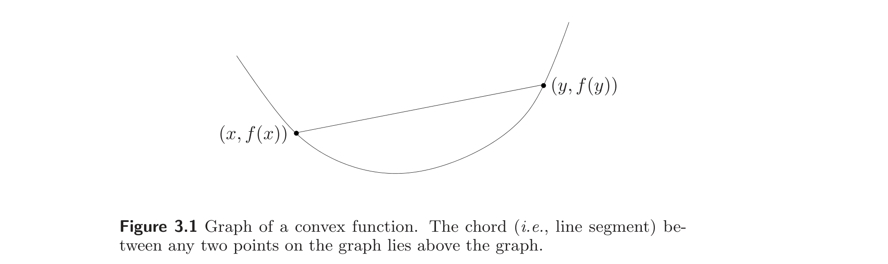
3.1.2 Extended-value extensions
3.1.2 扩充实值扩张
It is often convenient to extend a convex function to all of $\mathbb{R}^n$ by defining its value to be $\infty$ outside its domain. If $f$ is convex we define its extended-value extension $\tilde f : \mathbb{R}^n \to \mathbb{R} \cup \{\infty\}$ by
$$ \tilde f(x) = \begin{cases} f(x) & x \in \mathbf{dom}\, f \\ \infty & x \notin \mathbf{dom}\, f. \end{cases} $$
The extension $\tilde f$ is defined on all $\mathbb{R}^n$, and takes values in $\mathbb{R} \cup \{\infty\}$. We can recover the domain of the original function $f$ from the extension $\tilde f$ as $\mathbf{dom}\, f = \{x \mid \tilde f(x) < \infty\}$.
通常方便的做法是把凸函数扩张到整个 $\mathbb{R}^n$，方法是将其在定义域外的值定义为 $\infty$。若 $f$ 是凸的，我们定义其扩充实值扩张（extended-value extension）$\tilde f : \mathbb{R}^n \to \mathbb{R} \cup \{\infty\}$ 为
$$ \tilde f(x) = \begin{cases} f(x) & x \in \mathbf{dom}\, f \\ \infty & x \notin \mathbf{dom}\, f. \end{cases} $$
扩张 $\tilde f$ 定义在全部 $\mathbb{R}^n$ 上，取值于 $\mathbb{R} \cup \{\infty\}$。我们可由扩张 $\tilde f$ 还原原函数 $f$ 的定义域：$\mathbf{dom}\, f = \{x \mid \tilde f(x) < \infty\}$。
The extension can simplify notation, since we do not need to explicitly describe the domain, or add the qualifier ‘for all $x \in \mathbf{dom}\, f$’ every time we refer to $f(x)$. Consider, for example, the basic defining inequality (3.1). In terms of the extension $\tilde f$, we can express it as: for $0 < \theta < 1$,
$$ \tilde f(\theta x + (1-\theta)y) \le \theta \tilde f(x) + (1-\theta)\tilde f(y) $$
for any $x$ and $y$. (For $\theta = 0$ or $\theta = 1$ the inequality always holds.) Of course here we must interpret the inequality using extended arithmetic and ordering. For $x$ and $y$ both in $\mathbf{dom}\, f$, this inequality coincides with (3.1); if either is outside $\mathbf{dom}\, f$, then the righthand side is $\infty$, and the inequality therefore holds. As another example of this notational device, suppose $f_1$ and $f_2$ are two convex functions on $\mathbb{R}^n$. The pointwise sum $f = f_1 + f_2$ is the function with domain $\mathbf{dom}\, f = \mathbf{dom}\, f_1 \cap \mathbf{dom}\, f_2$, with $f(x) = f_1(x) + f_2(x)$ for any $x \in \mathbf{dom}\, f$. Using extended-value extensions we can simply say that for any $x$, $\tilde f(x) = \tilde f_1(x) + \tilde f_2(x)$. In this equation the domain of $f$ has been automatically defined as $\mathbf{dom}\, f = \mathbf{dom}\, f_1 \cap \mathbf{dom}\, f_2$, since $\tilde f(x) = \infty$ whenever $x \notin \mathbf{dom}\, f_1$ or $x \notin \mathbf{dom}\, f_2$. In this example we are relying on extended arithmetic to automatically define the domain.
该扩张可简化记号，因为我们不必显式描述定义域，也不必每次引用 $f(x)$ 时都附加限定“对所有 $x \in \mathbf{dom}\, f$”。例如，考虑基本定义不等式 (3.1)。用扩张 $\tilde f$ 可表示为：对 $0 < \theta < 1$，
$$ \tilde f(\theta x + (1-\theta)y) \le \theta \tilde f(x) + (1-\theta)\tilde f(y) $$
对任意 $x$、$y$ 成立。（对 $\theta = 0$ 或 $\theta = 1$，不等式恒成立。）当然，这里我们必须用扩张的算术与序来解释该不等式。当 $x$、$y$ 都在 $\mathbf{dom}\, f$ 中时，此不等式与 (3.1) 一致；若其中任一在 $\mathbf{dom}\, f$ 外，则右端为 $\infty$，故不等式成立。作为此记号技巧的另一例，设 $f_1$、$f_2$ 是 $\mathbb{R}^n$ 上的两个凸函数。逐点求和 $f = f_1 + f_2$ 是定义域为 $\mathbf{dom}\, f = \mathbf{dom}\, f_1 \cap \mathbf{dom}\, f_2$ 的函数，满足 $f(x) = f_1(x) + f_2(x)$（对任意 $x \in \mathbf{dom}\, f$）。使用扩充实值扩张，我们可以直接说对任意 $x$，$\tilde f(x) = \tilde f_1(x) + \tilde f_2(x)$。在此等式中，$f$ 的定义域被自动确定为 $\mathbf{dom}\, f = \mathbf{dom}\, f_1 \cap \mathbf{dom}\, f_2$，因为当 $x \notin \mathbf{dom}\, f_1$ 或 $x \notin \mathbf{dom}\, f_2$ 时 $\tilde f(x) = \infty$。此例中我们依赖扩张算术来自动定义定义域。
In this book we will use the same symbol to denote a convex function and its extension, whenever there is no harm from the ambiguity. This is the same as assuming that all convex functions are implicitly extended, i.e., are defined as $\infty$ outside their domains.
在本书中，只要不致歧义，我们就用同一符号表示凸函数及其扩张。这等价于假设所有凸函数都隐式地被扩张了，即在其定义域外取值为 $\infty$。
Example 3.1 Indicator function of a convex set. Let $C \subseteq \mathbb{R}^n$ be a convex set, and consider the (convex) function $I_C$ with domain $C$ and $I_C(x) = 0$ for all $x \in C$. In other words, the function is identically zero on the set $C$. Its extended-value extension is given by
$$ \tilde I_C(x) = \begin{cases} 0 & x \in C \\ \infty & x \notin C. \end{cases} $$
The convex function $\tilde I_C$ is called the indicator function of the set $C$.
例 3.1 凸集的指示函数。 设 $C \subseteq \mathbb{R}^n$ 是凸集，考虑（凸）函数 $I_C$，其定义域为 $C$ 且对所有 $x \in C$ 有 $I_C(x) = 0$。换言之，该函数在集合 $C$ 上恒为零。其扩充实值扩张为
$$ \tilde I_C(x) = \begin{cases} 0 & x \in C \\ \infty & x \notin C. \end{cases} $$
凸函数 $\tilde I_C$ 称为集合 $C$ 的指示函数（indicator function）。
We can play several notational tricks with the indicator function $\tilde I_C$. For example the problem of minimizing a function $f$ (defined on all of $\mathbb{R}^n$, say) on the set $C$ is the same as minimizing the function $f + \tilde I_C$ over all of $\mathbb{R}^n$. Indeed, the function $f + \tilde I_C$ is (by our convention) $f$ restricted to the set $C$.
我们可以对指示函数 $\tilde I_C$ 施展若干记号技巧。例如，在集合 $C$ 上最小化函数 $f$（设其定义在全部 $\mathbb{R}^n$ 上）与在全部 $\mathbb{R}^n$ 上最小化函数 $f + \tilde I_C$ 是同一问题。事实上，函数 $f + \tilde I_C$（按我们的约定）就是 $f$ 限制到集合 $C$ 上的结果。
In a similar way we can extend a concave function by defining it to be $-\infty$ outside its domain.
类似地，我们可以把凹函数在其定义域外定义为 $-\infty$ 来扩张。
3.1.3 First-order conditions
3.1.3 一阶条件
Suppose $f$ is differentiable (i.e., its gradient $\nabla f$ exists at each point in $\mathbf{dom}\, f$, which is open). Then $f$ is convex if and only if $\mathbf{dom}\, f$ is convex and
$$ f(y) \ge f(x) + \nabla f(x)^T (y-x) \tag{3.2}$$
holds for all $x, y \in \mathbf{dom}\, f$. This inequality is illustrated in figure 3.2.
设 $f$ 可微（即其梯度 $\nabla f$ 在 $\mathbf{dom}\, f$ 的每一点都存在，且 $\mathbf{dom}\, f$ 是开集）。则 $f$ 是凸的当且仅当 $\mathbf{dom}\, f$ 是凸的，且
$$ f(y) \ge f(x) + \nabla f(x)^T (y-x) \tag{3.2}$$
对所有 $x, y \in \mathbf{dom}\, f$ 成立。此不等式见图 3.2。
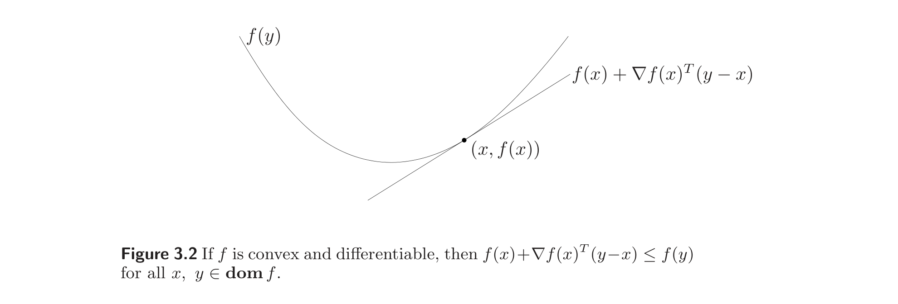
The affine function of $y$ given by $f(x)+\nabla f(x)^T (y-x)$ is, of course, the first-order Taylor approximation of $f$ near $x$. The inequality (3.2) states that for a convex function, the first-order Taylor approximation is in fact a global underestimator of the function. Conversely, if the first-order Taylor approximation of a function is always a global underestimator of the function, then the function is convex.
$f(x)+\nabla f(x)^T (y-x)$ 作为 $y$ 的仿射函数，当然就是 $f$ 在 $x$ 附近的一阶 Taylor 近似。不等式 (3.2) 说明：对凸函数，其一阶 Taylor 近似实际上是该函数的全局下估计。反之，若一函数的一阶 Taylor 近似总是其全局下估计，则该函数是凸的。
The inequality (3.2) shows that from local information about a convex function (i.e., its value and derivative at a point) we can derive global information (i.e., a global underestimator of it). This is perhaps the most important property of convex functions, and explains some of the remarkable properties of convex functions and convex optimization problems. As one simple example, the inequality (3.2) shows that if $\nabla f(x) = 0$, then for all $y \in \mathbf{dom}\, f$, $f(y) \ge f(x)$, i.e., $x$ is a global minimizer of the function $f$.
不等式 (3.2) 表明，由凸函数的局部信息（即其在一处的值与导数）可以推导全局信息（即它的一个全局下估计）。这或许是凸函数最重要的性质，也解释了凸函数与凸优化问题的若干显著特性。一个简单的例子：不等式 (3.2) 表明若 $\nabla f(x) = 0$，则对所有 $y \in \mathbf{dom}\, f$ 有 $f(y) \ge f(x)$，即 $x$ 是函数 $f$ 的全局极小点。
Strict convexity can also be characterized by a first-order condition: $f$ is strictly convex if and only if $\mathbf{dom}\, f$ is convex and for $x, y \in \mathbf{dom}\, f$, $x \ne y$, we have
$$ f(y) > f(x) + \nabla f(x)^T (y-x). \tag{3.3}$$
严格凸性也可用一阶条件刻画：$f$ 严格凸当且仅当 $\mathbf{dom}\, f$ 是凸的，且对 $x, y \in \mathbf{dom}\, f$、$x \ne y$，有
$$ f(y) > f(x) + \nabla f(x)^T (y-x). \tag{3.3}$$
For concave functions we have the corresponding characterization: $f$ is concave if and only if $\mathbf{dom}\, f$ is convex and
$$ f(y) \le f(x) + \nabla f(x)^T (y-x) $$
for all $x, y \in \mathbf{dom}\, f$.
对凹函数有对应的刻画：$f$ 是凹的当且仅当 $\mathbf{dom}\, f$ 是凸的，且
$$ f(y) \le f(x) + \nabla f(x)^T (y-x) $$
对所有 $x, y \in \mathbf{dom}\, f$ 成立。
Proof of first-order convexity condition
一阶凸性条件的证明
To prove (3.2), we first consider the case $n = 1$: We show that a differentiable function $f : \mathbb{R} \to \mathbb{R}$ is convex if and only if
$$ f(y) \ge f(x) + f'(x)(y-x) \tag{3.4}$$
for all $x$ and $y$ in $\mathbf{dom}\, f$.
为证 (3.2)，先考虑 $n = 1$ 的情形：我们证明可微函数 $f : \mathbb{R} \to \mathbb{R}$ 是凸的当且仅当
$$ f(y) \ge f(x) + f'(x)(y-x) \tag{3.4}$$
对 $\mathbf{dom}\, f$ 中的所有 $x$、$y$ 成立。
Assume first that $f$ is convex and $x, y \in \mathbf{dom}\, f$. Since $\mathbf{dom}\, f$ is convex (i.e., an interval), we conclude that for all $0 < t \le 1$, $x + t(y-x) \in \mathbf{dom}\, f$, and by convexity of $f$,
$$ f(x + t(y-x)) \le (1-t)f(x) + t f(y). $$
If we divide both sides by $t$, we obtain
$$ f(y) \ge f(x) + \frac{f(x + t(y-x)) - f(x)}{t}, $$
and taking the limit as $t \to 0$ yields (3.4).
先设 $f$ 是凸的且 $x, y \in \mathbf{dom}\, f$。由于 $\mathbf{dom}\, f$ 凸（即区间），故对一切 $0 < t \le 1$ 有 $x + t(y-x) \in \mathbf{dom}\, f$，由 $f$ 的凸性得
$$ f(x + t(y-x)) \le (1-t)f(x) + t f(y). $$
两边除以 $t$，得
$$ f(y) \ge f(x) + \frac{f(x + t(y-x)) - f(x)}{t}, $$
令 $t \to 0$ 取极限即得 (3.4)。
To show sufficiency, assume the function satisfies (3.4) for all $x$ and $y$ in $\mathbf{dom}\, f$ (which is an interval). Choose any $x \ne y$, and $0 \le \theta \le 1$, and let $z = \theta x + (1-\theta)y$. Applying (3.4) twice yields
$$ f(x) \ge f(z) + f'(z)(x-z), $$
$$ f(y) \ge f(z) + f'(z)(y-z). $$
Multiplying the first inequality by $\theta$, the second by $1-\theta$, and adding them yields
$$ \theta f(x) + (1-\theta)f(y) \ge f(z), $$
which proves that $f$ is convex.
为证充分性，设函数对 $\mathbf{dom}\, f$（区间）中所有 $x$、$y$ 满足 (3.4)。任取 $x \ne y$ 及 $0 \le \theta \le 1$，令 $z = \theta x + (1-\theta)y$。对 (3.4) 应用两次得
$$ f(x) \ge f(z) + f'(z)(x-z), $$
$$ f(y) \ge f(z) + f'(z)(y-z). $$
第一式乘以 $\theta$，第二式乘以 $1-\theta$，相加得
$$ \theta f(x) + (1-\theta)f(y) \ge f(z), $$
即证 $f$ 是凸的。
Now we can prove the general case, with $f : \mathbb{R}^n \to \mathbb{R}$. Let $x, y \in \mathbb{R}^n$ and consider $f$ restricted to the line passing through them, i.e., the function defined by $g(t) = f(ty + (1-t)x)$, so $g'(t) = \nabla f(ty + (1-t)x)^T (y-x)$.
现在可证一般情形，$f : \mathbb{R}^n \to \mathbb{R}$。取 $x, y \in \mathbb{R}^n$，考虑 $f$ 限制到过此两点的直线上所得函数 $g(t) = f(ty + (1-t)x)$，则 $g'(t) = \nabla f(ty + (1-t)x)^T (y-x)$。
First assume $f$ is convex, which implies $g$ is convex, so by the argument above we have $g(1) \ge g(0) + g'(0)$, which means
$$ f(y) \ge f(x) + \nabla f(x)^T (y-x). $$
先设 $f$ 凸，则 $g$ 凸，由前述论证有 $g(1) \ge g(0) + g'(0)$，即
$$ f(y) \ge f(x) + \nabla f(x)^T (y-x). $$
Now assume that this inequality holds for any $x$ and $y$, so if $ty + (1-t)x \in \mathbf{dom}\, f$ and $\tilde t y + (1-\tilde t)x \in \mathbf{dom}\, f$, we have
$$ f(ty + (1-t)x) \ge f(\tilde t y + (1-\tilde t)x) + \nabla f(\tilde t y + (1-\tilde t)x)^T (y-x)(t-\tilde t), $$
i.e., $g(t) \ge g(\tilde t) + g'(\tilde t)(t-\tilde t)$. We have seen that this implies that $g$ is convex.
现设此不等式对任意 $x$、$y$ 成立，则当 $ty + (1-t)x \in \mathbf{dom}\, f$ 且 $\tilde t y + (1-\tilde t)x \in \mathbf{dom}\, f$ 时，有
$$ f(ty + (1-t)x) \ge f(\tilde t y + (1-\tilde t)x) + \nabla f(\tilde t y + (1-\tilde t)x)^T (y-x)(t-\tilde t), $$
即 $g(t) \ge g(\tilde t) + g'(\tilde t)(t-\tilde t)$。我们已知这蕴含 $g$ 凸。
3.1.4 Second-order conditions
3.1.4 二阶条件
We now assume that $f$ is twice differentiable, that is, its Hessian or second derivative $\nabla^2 f$ exists at each point in $\mathbf{dom}\, f$, which is open. Then $f$ is convex if and only if $\mathbf{dom}\, f$ is convex and its Hessian is positive semidefinite: for all $x \in \mathbf{dom}\, f$,
$$ \nabla^2 f(x) \succeq 0. $$
现设 $f$ 二阶可微，即其 Hessian 矩阵（二阶导数）$\nabla^2 f$ 在 $\mathbf{dom}\, f$（开集）的每一点都存在。则 $f$ 是凸的当且仅当 $\mathbf{dom}\, f$ 是凸的且其 Hessian 半正定：对所有 $x \in \mathbf{dom}\, f$，
$$ \nabla^2 f(x) \succeq 0. $$
For a function on $\mathbb{R}$, this reduces to the simple condition $f''(x) \ge 0$ (and $\mathbf{dom}\, f$ convex, i.e., an interval), which means that the derivative is nondecreasing. The condition $\nabla^2 f(x) \succeq 0$ can be interpreted geometrically as the requirement that the graph of the function have positive (upward) curvature at $x$. We leave the proof of the second-order condition as an exercise (exercise 3.8).
对 $\mathbb{R}$ 上的函数，此条件简化为 $f''(x) \ge 0$（且 $\mathbf{dom}\, f$ 凸，即区间），意即导数非减。条件 $\nabla^2 f(x) \succeq 0$ 可几何地解释为：函数图像在 $x$ 处有正（向上）的曲率。二阶条件的证明留作练习（练习 3.8）。
Similarly, $f$ is concave if and only if $\mathbf{dom}\, f$ is convex and $\nabla^2 f(x) \preceq 0$ for all $x \in \mathbf{dom}\, f$. Strict convexity can be partially characterized by second-order conditions.
类似地，$f$ 是凹的当且仅当 $\mathbf{dom}\, f$ 是凸的且对所有 $x \in \mathbf{dom}\, f$ 有 $\nabla^2 f(x) \preceq 0$。严格凸性可由二阶条件部分刻画。
If $\nabla^2 f(x) \succ 0$ for all $x \in \mathbf{dom}\, f$, then $f$ is strictly convex. The converse, however, is not true: for example, the function $f : \mathbb{R} \to \mathbb{R}$ given by $f(x) = x^4$ is strictly convex but has zero second derivative at $x = 0$.
若对所有 $x \in \mathbf{dom}\, f$ 有 $\nabla^2 f(x) \succ 0$，则 $f$ 严格凸。然而反之不真：例如函数 $f : \mathbb{R} \to \mathbb{R}$，$f(x) = x^4$ 严格凸但在 $x = 0$ 处二阶导数为零。
Example 3.2 Quadratic functions. Consider the quadratic function $f : \mathbb{R}^n \to \mathbb{R}$, with $\mathbf{dom}\, f = \mathbb{R}^n$, given by
$$ f(x) = (1/2)x^T P x + q^T x + r, $$
with $P \in \mathbf{S}^n$, $q \in \mathbb{R}^n$, and $r \in \mathbb{R}$. Since $\nabla^2 f(x) = P$ for all $x$, $f$ is convex if and only if $P \succeq 0$ (and concave if and only if $P \preceq 0$).
例 3.2 二次函数。 考虑二次函数 $f : \mathbb{R}^n \to \mathbb{R}$，$\mathbf{dom}\, f = \mathbb{R}^n$，
$$ f(x) = (1/2)x^T P x + q^T x + r, $$
其中 $P \in \mathbf{S}^n$，$q \in \mathbb{R}^n$，$r \in \mathbb{R}$。由于对所有 $x$ 有 $\nabla^2 f(x) = P$，故 $f$ 凸当且仅当 $P \succeq 0$（凹当且仅当 $P \preceq 0$）。
For quadratic functions, strict convexity is easily characterized: $f$ is strictly convex if and only if $P \succ 0$ (and strictly concave if and only if $P \prec 0$).
对二次函数，严格凸性易于刻画：$f$ 严格凸当且仅当 $P \succ 0$（严格凹当且仅当 $P \prec 0$）。
Remark 3.1 The separate requirement that $\mathbf{dom}\, f$ be convex cannot be dropped from the first- or second-order characterizations of convexity and concavity. For example, the function $f(x) = 1/x^2$, with $\mathbf{dom}\, f = \{x \in \mathbb{R} \mid x \ne 0\}$, satisfies $f''(x) > 0$ for all $x \in \mathbf{dom}\, f$, but is not a convex function.
注 3.1 在凸性与凹性的一阶或二阶刻画中，$\mathbf{dom}\, f$ 为凸这一单独要求不可省略。例如函数 $f(x) = 1/x^2$，$\mathbf{dom}\, f = \{x \in \mathbb{R} \mid x \ne 0\}$，对所有 $x \in \mathbf{dom}\, f$ 满足 $f''(x) > 0$，但它并非凸函数。
3.1.5 Examples
3.1.5 例子
We have already mentioned that all linear and affine functions are convex (and concave), and have described the convex and concave quadratic functions. In this section we give a few more examples of convex and concave functions. We start with some functions on $\mathbb{R}$, with variable $x$.
我们已提到所有线性与仿射函数都凸（且凹），并描述了凸的与凹的二次函数。本节再给出若干凸函数与凹函数的例子。先从 $\mathbb{R}$ 上以 $x$ 为变量的一些函数开始。
- Exponential. $e^{ax}$ is convex on $\mathbb{R}$, for any $a \in \mathbb{R}$.
- Powers. $x^a$ is convex on $\mathbb{R}_{++}$ when $a \ge 1$ or $a \le 0$, and concave for $0 \le a \le 1$.
- Powers of absolute value. $|x|^p$, for $p \ge 1$, is convex on $\mathbb{R}$.
- Logarithm. $\log x$ is concave on $\mathbb{R}_{++}$.
- 指数函数。 $e^{ax}$ 在 $\mathbb{R}$ 上凸，对任意 $a \in \mathbb{R}$。
- 幂函数。 $x^a$ 在 $\mathbb{R}_{++}$ 上当 $a \ge 1$ 或 $a \le 0$ 时凸，当 $0 \le a \le 1$ 时凹。
- 绝对值的幂。 $|x|^p$（$p \ge 1$）在 $\mathbb{R}$ 上凸。
- 对数。 $\log x$ 在 $\mathbb{R}_{++}$ 上凹。
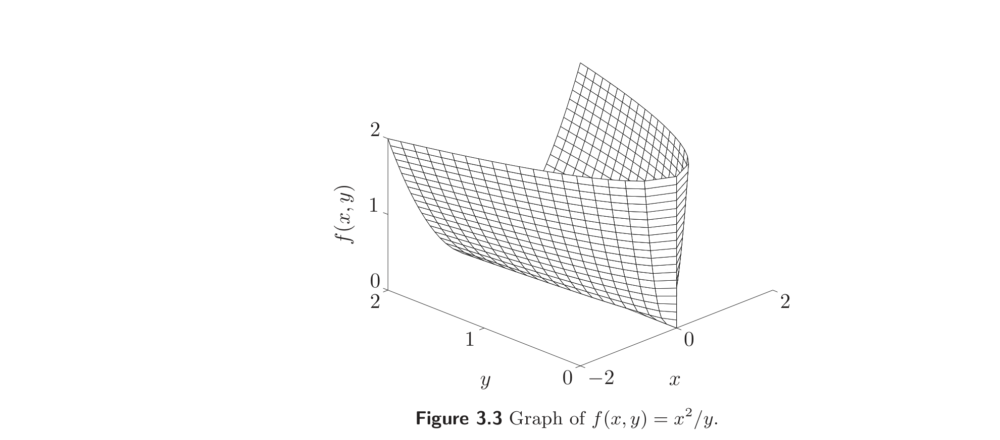
- Negative entropy. $x \log x$ (either on $\mathbb{R}_{++}$, or on $\mathbb{R}_+$, defined as 0 for $x = 0$) is convex.
- 负熵。 $x \log x$（在 $\mathbb{R}_{++}$ 上，或在 $\mathbb{R}_+$ 上并定义 $x = 0$ 时取值为 0）是凸的。
Convexity or concavity of these examples can be shown by verifying the basic inequality (3.1), or by checking that the second derivative is nonnegative or nonpositive. For example, with $f(x) = x \log x$ we have
$$ f'(x) = \log x + 1, \qquad f''(x) = 1/x, $$
so that $f''(x) > 0$ for $x > 0$. This shows that the negative entropy function is (strictly) convex.
这些例子的凸性或凹性可通过验证基本不等式 (3.1) 或检查二阶导数非负或非正来证明。例如对 $f(x) = x \log x$，有
$$ f'(x) = \log x + 1, \qquad f''(x) = 1/x, $$
故当 $x > 0$ 时 $f''(x) > 0$。这表明负熵函数是（严格）凸的。
We now give a few interesting examples of functions on $\mathbb{R}^n$.
下面给出若干 $\mathbb{R}^n$ 上函数的有趣例子。
- Norms. Every norm on $\mathbb{R}^n$ is convex.
- Max function. $f(x) = \max\{x_1, \ldots, x_n\}$ is convex on $\mathbb{R}^n$.
- Quadratic-over-linear function. The function $f(x, y) = x^2/y$, with
$$ \mathbf{dom}\, f = \mathbb{R} \times \mathbb{R}_{++} = \{(x, y) \in \mathbb{R}^2 \mid y > 0\}, $$
is convex (figure 3.3).
- 范数。 $\mathbb{R}^n$ 上的任一范数都是凸的。
- 取最大值函数。 $f(x) = \max\{x_1, \ldots, x_n\}$ 在 $\mathbb{R}^n$ 上凸。
- 二次线性商函数。 函数 $f(x, y) = x^2/y$，其中
$$ \mathbf{dom}\, f = \mathbb{R} \times \mathbb{R}_{++} = \{(x, y) \in \mathbb{R}^2 \mid y > 0\}, $$
是凸的（图 3.3）。
- Log-sum-exp. The function $f(x) = \log \left(e^{x_1} + \cdots + e^{x_n}\right)$ is convex on $\mathbb{R}^n$. This function can be interpreted as a differentiable (in fact, analytic) approximation of the max function, since
$$ \max\{x_1, \ldots, x_n\} \le f(x) \le \max\{x_1, \ldots, x_n\} + \log n $$
for all $x$. (The second inequality is tight when all components of $x$ are equal.) Figure 3.4 shows $f$ for $n = 2$.
- 对数和指数函数。 函数 $f(x) = \log \left(e^{x_1} + \cdots + e^{x_n}\right)$ 在 $\mathbb{R}^n$ 上凸。该函数可解释为取最大值函数的一个可微（事实上解析的）近似，因为
$$ \max\{x_1, \ldots, x_n\} \le f(x) \le \max\{x_1, \ldots, x_n\} + \log n $$
对所有 $x$ 成立。（当 $x$ 的所有分量相等时第二个不等式紧。）图 3.4 给出了 $n = 2$ 时的 $f$。
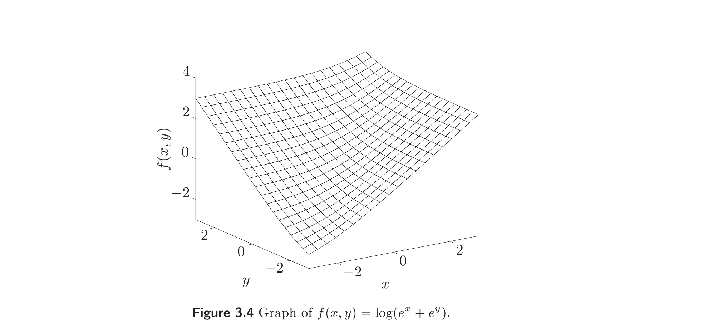
- Geometric mean. The geometric mean $f(x) = \left(\prod_{i=1}^n x_i\right)^{1/n}$ is concave on $\mathbf{dom}\, f = \mathbb{R}^n_{++}$.
- Log-determinant. The function $f(X) = \log \det X$ is concave on $\mathbf{dom}\, f = \mathbf{S}^n_{++}$.
- 几何平均。 几何平均 $f(x) = \left(\prod_{i=1}^n x_i\right)^{1/n}$ 在 $\mathbf{dom}\, f = \mathbb{R}^n_{++}$ 上凹。
- 对数行列式。 函数 $f(X) = \log \det X$ 在 $\mathbf{dom}\, f = \mathbf{S}^n_{++}$ 上凹。
Convexity (or concavity) of these examples can be verified in several ways, such as directly verifying the inequality (3.1), verifying that the Hessian is positive semidefinite, or restricting the function to an arbitrary line and verifying convexity of the resulting function of one variable.
这些例子的凸性（或凹性）可用多种方法验证：直接验证不等式 (3.1)、验证 Hessian 半正定，或把函数限制到任意直线上验证所得一元函数的凸性。
Norms. If $f : \mathbb{R}^n \to \mathbb{R}$ is a norm, and $0 \le \theta \le 1$, then
$$ f(\theta x + (1-\theta)y) \le f(\theta x) + f((1-\theta)y) = \theta f(x) + (1-\theta)f(y). $$
The inequality follows from the triangle inequality, and the equality follows from homogeneity of a norm.
范数。 若 $f : \mathbb{R}^n \to \mathbb{R}$ 是范数，且 $0 \le \theta \le 1$，则
$$ f(\theta x + (1-\theta)y) \le f(\theta x) + f((1-\theta)y) = \theta f(x) + (1-\theta)f(y). $$
不等式由三角不等式得到，等式由范数的齐性得到。
Max function. The function $f(x) = \max_i x_i$ satisfies, for $0 \le \theta \le 1$,
$$ f(\theta x + (1-\theta)y) = \max_i (\theta x_i + (1-\theta)y_i) \le \theta \max_i x_i + (1-\theta) \max_i y_i = \theta f(x) + (1-\theta)f(y). $$
取最大值函数。 函数 $f(x) = \max_i x_i$ 满足，对 $0 \le \theta \le 1$，
$$ f(\theta x + (1-\theta)y) = \max_i (\theta x_i + (1-\theta)y_i) \le \theta \max_i x_i + (1-\theta) \max_i y_i = \theta f(x) + (1-\theta)f(y). $$
Quadratic-over-linear function. To show that the quadratic-over-linear function $f(x, y) = x^2/y$ is convex, we note that (for $y > 0$),
$$ \nabla^2 f(x, y) = \frac{2}{y^3} \begin{bmatrix} y^2 & -xy \\ -xy & x^2 \end{bmatrix} = \frac{2}{y^3} \begin{bmatrix} y \\ -x \end{bmatrix} \begin{bmatrix} y \\ -x \end{bmatrix}^T \succeq 0. $$
二次线性商函数。 为证二次线性商函数 $f(x, y) = x^2/y$ 凸，注意（当 $y > 0$ 时）
$$ \nabla^2 f(x, y) = \frac{2}{y^3} \begin{bmatrix} y^2 & -xy \\ -xy & x^2 \end{bmatrix} = \frac{2}{y^3} \begin{bmatrix} y \\ -x \end{bmatrix} \begin{bmatrix} y \\ -x \end{bmatrix}^T \succeq 0. $$
Log-sum-exp. The Hessian of the log-sum-exp function is
$$ \nabla^2 f(x) = \frac{1}{(\mathbf{1}^T z)^2} \left((\mathbf{1}^T z) \mathbf{diag}(z) - z z^T\right), $$
where $z = (e^{x_1}, \ldots, e^{x_n})$. To verify that $\nabla^2 f(x) \succeq 0$ we must show that for all $v$, $v^T \nabla^2 f(x) v \ge 0$, i.e.,
$$ v^T \nabla^2 f(x) v = \frac{1}{(\mathbf{1}^T z)^2} \left( \left(\sum_{i=1}^n z_i\right) \left(\sum_{i=1}^n v_i^2 z_i\right) - \left(\sum_{i=1}^n v_i z_i\right)^2 \right) \ge 0. $$
But this follows from the Cauchy-Schwarz inequality $(a^T a)(b^T b) \ge (a^T b)^2$ applied to the vectors with components $a_i = v_i\sqrt{z_i}$, $b_i = \sqrt{z_i}$.
对数和指数函数。 对数和指数函数的 Hessian 为
$$ \nabla^2 f(x) = \frac{1}{(\mathbf{1}^T z)^2} \left((\mathbf{1}^T z) \mathbf{diag}(z) - z z^T\right), $$
其中 $z = (e^{x_1}, \ldots, e^{x_n})$。为证 $\nabla^2 f(x) \succeq 0$，需证对所有 $v$，$v^T \nabla^2 f(x) v \ge 0$，即
$$ v^T \nabla^2 f(x) v = \frac{1}{(\mathbf{1}^T z)^2} \left( \left(\sum_{i=1}^n z_i\right) \left(\sum_{i=1}^n v_i^2 z_i\right) - \left(\sum_{i=1}^n v_i z_i\right)^2 \right) \ge 0. $$
这由 Cauchy-Schwarz 不等式 $(a^T a)(b^T b) \ge (a^T b)^2$ 应用于分量 $a_i = v_i\sqrt{z_i}$、$b_i = \sqrt{z_i}$ 的向量即得。
Geometric mean. In a similar way we can show that the geometric mean $f(x) = \left(\prod_{i=1}^n x_i\right)^{1/n}$ is concave on $\mathbf{dom}\, f = \mathbb{R}^n_{++}$. Its Hessian $\nabla^2 f(x)$ is given by
$$ \frac{\partial^2 f(x)}{\partial x_k^2} = -\frac{(n-1)\left(\prod_{i=1}^n x_i\right)^{1/n}}{n^2 x_k^2}, \qquad \frac{\partial^2 f(x)}{\partial x_k \partial x_l} = \frac{\left(\prod_{i=1}^n x_i\right)^{1/n}}{n^2 x_k x_l} $$
for $k \ne l$, and can be expressed as
$$ \nabla^2 f(x) = -\frac{\prod_{i=1}^n x_i^{1/n}}{n^2} \left(n\, \mathbf{diag}(1/x_1^2, \ldots, 1/x_n^2) - q q^T\right) $$
where $q_i = 1/x_i$. We must show that $\nabla^2 f(x) \preceq 0$, i.e., that
$$ v^T \nabla^2 f(x) v = -\frac{\prod_{i=1}^n x_i^{1/n}}{n^2} \left(n \sum_{i=1}^n v_i^2/x_i^2 - \left(\sum_{i=1}^n v_i/x_i\right)^2\right) \le 0 $$
for all $v$. Again this follows from the Cauchy-Schwarz inequality $(a^T a)(b^T b) \ge (a^T b)^2$, applied to the vectors $a = \mathbf{1}$ and $b_i = v_i/x_i$.
几何平均。 类似可证几何平均 $f(x) = \left(\prod_{i=1}^n x_i\right)^{1/n}$ 在 $\mathbf{dom}\, f = \mathbb{R}^n_{++}$ 上凹。其 Hessian $\nabla^2 f(x)$ 为
$$ \frac{\partial^2 f(x)}{\partial x_k^2} = -\frac{(n-1)\left(\prod_{i=1}^n x_i\right)^{1/n}}{n^2 x_k^2}, \qquad \frac{\partial^2 f(x)}{\partial x_k \partial x_l} = \frac{\left(\prod_{i=1}^n x_i\right)^{1/n}}{n^2 x_k x_l} $$
（$k \ne l$），且可表为
$$ \nabla^2 f(x) = -\frac{\prod_{i=1}^n x_i^{1/n}}{n^2} \left(n\, \mathbf{diag}(1/x_1^2, \ldots, 1/x_n^2) - q q^T\right) $$
其中 $q_i = 1/x_i$。需证 $\nabla^2 f(x) \preceq 0$，即
$$ v^T \nabla^2 f(x) v = -\frac{\prod_{i=1}^n x_i^{1/n}}{n^2} \left(n \sum_{i=1}^n v_i^2/x_i^2 - \left(\sum_{i=1}^n v_i/x_i\right)^2\right) \le 0 $$
对所有 $v$ 成立。这同样由 Cauchy-Schwarz 不等式 $(a^T a)(b^T b) \ge (a^T b)^2$ 应用于向量 $a = \mathbf{1}$、$b_i = v_i/x_i$ 得到。
Log-determinant. For the function $f(X) = \log \det X$, we can verify concavity by considering an arbitrary line, given by $X = Z + tV$, where $Z, V \in \mathbf{S}^n$. We define $g(t) = f(Z + tV)$, and restrict $g$ to the interval of values of $t$ for which $Z + tV \succ 0$. Without loss of generality, we can assume that $t = 0$ is inside this interval, i.e., $Z \succ 0$. We have
$$ g(t) = \log \det(Z + tV) = \log \det(Z^{1/2}(I + t Z^{-1/2} V Z^{-1/2}) Z^{1/2}) = \sum_{i=1}^n \log(1 + t\lambda_i) + \log \det Z $$
where $\lambda_1, \ldots, \lambda_n$ are the eigenvalues of $Z^{-1/2} V Z^{-1/2}$. Therefore we have
$$ g'(t) = \sum_{i=1}^n \frac{\lambda_i}{1 + t\lambda_i}, \qquad g''(t) = -\sum_{i=1}^n \frac{\lambda_i^2}{(1 + t\lambda_i)^2}. $$
Since $g''(t) \le 0$, we conclude that $f$ is concave.
对数行列式。 对函数 $f(X) = \log \det X$，可通过考虑任意直线 $X = Z + tV$（其中 $Z, V \in \mathbf{S}^n$）来验证凹性。定义 $g(t) = f(Z + tV)$，并把 $g$ 限制到使 $Z + tV \succ 0$ 的 $t$ 的区间上。不妨设 $t = 0$ 在此区间内，即 $Z \succ 0$。有
$$ g(t) = \log \det(Z + tV) = \log \det(Z^{1/2}(I + t Z^{-1/2} V Z^{-1/2}) Z^{1/2}) = \sum_{i=1}^n \log(1 + t\lambda_i) + \log \det Z $$
其中 $\lambda_1, \ldots, \lambda_n$ 是 $Z^{-1/2} V Z^{-1/2}$ 的特征值。故
$$ g'(t) = \sum_{i=1}^n \frac{\lambda_i}{1 + t\lambda_i}, \qquad g''(t) = -\sum_{i=1}^n \frac{\lambda_i^2}{(1 + t\lambda_i)^2}. $$
由 $g''(t) \le 0$ 得 $f$ 凹。
3.1.6 Sublevel sets
3.1.6 下水平集
The $\alpha$-sublevel set of a function $f : \mathbb{R}^n \to \mathbb{R}$ is defined as
$$ C_\alpha = \{x \in \mathbf{dom}\, f \mid f(x) \le \alpha\}. $$
Sublevel sets of a convex function are convex, for any value of $\alpha$. The proof is immediate from the definition of convexity: if $x, y \in C_\alpha$, then $f(x) \le \alpha$ and $f(y) \le \alpha$, and so $f(\theta x + (1-\theta)y) \le \alpha$ for $0 \le \theta \le 1$, and hence $\theta x + (1-\theta)y \in C_\alpha$.
函数 $f : \mathbb{R}^n \to \mathbb{R}$ 的 $\alpha$-下水平集（sublevel set）定义为
$$ C_\alpha = \{x \in \mathbf{dom}\, f \mid f(x) \le \alpha\}. $$
对任意 $\alpha$ 值，凸函数的下水平集都是凸的。证明由凸性定义立得：若 $x, y \in C_\alpha$，则 $f(x) \le \alpha$ 且 $f(y) \le \alpha$，从而对 $0 \le \theta \le 1$ 有 $f(\theta x + (1-\theta)y) \le \alpha$，故 $\theta x + (1-\theta)y \in C_\alpha$。
The converse is not true: a function can have all its sublevel sets convex, but not be a convex function. For example, $f(x) = -e^x$ is not convex on $\mathbb{R}$ (indeed, it is strictly concave) but all its sublevel sets are convex.
反之不真：一函数可以所有下水平集都是凸的，却不是凸函数。例如 $f(x) = -e^x$ 在 $\mathbb{R}$ 上不凸（实际上是严格凹的），但其所有下水平集都是凸的。
If $f$ is concave, then its $\alpha$-superlevel set, given by $\{x \in \mathbf{dom}\, f \mid f(x) \ge \alpha\}$, is a convex set. The sublevel set property is often a good way to establish convexity of a set, by expressing it as a sublevel set of a convex function, or as the superlevel set of a concave function.
若 $f$ 是凹的，则其 $\alpha$-上水平集 $\{x \in \mathbf{dom}\, f \mid f(x) \ge \alpha\}$ 是凸集。下水平集性质常常是证明集合凸性的好方法：把集合表示为一个凸函数的下水平集，或一个凹函数的上水平集。
Example 3.3 The geometric and arithmetic means of $x \in \mathbb{R}^n_+$ are, respectively,
$$ G(x) = \left(\prod_{i=1}^n x_i\right)^{1/n}, \qquad A(x) = \frac{1}{n} \sum_{i=1}^n x_i, $$
(where we take $0^{1/n} = 0$ in our definition of $G$). The arithmetic-geometric mean inequality states that $G(x) \le A(x)$.
Suppose $0 \le \alpha \le 1$, and consider the set
$$ \{x \in \mathbb{R}^n_+ \mid G(x) \ge \alpha A(x)\}, $$
i.e., the set of vectors with geometric mean at least as large as a factor $\alpha$ times the arithmetic mean. This set is convex, since it is the 0-superlevel set of the function $G(x) - \alpha A(x)$, which is concave. In fact, the set is positively homogeneous, so it is a convex cone.
例 3.3 $x \in \mathbb{R}^n_+$ 的几何平均与算术平均分别为
$$ G(x) = \left(\prod_{i=1}^n x_i\right)^{1/n}, \qquad A(x) = \frac{1}{n} \sum_{i=1}^n x_i, $$
（其中在 $G$ 的定义中取 $0^{1/n} = 0$）。算术-几何平均不等式为 $G(x) \le A(x)$。
设 $0 \le \alpha \le 1$，考虑集合
$$ \{x \in \mathbb{R}^n_+ \mid G(x) \ge \alpha A(x)\}, $$
即几何平均至少为算术平均的 $\alpha$ 倍的向量构成的集合。该集合是凸的，因为它是凹函数 $G(x) - \alpha A(x)$ 的 0-上水平集。事实上，该集合是正齐次的，故为凸锥。
3.1.7 Epigraph
3.1.7 上图
The graph of a function $f : \mathbb{R}^n \to \mathbb{R}$ is defined as
$$ \{(x, f(x)) \mid x \in \mathbf{dom}\, f\}, $$
which is a subset of $\mathbb{R}^{n+1}$. The epigraph of a function $f : \mathbb{R}^n \to \mathbb{R}$ is defined as
$$ \mathbf{epi}\, f = \{(x, t) \mid x \in \mathbf{dom}\, f,\, f(x) \le t\}, $$
which is a subset of $\mathbb{R}^{n+1}$. (‘Epi’ means ‘above’ so epigraph means ‘above the graph’.) The definition is illustrated in figure 3.5.
函数 $f : \mathbb{R}^n \to \mathbb{R}$ 的图像（graph）定义为
$$ \{(x, f(x)) \mid x \in \mathbf{dom}\, f\}, $$
它是 $\mathbb{R}^{n+1}$ 的子集。函数 $f : \mathbb{R}^n \to \mathbb{R}$ 的上图（epigraph）定义为
$$ \mathbf{epi}\, f = \{(x, t) \mid x \in \mathbf{dom}\, f,\, f(x) \le t\}, $$
它是 $\mathbb{R}^{n+1}$ 的子集。（“epi”意为“之上”，故 epigraph 即“图像之上”。）定义见图 3.5。
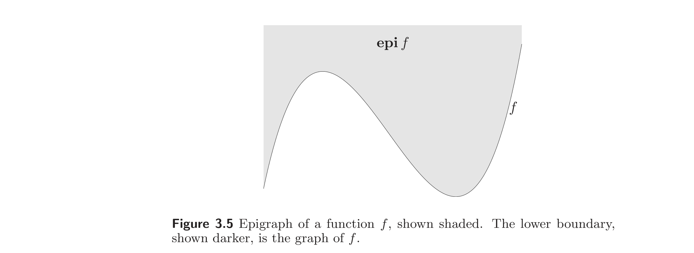
The link between convex sets and convex functions is via the epigraph: A function is convex if and only if its epigraph is a convex set. A function is concave if and only if its hypograph, defined as
$$ \mathbf{hypo}\, f = \{(x, t) \mid t \le f(x)\}, $$
is a convex set.
凸集与凸函数之间的联系通过上图建立：一个函数是凸的当且仅当其上图是凸集。一个函数是凹的当且仅当其下图（hypograph）
$$ \mathbf{hypo}\, f = \{(x, t) \mid t \le f(x)\} $$
是凸集。
Example 3.4 Matrix fractional function. The function $f : \mathbb{R}^n \times \mathbf{S}^n \to \mathbb{R}$, defined as
$$ f(x, Y) = x^T Y^{-1} x $$
is convex on $\mathbf{dom}\, f = \mathbb{R}^n \times \mathbf{S}^n_{++}$. (This generalizes the quadratic-over-linear function $f(x, y) = x^2/y$, with $\mathbf{dom}\, f = \mathbb{R} \times \mathbb{R}_{++}$.)
例 3.4 矩阵分式函数。 函数 $f : \mathbb{R}^n \times \mathbf{S}^n \to \mathbb{R}$，定义为
$$ f(x, Y) = x^T Y^{-1} x $$
在 $\mathbf{dom}\, f = \mathbb{R}^n \times \mathbf{S}^n_{++}$ 上凸。（这是二次线性商函数 $f(x, y) = x^2/y$（$\mathbf{dom}\, f = \mathbb{R} \times \mathbb{R}_{++}$）的推广。）
One easy way to establish convexity of $f$ is via its epigraph:
$$ \mathbf{epi}\, f = \{(x, Y, t) \mid Y \succ 0,\, x^T Y^{-1} x \le t\} = \left\{(x, Y, t) \,\middle|\, \begin{bmatrix} Y & x \\ x^T & t \end{bmatrix} \succeq 0,\, Y \succ 0 \right\}, $$
using the Schur complement condition for positive semidefiniteness of a block matrix (see §A.5.5). The last condition is a linear matrix inequality in $(x, Y, t)$, and therefore $\mathbf{epi}\, f$ is convex.
证明 $f$ 凸的一个简单方法是通过其上图：
$$ \mathbf{epi}\, f = \{(x, Y, t) \mid Y \succ 0,\, x^T Y^{-1} x \le t\} = \left\{(x, Y, t) \,\middle|\, \begin{bmatrix} Y & x \\ x^T & t \end{bmatrix} \succeq 0,\, Y \succ 0 \right\}, $$
其中用到了分块矩阵半正定的 Schur 补条件（见 §A.5.5）。最后一个条件是关于 $(x, Y, t)$ 的线性矩阵不等式，故 $\mathbf{epi}\, f$ 是凸的。
For the special case $n = 1$, the matrix fractional function reduces to the quadratic-over-linear function $x^2/y$, and the associated LMI representation is
$$ \begin{bmatrix} y & x \\ x & t \end{bmatrix} \succeq 0, \quad y > 0 $$
(the graph of which is shown in figure 3.3).
特例 $n = 1$ 时，矩阵分式函数退化为二次线性商函数 $x^2/y$，其对应的 LMI 表示为
$$ \begin{bmatrix} y & x \\ x & t \end{bmatrix} \succeq 0, \quad y > 0 $$
（其图像见图 3.3）。
Many results for convex functions can be proved (or interpreted) geometrically using epigraphs, and applying results for convex sets. As an example, consider the first-order condition for convexity:
$$ f(y) \ge f(x) + \nabla f(x)^T (y-x), $$
where $f$ is convex and $x, y \in \mathbf{dom}\, f$. We can interpret this basic inequality geometrically in terms of $\mathbf{epi}\, f$. If $(y, t) \in \mathbf{epi}\, f$, then
$$ t \ge f(y) \ge f(x) + \nabla f(x)^T (y-x). $$
许多关于凸函数的结果可用上图几何地证明（或解释），并应用凸集的结果。例如，考虑凸性的一阶条件：
$$ f(y) \ge f(x) + \nabla f(x)^T (y-x), $$
其中 $f$ 凸，$x, y \in \mathbf{dom}\, f$。我们可在 $\mathbf{epi}\, f$ 中几何地解释此基本不等式。若 $(y, t) \in \mathbf{epi}\, f$，则
$$ t \ge f(y) \ge f(x) + \nabla f(x)^T (y-x). $$
We can express this as:
$$ (y, t) \in \mathbf{epi}\, f \Longrightarrow \begin{bmatrix} \nabla f(x) \\ -1 \end{bmatrix}^T \left(\begin{bmatrix} y \\ t \end{bmatrix} - \begin{bmatrix} x \\ f(x) \end{bmatrix}\right) \le 0. $$
This means that the hyperplane defined by $(\nabla f(x), -1)$ supports $\mathbf{epi}\, f$ at the boundary point $(x, f(x))$; see figure 3.6.
可表为：
$$ (y, t) \in \mathbf{epi}\, f \Longrightarrow \begin{bmatrix} \nabla f(x) \\ -1 \end{bmatrix}^T \left(\begin{bmatrix} y \\ t \end{bmatrix} - \begin{bmatrix} x \\ f(x) \end{bmatrix}\right) \le 0. $$
这意味着由 $(\nabla f(x), -1)$ 定义的超平面在边界点 $(x, f(x))$ 处支撑 $\mathbf{epi}\, f$；见图 3.6。
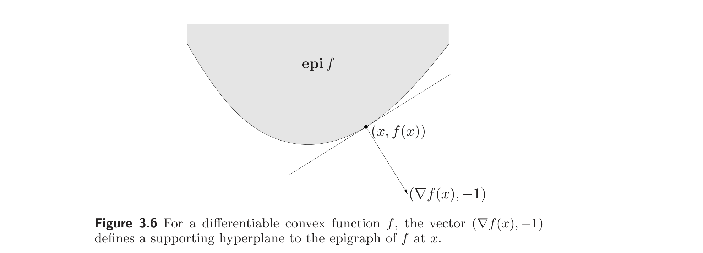
3.1.8 Jensen’s inequality and extensions
3.1.8 Jensen 不等式及其推广
The basic inequality (3.1), i.e.,
$$ f(\theta x + (1-\theta)y) \le \theta f(x) + (1-\theta)f(y), $$
is sometimes called Jensen’s inequality. It is easily extended to convex combinations of more than two points: If $f$ is convex, $x_1, \ldots, x_k \in \mathbf{dom}\, f$, and $\theta_1, \ldots, \theta_k \ge 0$ with $\theta_1 + \cdots + \theta_k = 1$, then
$$ f(\theta_1 x_1 + \cdots + \theta_k x_k) \le \theta_1 f(x_1) + \cdots + \theta_k f(x_k). $$
基本不等式 (3.1)，即
$$ f(\theta x + (1-\theta)y) \le \theta f(x) + (1-\theta)f(y), $$
有时称为 Jensen 不等式。它容易推广到多于两点的凸组合：若 $f$ 凸，$x_1, \ldots, x_k \in \mathbf{dom}\, f$，$\theta_1, \ldots, \theta_k \ge 0$ 且 $\theta_1 + \cdots + \theta_k = 1$，则
$$ f(\theta_1 x_1 + \cdots + \theta_k x_k) \le \theta_1 f(x_1) + \cdots + \theta_k f(x_k). $$
As in the case of convex sets, the inequality extends to infinite sums, integrals, and expected values. For example, if $p(x) \ge 0$ on $S \subseteq \mathbf{dom}\, f$, $\int_S p(x)\, dx = 1$, then
$$ f\left(\int_S p(x) x\, dx\right) \le \int_S f(x) p(x)\, dx, $$
provided the integrals exist. In the most general case we can take any probability measure with support in $\mathbf{dom}\, f$. If $x$ is a random variable such that $x \in \mathbf{dom}\, f$ with probability one, and $f$ is convex, then we have
$$ f(\mathbf{E}\, x) \le \mathbf{E}\, f(x), \tag{3.5}$$
provided the expectations exist. We can recover the basic inequality (3.1) from this general form, by taking the random variable $x$ to have support $\{x_1, x_2\}$, with
如同凸集的情形，该不等式可推广到无穷和、积分与期望。例如，若 $p(x) \ge 0$ 在 $S \subseteq \mathbf{dom}\, f$ 上成立，$\int_S p(x)\, dx = 1$，则
$$ f\left(\int_S p(x) x\, dx\right) \le \int_S f(x) p(x)\, dx, $$
只要积分存在。在最一般的情形，可取支撑含于 $\mathbf{dom}\, f$ 的任一概率测度。若 $x$ 是一个随机变量，以概率 1 取值于 $\mathbf{dom}\, f$，且 $f$ 凸，则
$$ f(\mathbf{E}\, x) \le \mathbf{E}\, f(x), \tag{3.5}$$
只要期望存在。取随机变量 $x$ 的支撑为 $\{x_1, x_2\}$，且
$\mathbf{prob}(x = x_1) = \theta$, $\mathbf{prob}(x = x_2) = 1 - \theta$. Thus the inequality (3.5) characterizes convexity: If $f$ is not convex, there is a random variable $x$, with $x \in \mathbf{dom}\, f$ with probability one, such that $f(\mathbf{E}\, x) > \mathbf{E}\, f(x)$.
$\mathbf{prob}(x = x_1) = \theta$，$\mathbf{prob}(x = x_2) = 1 - \theta$，即可由此一般形式还原基本不等式 (3.1)。因此不等式 (3.5) 刻画了凸性：若 $f$ 不凸，则存在随机变量 $x$（以概率 1 取值于 $\mathbf{dom}\, f$），使 $f(\mathbf{E}\, x) > \mathbf{E}\, f(x)$。
All of these inequalities are now called Jensen’s inequality, even though the inequality studied by Jensen was the very simple one
$$ f\left(\frac{x + y}{2}\right) \le \frac{f(x) + f(y)}{2}. $$
所有这些不等式如今都称为 Jensen 不等式，尽管 Jensen 当年研究的不等式只是非常简单的
$$ f\left(\frac{x + y}{2}\right) \le \frac{f(x) + f(y)}{2}. $$
Remark 3.2 We can interpret (3.5) as follows. Suppose $x \in \mathbf{dom}\, f \subseteq \mathbb{R}^n$ and $z$ is any zero mean random vector in $\mathbb{R}^n$. Then we have
$$ \mathbf{E}\, f(x + z) \ge f(x). $$
Thus, randomization or dithering (i.e., adding a zero mean random vector to the argument) cannot decrease the value of a convex function on average.
注 3.2 可如下解释 (3.5)。设 $x \in \mathbf{dom}\, f \subseteq \mathbb{R}^n$，$z$ 是 $\mathbb{R}^n$ 中任一零均值随机向量，则
$$ \mathbf{E}\, f(x + z) \ge f(x). $$
因此，随机化或抖动（即给自变量加一个零均值随机向量）平均而言不会降低凸函数的值。
3.1.9 Inequalities
3.1.9 不等式
Many famous inequalities can be derived by applying Jensen’s inequality to some appropriate convex function. (Indeed, convexity and Jensen’s inequality can be made the foundation of a theory of inequalities.) As a simple example, consider the arithmetic-geometric mean inequality:
$$ \sqrt{ab} \le (a + b)/2 \tag{3.6}$$
for $a, b \ge 0$. The function $-\log x$ is convex; Jensen’s inequality with $\theta = 1/2$ yields
$$ -\log\left(\frac{a + b}{2}\right) \le \frac{-\log a - \log b}{2}. $$
Taking the exponential of both sides yields (3.6).
许多著名的不等式可通过把 Jensen 不等式应用于某个适当的凸函数来推导。（事实上，凸性与 Jensen 不等式可作为不等式理论的基础。）举一个简单的例子，考虑算术-几何平均不等式：
$$ \sqrt{ab} \le (a + b)/2 \tag{3.6}$$
对 $a, b \ge 0$。函数 $-\log x$ 是凸的；取 $\theta = 1/2$ 的 Jensen 不等式给出
$$ -\log\left(\frac{a + b}{2}\right) \le \frac{-\log a - \log b}{2}. $$
两边取指数即得 (3.6)。
As a less trivial example we prove Hölder’s inequality: for $p > 1$, $1/p + 1/q = 1$, and $x, y \in \mathbb{R}^n$,
$$ \sum_{i=1}^n x_i y_i \le \left(\sum_{i=1}^n |x_i|^p\right)^{1/p} \left(\sum_{i=1}^n |y_i|^q\right)^{1/q}. $$
By convexity of $-\log x$, and Jensen’s inequality with general $\theta$, we obtain the more general arithmetic-geometric mean inequality
$$ a^\theta b^{1-\theta} \le \theta a + (1-\theta)b, $$
valid for $a, b \ge 0$ and $0 \le \theta \le 1$. Applying this with
$$ a = \frac{|x_i|^p}{\sum_{j=1}^n |x_j|^p}, \quad b = \frac{|y_i|^q}{\sum_{j=1}^n |y_j|^q}, \quad \theta = 1/p, $$
yields
$$ \left(\frac{|x_i|^p}{\sum_{j=1}^n |x_j|^p}\right)^{1/p} \left(\frac{|y_i|^q}{\sum_{j=1}^n |y_j|^q}\right)^{1/q} \le \frac{|x_i|^p}{p\, \sum_{j=1}^n |x_j|^p} + \frac{|y_i|^q}{q\, \sum_{j=1}^n |y_j|^q}. $$
Summing over $i$ then yields Hölder’s inequality.
作为一个不太平凡的例子，我们证明 Hölder 不等式：对 $p > 1$，$1/p + 1/q = 1$，及 $x, y \in \mathbb{R}^n$，
$$ \sum_{i=1}^n x_i y_i \le \left(\sum_{i=1}^n |x_i|^p\right)^{1/p} \left(\sum_{i=1}^n |y_i|^q\right)^{1/q}. $$
由 $-\log x$ 的凸性及一般 $\theta$ 的 Jensen 不等式，可得更一般的算术-几何平均不等式
$$ a^\theta b^{1-\theta} \le \theta a + (1-\theta)b, $$
对 $a, b \ge 0$、$0 \le \theta \le 1$ 成立。取
$$ a = \frac{|x_i|^p}{\sum_{j=1}^n |x_j|^p}, \quad b = \frac{|y_i|^q}{\sum_{j=1}^n |y_j|^q}, \quad \theta = 1/p, $$
得
$$ \left(\frac{|x_i|^p}{\sum_{j=1}^n |x_j|^p}\right)^{1/p} \left(\frac{|y_i|^q}{\sum_{j=1}^n |y_j|^q}\right)^{1/q} \le \frac{|x_i|^p}{p\, \sum_{j=1}^n |x_j|^p} + \frac{|y_i|^q}{q\, \sum_{j=1}^n |y_j|^q}. $$
对 $i$ 求和即得 Hölder 不等式。
3.2 Operations that preserve convexity
3.2 保持凸性的运算
In this section we describe some operations that preserve convexity or concavity of functions, or allow us to construct new convex and concave functions. We start with some simple operations such as addition, scaling, and pointwise supremum, and then describe some more sophisticated operations (some of which include the simple operations as special cases).
本节描述一些保持函数凸性或凹性的运算，或由其他函数构造新的凸函数与凹函数的运算。我们从加法、数乘、逐点上确界等简单运算开始，再描述一些更复杂的运算（其中某些以简单运算为特例）。
3.2.1 Nonnegative weighted sums
3.2.1 非负加权和
Evidently if $f$ is a convex function and $\alpha \ge 0$, then the function $\alpha f$ is convex. If $f_1$ and $f_2$ are both convex functions, then so is their sum $f_1 + f_2$. Combining nonnegative scaling and addition, we see that the set of convex functions is itself a convex cone: a nonnegative weighted sum of convex functions,
$$ f = w_1 f_1 + \cdots + w_m f_m, $$
is convex. Similarly, a nonnegative weighted sum of concave functions is concave. A nonnegative, nonzero weighted sum of strictly convex (concave) functions is strictly convex (concave).
显然，若 $f$ 是凸函数且 $\alpha \ge 0$，则函数 $\alpha f$ 是凸的。若 $f_1$、$f_2$ 都是凸函数，则其和 $f_1 + f_2$ 也是凸的。结合非负数乘与加法，可见凸函数集合本身是一个凸锥：凸函数的非负加权和
$$ f = w_1 f_1 + \cdots + w_m f_m $$
是凸的。类似地，凹函数的非负加权和是凹的。严格凸（凹）函数的非负且不全为零的加权和是严格凸（凹）的。
These properties extend to infinite sums and integrals. For example if $f(x, y)$ is convex in $x$ for each $y \in \mathcal{A}$, and $w(y) \ge 0$ for each $y \in \mathcal{A}$, then the function $g$ defined as
$$ g(x) = \int_\mathcal{A} w(y) f(x, y)\, dy $$
is convex in $x$ (provided the integral exists).
这些性质可推广到无穷和与积分。例如，若 $f(x, y)$ 对每个 $y \in \mathcal{A}$ 关于 $x$ 凸，且对每个 $y \in \mathcal{A}$ 有 $w(y) \ge 0$，则定义
$$ g(x) = \int_\mathcal{A} w(y) f(x, y)\, dy $$
关于 $x$ 凸（只要积分存在）。
The fact that convexity is preserved under nonnegative scaling and addition is easily verified directly, or can be seen in terms of the associated epigraphs. For example, if $w \ge 0$ and $f$ is convex, we have
$$ \mathbf{epi}(wf) = \begin{bmatrix} I & 0 \\ 0 & w \end{bmatrix} \mathbf{epi}\, f, $$
which is convex because the image of a convex set under a linear mapping is convex.
凸性在非负数乘与加法下保持这一事实可直接验证，也可从相应上图看出。例如，若 $w \ge 0$ 且 $f$ 凸，则
$$ \mathbf{epi}(wf) = \begin{bmatrix} I & 0 \\ 0 & w \end{bmatrix} \mathbf{epi}\, f, $$
它凸，因为凸集在线性映射下的像仍是凸的。
3.2.2 Composition with an affine mapping
3.2.2 与仿射映射的复合
Suppose $f : \mathbb{R}^n \to \mathbb{R}$, $A \in \mathbb{R}^{n \times m}$, and $b \in \mathbb{R}^n$. Define $g : \mathbb{R}^m \to \mathbb{R}$ by
$$ g(x) = f(Ax + b), $$
with $\mathbf{dom}\, g = \{x \mid Ax + b \in \mathbf{dom}\, f\}$. Then if $f$ is convex, so is $g$; if $f$ is concave, so is $g$.
设 $f : \mathbb{R}^n \to \mathbb{R}$，$A \in \mathbb{R}^{n \times m}$，$b \in \mathbb{R}^n$。定义 $g : \mathbb{R}^m \to \mathbb{R}$ 为
$$ g(x) = f(Ax + b), $$
其中 $\mathbf{dom}\, g = \{x \mid Ax + b \in \mathbf{dom}\, f\}$。则若 $f$ 凸，$g$ 也凸；若 $f$ 凹，$g$ 也凹。
3.2.3 Pointwise maximum and supremum
3.2.3 逐点最大值与上确界
If $f_1$ and $f_2$ are convex functions then their pointwise maximum $f$, defined by
$$ f(x) = \max\{f_1(x), f_2(x)\}, $$
with $\mathbf{dom}\, f = \mathbf{dom}\, f_1 \cap \mathbf{dom}\, f_2$, is also convex. This property is easily verified: if $0 \le \theta \le 1$ and $x, y \in \mathbf{dom}\, f$, then
$$ f(\theta x + (1-\theta)y) = \max\{f_1(\theta x + (1-\theta)y), f_2(\theta x + (1-\theta)y)\} \le \max\{\theta f_1(x) + (1-\theta)f_1(y), \theta f_2(x) + (1-\theta)f_2(y)\} \le \theta \max\{f_1(x), f_2(x)\} + (1-\theta) \max\{f_1(y), f_2(y)\} = \theta f(x) + (1-\theta)f(y), $$
which establishes convexity of $f$. It is easily shown that if $f_1, \ldots, f_m$ are convex, then their pointwise maximum
$$ f(x) = \max\{f_1(x), \ldots, f_m(x)\} $$
is also convex.
若 $f_1$、$f_2$ 是凸函数，则其逐点最大值 $f$，定义为
$$ f(x) = \max\{f_1(x), f_2(x)\}, $$
其中 $\mathbf{dom}\, f = \mathbf{dom}\, f_1 \cap \mathbf{dom}\, f_2$，也是凸的。该性质易验证：若 $0 \le \theta \le 1$ 且 $x, y \in \mathbf{dom}\, f$，则
$$ f(\theta x + (1-\theta)y) = \max\{f_1(\theta x + (1-\theta)y), f_2(\theta x + (1-\theta)y)\} \le \max\{\theta f_1(x) + (1-\theta)f_1(y), \theta f_2(x) + (1-\theta)f_2(y)\} \le \theta \max\{f_1(x), f_2(x)\} + (1-\theta) \max\{f_1(y), f_2(y)\} = \theta f(x) + (1-\theta)f(y), $$
即证 $f$ 凸。容易证明：若 $f_1, \ldots, f_m$ 凸，则其逐点最大值
$$ f(x) = \max\{f_1(x), \ldots, f_m(x)\} $$
也是凸的。
Example 3.5 Piecewise-linear functions. The function
$$ f(x) = \max\{a_1^T x + b_1, \ldots, a_L^T x + b_L\} $$
defines a piecewise-linear (or really, affine) function (with $L$ or fewer regions). It is convex since it is the pointwise maximum of affine functions.
例 3.5 分段线性函数。 函数
$$ f(x) = \max\{a_1^T x + b_1, \ldots, a_L^T x + b_L\} $$
定义了一个分段线性（确切地说是仿射的）函数（至多 $L$ 个区域）。它凸，因为是仿射函数的逐点最大值。
The converse can also be shown: any piecewise-linear convex function with $L$ or fewer regions can be expressed in this form. (See exercise 3.29.)
反之亦然：任何至多 $L$ 个区域的分段线性凸函数都可表为此形式。（见练习 3.29。）
Example 3.6 Sum of $r$ largest components. For $x \in \mathbb{R}^n$ we denote by $x_{[i]}$ the $i$th largest component of $x$, i.e.,
$$ x_{[1]} \ge x_{[2]} \ge \cdots \ge x_{[n]} $$
are the components of $x$ sorted in nonincreasing order. Then the function
$$ f(x) = \sum_{i=1}^r x_{[i]}, $$
i.e., the sum of the $r$ largest elements of $x$, is a convex function. This can be seen by writing it as
$$ f(x) = \sum_{i=1}^r x_{[i]} = \max\{x_{i_1} + \cdots + x_{i_r} \mid 1 \le i_1 < i_2 < \cdots < i_r \le n\}, $$
i.e., the maximum of all possible sums of $r$ different components of $x$. Since it is the pointwise maximum of $n!/(r!(n-r)!)$ linear functions, it is convex.
例 3.6 $r$ 个最大分量之和。 对 $x \in \mathbb{R}^n$，以 $x_{[i]}$ 记 $x$ 的第 $i$ 大分量，即
$$ x_{[1]} \ge x_{[2]} \ge \cdots \ge x_{[n]} $$
是 $x$ 的分量按非增顺序排列。则函数
$$ f(x) = \sum_{i=1}^r x_{[i]}, $$
即 $x$ 的 $r$ 个最大元素之和，是凸函数。这可由把它写成
$$ f(x) = \sum_{i=1}^r x_{[i]} = \max\{x_{i_1} + \cdots + x_{i_r} \mid 1 \le i_1 < i_2 < \cdots < i_r \le n\}, $$
即 $x$ 的 $r$ 个不同分量的所有可能和的最大值看出。由于它是 $n!/(r!(n-r)!)$ 个线性函数的逐点最大值，故凸。
As an extension it can be shown that the function $\sum_{i=1}^r w_i x_{[i]}$ is convex, provided $w_1 \ge w_2 \ge \cdots \ge w_r \ge 0$. (See exercise 3.19.)
作为推广，可证当 $w_1 \ge w_2 \ge \cdots \ge w_r \ge 0$ 时，函数 $\sum_{i=1}^r w_i x_{[i]}$ 是凸的。（见练习 3.19。）
The pointwise maximum property extends to the pointwise supremum over an infinite set of convex functions. If for each $y \in \mathcal{A}$, $f(x, y)$ is convex in $x$, then the function $g$, defined as
$$ g(x) = \sup_{y \in \mathcal{A}} f(x, y) \tag{3.7}$$
is convex in $x$. Here the domain of $g$ is
$$ \mathbf{dom}\, g = \{x \mid (x, y) \in \mathbf{dom}\, f \text{ for all } y \in \mathcal{A},\, \sup_{y \in \mathcal{A}} f(x, y) < \infty\}. $$
Similarly, the pointwise infimum of a set of concave functions is a concave function.
逐点最大值性质可推广到无穷多个凸函数的逐点上确界。若对每个 $y \in \mathcal{A}$，$f(x, y)$ 关于 $x$ 凸，则函数 $g$，定义为
$$ g(x) = \sup_{y \in \mathcal{A}} f(x, y) \tag{3.7}$$
关于 $x$ 凸。此处 $g$ 的定义域为
$$ \mathbf{dom}\, g = \{x \mid (x, y) \in \mathbf{dom}\, f \text{ 对所有 } y \in \mathcal{A},\, \sup_{y \in \mathcal{A}} f(x, y) < \infty\}. $$
类似地，一组凹函数的逐点下确界是凹函数。
In terms of epigraphs, the pointwise supremum of functions corresponds to the intersection of epigraphs: with $f$, $g$, and $\mathcal{A}$ as defined in (3.7), we have
$$ \mathbf{epi}\, g = \bigcap_{y \in \mathcal{A}} \mathbf{epi}\, f(\cdot, y). $$
Thus, the result follows from the fact that the intersection of a family of convex sets is convex.
就上图而言，函数的逐点上确界对应于上图的交：以 (3.7) 中定义的 $f$、$g$、$\mathcal{A}$，有
$$ \mathbf{epi}\, g = \bigcap_{y \in \mathcal{A}} \mathbf{epi}\, f(\cdot, y). $$
故结论由凸集族的交仍为凸集这一事实得出。
Example 3.7 Support function of a set. Let $C \subseteq \mathbb{R}^n$, with $C \ne \emptyset$. The support function $S_C$ associated with the set $C$ is defined as
$$ S_C(x) = \sup\{x^T y \mid y \in C\} $$
(and, naturally, $\mathbf{dom}\, S_C = \{x \mid \sup_{y \in C} x^T y < \infty\}$).
For each $y \in C$, $x^T y$ is a linear function of $x$, so $S_C$ is the pointwise supremum of a family of linear functions, hence convex.
例 3.7 集合的支撑函数。 设 $C \subseteq \mathbb{R}^n$，$C \ne \emptyset$。与集合 $C$ 关联的支撑函数（support function）$S_C$ 定义为
$$ S_C(x) = \sup\{x^T y \mid y \in C\} $$
（自然地，$\mathbf{dom}\, S_C = \{x \mid \sup_{y \in C} x^T y < \infty\}$）。
对每个 $y \in C$，$x^T y$ 是 $x$ 的线性函数，故 $S_C$ 是一族线性函数的逐点上确界，从而凸。
Example 3.8 Distance to farthest point of a set. Let $C \subseteq \mathbb{R}^n$. The distance (in any norm) to the farthest point of $C$,
$$ f(x) = \sup_{y \in C} \|x - y\|, $$
is convex. To see this, note that for any $y$, the function $\|x - y\|$ is convex in $x$. Since $f$ is the pointwise supremum of a family of convex functions (indexed by $y \in C$), it is a convex function of $x$.
例 3.8 到集合最远点的距离。 设 $C \subseteq \mathbb{R}^n$。到 $C$ 最远点的距离（按任一范数），
$$ f(x) = \sup_{y \in C} \|x - y\|, $$
是凸的。为看出这点，注意对任意 $y$，函数 $\|x - y\|$ 关于 $x$ 凸。由于 $f$ 是一族凸函数（以 $y \in C$ 为指标）的逐点上确界，故它是 $x$ 的凸函数。
Example 3.9 Least-squares cost as a function of weights. Let $a_1, \ldots, a_n \in \mathbb{R}^m$. In a weighted least-squares problem we minimize the objective function $\sum_{i=1}^n w_i(a_i^T x - b_i)^2$ over $x \in \mathbb{R}^m$. We refer to $w_i$ as weights, and allow negative $w_i$ (which opens the possibility that the objective function is unbounded below).
We define the (optimal) weighted least-squares cost as
$$ g(w) = \inf_x \sum_{i=1}^n w_i(a_i^T x - b_i)^2, $$
with domain
$$ \mathbf{dom}\, g = \left\{w \,\middle|\, \inf_x \sum_{i=1}^n w_i(a_i^T x - b_i)^2 > -\infty\right\}. $$
例 3.9 作为权重的函数的最小二乘代价。 设 $a_1, \ldots, a_n \in \mathbb{R}^m$。在加权最小二乘问题中，我们在 $x \in \mathbb{R}^m$ 上最小化目标函数 $\sum_{i=1}^n w_i(a_i^T x - b_i)^2$。称 $w_i$ 为权重，并允许 $w_i$ 为负（这使得目标函数可能下方无界）。
定义（最优）加权最小二乘代价为
$$ g(w) = \inf_x \sum_{i=1}^n w_i(a_i^T x - b_i)^2, $$
其定义域为
$$ \mathbf{dom}\, g = \left\{w \,\middle|\, \inf_x \sum_{i=1}^n w_i(a_i^T x - b_i)^2 > -\infty\right\}. $$
Since $g$ is the infimum of a family of linear functions of $w$ (indexed by $x \in \mathbb{R}^m$), it is a concave function of $w$.
由于 $g$ 是一族 $w$ 的线性函数（以 $x \in \mathbb{R}^m$ 为指标）的下确界，故它是 $w$ 的凹函数。
We can derive an explicit expression for $g$, at least on part of its domain. Let $W = \mathbf{diag}(w)$, the diagonal matrix with elements $w_1, \ldots, w_n$, and let $A \in \mathbb{R}^{n \times m}$ have rows $a_i^T$, so we have
$$ g(w) = \inf_x (Ax - b)^T W(Ax - b) = \inf_x (x^T A^T W A x - 2 b^T W A x + b^T W b). $$
From this we see that if $A^T W A \not\succeq 0$, the quadratic function is unbounded below in $x$, so $g(w) = -\infty$, i.e., $w \notin \mathbf{dom}\, g$.
我们可给出 $g$ 的显式表达，至少在其定义域的一部分上。令 $W = \mathbf{diag}(w)$（对角元素为 $w_1, \ldots, w_n$ 的对角矩阵），令 $A \in \mathbb{R}^{n \times m}$ 的行为 $a_i^T$，则
$$ g(w) = \inf_x (Ax - b)^T W(Ax - b) = \inf_x (x^T A^T W A x - 2 b^T W A x + b^T W b). $$
由此可见，若 $A^T W A \not\succeq 0$，则该二次函数关于 $x$ 下方无界，故 $g(w) = -\infty$，即 $w \notin \mathbf{dom}\, g$。
We can give a simple expression for $g$ when $A^T W A \succ 0$ (which defines a strict linear matrix inequality), by analytically minimizing the quadratic function:
$$ g(w) = b^T W b - b^T W A (A^T W A)^{-1} A^T W b = \sum_{i=1}^n w_i b_i^2 - \sum_{i=1}^n w_i^2 b_i^2 a_i^T \left(\sum_{j=1}^n w_j a_j a_j^T\right)^{-1} a_i. $$
Concavity of $g$ from this expression is not immediately obvious (but does follow, for example, from convexity of the matrix fractional function; see example 3.4).
当 $A^T W A \succ 0$（定义一个严格线性矩阵不等式）时，通过解析地最小化该二次函数，可得 $g$ 的简单表达式：
$$ g(w) = b^T W b - b^T W A (A^T W A)^{-1} A^T W b = \sum_{i=1}^n w_i b_i^2 - \sum_{i=1}^n w_i^2 b_i^2 a_i^T \left(\sum_{j=1}^n w_j a_j a_j^T\right)^{-1} a_i. $$
由该表达式看出 $g$ 的凹性并不直接（但确实成立，例如可由矩阵分式函数的凸性得出；见例 3.4）。
Example 3.10 Maximum eigenvalue of a symmetric matrix. The function $f(X) = \lambda_{\max}(X)$, with $\mathbf{dom}\, f = \mathbf{S}^m$, is convex. To see this, we express $f$ as
$$ f(X) = \sup\{y^T X y \mid \|y\|_2 = 1\}, $$
i.e., as the pointwise supremum of a family of linear functions of $X$ (i.e., $y^T X y$) indexed by $y \in \mathbb{R}^m$.
例 3.10 对称矩阵的最大特征值。 函数 $f(X) = \lambda_{\max}(X)$，$\mathbf{dom}\, f = \mathbf{S}^m$，是凸的。为此，把 $f$ 表为
$$ f(X) = \sup\{y^T X y \mid \|y\|_2 = 1\}, $$
即一族 $X$ 的线性函数（$y^T X y$，以 $y \in \mathbb{R}^m$ 为指标）的逐点上确界。
Example 3.11 Norm of a matrix. Consider $f(X) = \|X\|_2$ with $\mathbf{dom}\, f = \mathbb{R}^{p \times q}$, where $\|\cdot\|_2$ denotes the spectral norm or maximum singular value. Convexity of $f$ follows from
$$ f(X) = \sup\{u^T X v \mid \|u\|_2 = 1,\, \|v\|_2 = 1\}, $$
which shows it is the pointwise supremum of a family of linear functions of $X$.
例 3.11 矩阵的范数。 考虑 $f(X) = \|X\|_2$，$\mathbf{dom}\, f = \mathbb{R}^{p \times q}$，其中 $\|\cdot\|_2$ 表示谱范数（最大奇异值）。$f$ 的凸性由
$$ f(X) = \sup\{u^T X v \mid \|u\|_2 = 1,\, \|v\|_2 = 1\}, $$
看出，它表明 $f$ 是一族 $X$ 的线性函数的逐点上确界。
As a generalization suppose $\|\cdot\|_a$ and $\|\cdot\|_b$ are norms on $\mathbb{R}^p$ and $\mathbb{R}^q$, respectively. The induced norm of a matrix $X \in \mathbb{R}^{p \times q}$ is defined as
$$ \|X\|_{a,b} = \sup_{v \ne 0} \frac{\|Xv\|_a}{\|v\|_b}. $$
(This reduces to the spectral norm when both norms are Euclidean.) The induced norm can be expressed as
$$ \|X\|_{a,b} = \sup\{\|Xv\|_a \mid \|v\|_b = 1\} = \sup\{u^T X v \mid \|u\|_{a*} = 1,\, \|v\|_b = 1\}, $$
where $\|\cdot\|_{a*}$ is the dual norm of $\|\cdot\|_a$, and we use the fact that
$$ \|z\|_a = \sup\{u^T z \mid \|u\|_{a*} = 1\}. $$
Since we have expressed $\|X\|_{a,b}$ as a supremum of linear functions of $X$, it is a convex function.
作为推广，设 $\|\cdot\|_a$ 和 $\|\cdot\|_b$ 分别是 $\mathbb{R}^p$ 和 $\mathbb{R}^q$ 上的范数。矩阵 $X \in \mathbb{R}^{p \times q}$ 的诱导范数定义为
$$ \|X\|_{a,b} = \sup_{v \ne 0} \frac{\|Xv\|_a}{\|v\|_b}. $$
（当两个范数都是欧氏范数时，它退化为谱范数。）诱导范数可表为
$$ \|X\|_{a,b} = \sup\{\|Xv\|_a \mid \|v\|_b = 1\} = \sup\{u^T X v \mid \|u\|_{a*} = 1,\, \|v\|_b = 1\}, $$
其中 $\|\cdot\|_{a*}$ 是 $\|\cdot\|_a$ 的对偶范数，并用到
$$ \|z\|_a = \sup\{u^T z \mid \|u\|_{a*} = 1\}. $$
由于我们已把 $\|X\|_{a,b}$ 表为 $X$ 的线性函数的上确界，故它是凸函数。
Representation as pointwise supremum of affine functions
表示为仿射函数的逐点上确界
The examples above illustrate a good method for establishing convexity of a function: by expressing it as the pointwise supremum of a family of affine functions. Except for a technical condition, a converse holds: almost every convex function can be expressed as the pointwise supremum of a family of affine functions. For example, if $f : \mathbb{R}^n \to \mathbb{R}$ is convex, with $\mathbf{dom}\, f = \mathbb{R}^n$, then we have
$$ f(x) = \sup\{g(x) \mid g \text{ affine},\, g(z) \le f(z) \text{ for all } z\}. $$
In other words, $f$ is the pointwise supremum of the set of all affine global underestimators of it. We give the proof of this result below, and leave the case where $\mathbf{dom}\, f \ne \mathbb{R}^n$ as an exercise (exercise 3.28).
上面的例子说明了一个证明函数凸性的好方法：把它表为一族仿射函数的逐点上确界。除了一个技术条件外，反之亦然：几乎每个凸函数都可表为一族仿射函数的逐点上确界。例如，若 $f : \mathbb{R}^n \to \mathbb{R}$ 凸，$\mathbf{dom}\, f = \mathbb{R}^n$，则
$$ f(x) = \sup\{g(x) \mid g \text{ 仿射},\, g(z) \le f(z) \text{ 对所有 } z\}. $$
换言之，$f$ 是其所有仿射全局下估计的逐点上确界。下面给出该结果的证明，把 $\mathbf{dom}\, f \ne \mathbb{R}^n$ 的情形留作练习（练习 3.28）。
Suppose $f$ is convex with $\mathbf{dom}\, f = \mathbb{R}^n$. The inequality
$$ f(x) \ge \sup\{g(x) \mid g \text{ affine},\, g(z) \le f(z) \text{ for all } z\} $$
is clear, since if $g$ is any affine underestimator of $f$, we have $g(x) \le f(x)$. To establish equality, we will show that for each $x \in \mathbb{R}^n$, there is an affine function $g$, which is a global underestimator of $f$, and satisfies $g(x) = f(x)$.
设 $f$ 凸，$\mathbf{dom}\, f = \mathbb{R}^n$。不等式
$$ f(x) \ge \sup\{g(x) \mid g \text{ 仿射},\, g(z) \le f(z) \text{ 对所有 } z\} $$
是显然的，因为若 $g$ 是 $f$ 的任一仿射下估计，则 $g(x) \le f(x)$。为证相等，我们将证明对每个 $x \in \mathbb{R}^n$，存在一个仿射函数 $g$，它是 $f$ 的全局下估计，且满足 $g(x) = f(x)$。
The epigraph of $f$ is, of course, a convex set. Hence we can find a supporting hyperplane to it at $(x, f(x))$, i.e., $a \in \mathbb{R}^n$ and $b \in \mathbb{R}$ with $(a, b) \ne 0$ and
$$ \begin{bmatrix} a \\ b \end{bmatrix}^T \begin{bmatrix} x - z \\ f(x) - t \end{bmatrix} \le 0 $$
for all $(z, t) \in \mathbf{epi}\, f$. This means that
$$ a^T (x - z) + b(f(x) - f(z) - s) \le 0 \tag{3.8}$$
for all $z \in \mathbf{dom}\, f = \mathbb{R}^n$ and all $s \ge 0$ (since $(z, t) \in \mathbf{epi}\, f$ means $t = f(z) + s$ for some $s \ge 0$). For the inequality (3.8) to hold for all $s \ge 0$, we must have $b \ge 0$.
$f$ 的上图当然是凸集。故可在 $(x, f(x))$ 处找到它的一个支撑超平面，即 $a \in \mathbb{R}^n$ 和 $b \in \mathbb{R}$，满足 $(a, b) \ne 0$ 且
$$ \begin{bmatrix} a \\ b \end{bmatrix}^T \begin{bmatrix} x - z \\ f(x) - t \end{bmatrix} \le 0 $$
对所有 $(z, t) \in \mathbf{epi}\, f$ 成立。这意味着
$$ a^T (x - z) + b(f(x) - f(z) - s) \le 0 \tag{3.8}$$
对所有 $z \in \mathbf{dom}\, f = \mathbb{R}^n$ 和所有 $s \ge 0$ 成立（因为 $(z, t) \in \mathbf{epi}\, f$ 意味着 $t = f(z) + s$ 对某 $s \ge 0$）。为使不等式 (3.8) 对所有 $s \ge 0$ 成立，必须有 $b \ge 0$。
If $b = 0$, then the inequality (3.8) reduces to $a^T (x - z) \le 0$ for all $z \in \mathbb{R}^n$, which implies $a = 0$ and contradicts $(a, b) \ne 0$. We conclude that $b > 0$, i.e., that the supporting hyperplane is not vertical.
若 $b = 0$，则不等式 (3.8) 退化为对所有 $z \in \mathbb{R}^n$ 有 $a^T (x - z) \le 0$，这蕴含 $a = 0$，与 $(a, b) \ne 0$ 矛盾。故 $b > 0$，即支撑超平面不是垂直的。
Using the fact that $b > 0$ we rewrite (3.8) for $s = 0$ as
$$ g(z) = f(x) + (a/b)^T (x - z) \le f(z) $$
for all $z$. The function $g$ is an affine underestimator of $f$, and satisfies $g(x) = f(x)$.
利用 $b > 0$，把 (3.8) 在 $s = 0$ 处改写为
$$ g(z) = f(x) + (a/b)^T (x - z) \le f(z) $$
对所有 $z$ 成立。函数 $g$ 是 $f$ 的仿射下估计，且满足 $g(x) = f(x)$。
3.2.4 Composition
3.2.4 复合
In this section we examine conditions on $h : \mathbb{R}^k \to \mathbb{R}$ and $g : \mathbb{R}^n \to \mathbb{R}^k$ that guarantee convexity or concavity of their composition $f = h \circ g : \mathbb{R}^n \to \mathbb{R}$, defined by
$$ f(x) = h(g(x)), $$
$\mathbf{dom}\, f = \{x \in \mathbf{dom}\, g \mid g(x) \in \mathbf{dom}\, h\}$.
本节考察使 $h : \mathbb{R}^k \to \mathbb{R}$ 与 $g : \mathbb{R}^n \to \mathbb{R}^k$ 的复合 $f = h \circ g : \mathbb{R}^n \to \mathbb{R}$（定义为
$$ f(x) = h(g(x)), $$
$\mathbf{dom}\, f = \{x \in \mathbf{dom}\, g \mid g(x) \in \mathbf{dom}\, h\}$）保持凸性或凹性的条件。
Scalar composition
标量复合
We first consider the case $k = 1$, so $h : \mathbb{R} \to \mathbb{R}$ and $g : \mathbb{R}^n \to \mathbb{R}$. We can restrict ourselves to the case $n = 1$ (since convexity is determined by the behavior of a function on arbitrary lines that intersect its domain).
先考虑 $k = 1$ 的情形，即 $h : \mathbb{R} \to \mathbb{R}$ 且 $g : \mathbb{R}^n \to \mathbb{R}$。我们可限于 $n = 1$ 的情形（因为凸性由函数在与其定义域相交的任一直线上的行为决定）。
To discover the composition rules, we start by assuming that $h$ and $g$ are twice differentiable, with $\mathbf{dom}\, g = \mathbf{dom}\, h = \mathbb{R}$. In this case, convexity of $f$ reduces to $f'' \ge 0$ (meaning, $f''(x) \ge 0$ for all $x \in \mathbb{R}$).
为发现复合规则，先设 $h$、$g$ 二阶可微，且 $\mathbf{dom}\, g = \mathbf{dom}\, h = \mathbb{R}$。此时 $f$ 的凸性归结为 $f'' \ge 0$（意即对所有 $x \in \mathbb{R}$ 有 $f''(x) \ge 0$）。
The second derivative of the composition function $f = h \circ g$ is given by
$$ f''(x) = h''(g(x)) g'(x)^2 + h'(g(x)) g''(x). \tag{3.9}$$
Now suppose, for example, that $g$ is convex (so $g'' \ge 0$) and $h$ is convex and nondecreasing (so $h'' \ge 0$ and $h' \ge 0$). It follows from (3.9) that $f'' \ge 0$, i.e., $f$ is convex. In a similar way, the expression (3.9) gives the results:
$$ \begin{aligned} f \text{ is convex} &\text{ if } h \text{ is convex and nondecreasing, and } g \text{ is convex}, \\ f \text{ is convex} &\text{ if } h \text{ is convex and nonincreasing, and } g \text{ is concave}, \\ f \text{ is concave} &\text{ if } h \text{ is concave and nondecreasing, and } g \text{ is concave}, \\ f \text{ is concave} &\text{ if } h \text{ is concave and nonincreasing, and } g \text{ is convex}. \end{aligned} \tag{3.10}$$
复合函数 $f = h \circ g$ 的二阶导数为
$$ f''(x) = h''(g(x)) g'(x)^2 + h'(g(x)) g''(x). \tag{3.9}$$
例如设 $g$ 凸（故 $g'' \ge 0$）且 $h$ 凸且非减（故 $h'' \ge 0$ 且 $h' \ge 0$）。由 (3.9) 得 $f'' \ge 0$，即 $f$ 凸。类似地，表达式 (3.9) 给出如下结果：
$$ \begin{aligned} f \text{ 凸} &\text{ 当 } h \text{ 凸且非减，且 } g \text{ 凸}, \\ f \text{ 凸} &\text{ 当 } h \text{ 凸且非增，且 } g \text{ 凹}, \\ f \text{ 凹} &\text{ 当 } h \text{ 凹且非减，且 } g \text{ 凹}, \\ f \text{ 凹} &\text{ 当 } h \text{ 凹且非增，且 } g \text{ 凸}. \end{aligned} \tag{3.10}$$
These statements are valid when the functions $g$ and $h$ are twice differentiable and have domains that are all of $\mathbb{R}$. It turns out that very similar composition rules hold in the general case $n > 1$, without assuming differentiability of $h$ and $g$, or that $\mathbf{dom}\, g = \mathbb{R}^n$ and $\mathbf{dom}\, h = \mathbb{R}$:
$$ \begin{aligned} f \text{ is convex} &\text{ if } h \text{ is convex}, \tilde h \text{ nondecreasing, and } g \text{ is convex}, \\ f \text{ is convex} &\text{ if } h \text{ is convex}, \tilde h \text{ nonincreasing, and } g \text{ is concave}, \\ f \text{ is concave} &\text{ if } h \text{ is concave}, \tilde h \text{ nondecreasing, and } g \text{ is concave}, \\ f \text{ is concave} &\text{ if } h \text{ is concave}, \tilde h \text{ nonincreasing, and } g \text{ is convex}. \end{aligned} \tag{3.11}$$
Here $\tilde h$ denotes the extended-value extension of the function $h$, which assigns the value $\infty$ ($-\infty$) to points not in $\mathbf{dom}\, h$ for $h$ convex (concave). The only difference between these results, and the results in (3.10), is that we require that the extended-value extension function $\tilde h$ be nonincreasing or nondecreasing, on all of $\mathbb{R}$.
这些结论当 $g$、$h$ 二阶可微且定义域均为 $\mathbb{R}$ 时成立。结果表明，在一般情形 $n > 1$ 下，非常类似的复合规则也成立，无需假设 $h$、$g$ 可微，也无需 $\mathbf{dom}\, g = \mathbb{R}^n$ 和 $\mathbf{dom}\, h = \mathbb{R}$：
$$ \begin{aligned} f \text{ 凸} &\text{ 当 } h \text{ 凸}, \tilde h \text{ 非减，且 } g \text{ 凸}, \\ f \text{ 凸} &\text{ 当 } h \text{ 凸}, \tilde h \text{ 非增，且 } g \text{ 凹}, \\ f \text{ 凹} &\text{ 当 } h \text{ 凹}, \tilde h \text{ 非减，且 } g \text{ 凹}, \\ f \text{ 凹} &\text{ 当 } h \text{ 凹}, \tilde h \text{ 非增，且 } g \text{ 凸}. \end{aligned} \tag{3.11}$$
这里 $\tilde h$ 表示函数 $h$ 的扩充实值扩张：对不在 $\mathbf{dom}\, h$ 中的点，当 $h$ 凸（凹）时取值 $\infty$（$-\infty$）。这些结论与 (3.10) 的唯一区别是：我们要求扩充实值扩张函数 $\tilde h$ 在整个 $\mathbb{R}$ 上非增或非减。
To understand what this means, suppose $h$ is convex, so $\tilde h$ takes on the value $\infty$ outside $\mathbf{dom}\, h$. To say that $\tilde h$ is nondecreasing means that for any $x, y \in \mathbb{R}$, with $x < y$, we have $\tilde h(x) \le \tilde h(y)$. In particular, this means that if $y \in \mathbf{dom}\, h$, then $x \in \mathbf{dom}\, h$. In other words, the domain of $h$ extends infinitely in the negative direction; it is either $\mathbb{R}$, or an interval of the form $(-\infty, a)$ or $(-\infty, a]$. In a similar way, to say that $h$ is convex and $\tilde h$ is nonincreasing means that $h$ is nonincreasing and $\mathbf{dom}\, h$ extends infinitely in the positive direction. This is illustrated in figure 3.7.
为理解其含义，设 $h$ 凸，故 $\tilde h$ 在 $\mathbf{dom}\, h$ 外取值 $\infty$。说 $\tilde h$ 非减意味着对任意 $x, y \in \mathbb{R}$ 且 $x < y$，有 $\tilde h(x) \le \tilde h(y)$。特别地，这意味着若 $y \in \mathbf{dom}\, h$，则 $x \in \mathbf{dom}\, h$。换言之，$h$ 的定义域向负方向无限延伸：它或者是 $\mathbb{R}$，或者是形如 $(-\infty, a)$ 或 $(-\infty, a]$ 的区间。类似地，说 $h$ 凸且 $\tilde h$ 非增意味着 $h$ 非增且 $\mathbf{dom}\, h$ 向正方向无限延伸。见图 3.7。
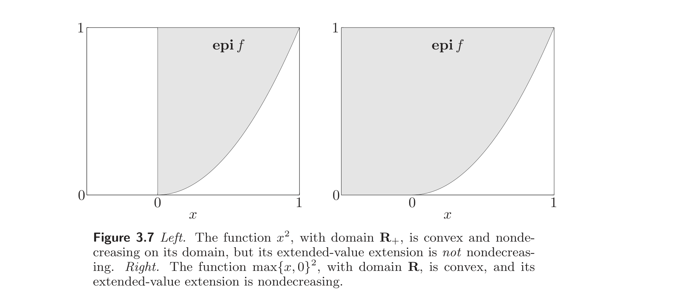
Example 3.12 Some simple examples will illustrate the conditions on $h$ that appear in the composition theorems.
例 3.12 一些简单例子将说明复合定理中对 $h$ 的条件。
- The function $h(x) = \log x$, with $\mathbf{dom}\, h = \mathbb{R}_{++}$, is concave and satisfies $\tilde h$ nondecreasing.
- The function $h(x) = x^{1/2}$, with $\mathbf{dom}\, h = \mathbb{R}_+$, is concave and satisfies the condition $\tilde h$ nondecreasing.
- The function $h(x) = x^{3/2}$, with $\mathbf{dom}\, h = \mathbb{R}_+$, is convex but does not satisfy the condition $\tilde h$ nondecreasing. For example, we have $\tilde h(-1) = \infty$, but $\tilde h(1) = 1$.
- The function $h(x) = x^{3/2}$ for $x \ge 0$, and $h(x) = 0$ for $x < 0$, with $\mathbf{dom}\, h = \mathbb{R}$, is convex and does satisfy the condition $\tilde h$ nondecreasing.
- 函数 $h(x) = \log x$，$\mathbf{dom}\, h = \mathbb{R}_{++}$，凹且满足 $\tilde h$ 非减。
- 函数 $h(x) = x^{1/2}$，$\mathbf{dom}\, h = \mathbb{R}_+$，凹且满足 $\tilde h$ 非减的条件。
- 函数 $h(x) = x^{3/2}$，$\mathbf{dom}\, h = \mathbb{R}_+$，凸但不满足 $\tilde h$ 非减的条件。例如 $\tilde h(-1) = \infty$，而 $\tilde h(1) = 1$。
- 函数 $h(x) = x^{3/2}$（当 $x \ge 0$ 时），$h(x) = 0$（当 $x < 0$ 时），$\mathbf{dom}\, h = \mathbb{R}$，凸且确实满足 $\tilde h$ 非减的条件。
The composition results (3.11) can be proved directly, without assuming differentiability, or using the formula (3.9). As an example, we will prove the following composition theorem: if $g$ is convex, $h$ is convex, and $\tilde h$ is nondecreasing, then $f = h \circ g$ is convex. Assume that $x, y \in \mathbf{dom}\, f$, and $0 \le \theta \le 1$. Since $x, y \in \mathbf{dom}\, f$, we have that $x, y \in \mathbf{dom}\, g$ and $g(x), g(y) \in \mathbf{dom}\, h$. Since $\mathbf{dom}\, g$ is convex, we conclude that $\theta x + (1-\theta)y \in \mathbf{dom}\, g$, and from convexity of $g$, we have
$$ g(\theta x + (1-\theta)y) \le \theta g(x) + (1-\theta)g(y). \tag{3.12}$$
Since $g(x), g(y) \in \mathbf{dom}\, h$, we conclude that $\theta g(x) + (1-\theta)g(y) \in \mathbf{dom}\, h$, i.e., the righthand side of (3.12) is in $\mathbf{dom}\, h$.
复合结论 (3.11) 可直接证明，无需假设可微，也无需用公式 (3.9)。作为一个例子，我们证明如下复合定理：若 $g$ 凸，$h$ 凸，且 $\tilde h$ 非减，则 $f = h \circ g$ 凸。设 $x, y \in \mathbf{dom}\, f$，$0 \le \theta \le 1$。由 $x, y \in \mathbf{dom}\, f$ 知 $x, y \in \mathbf{dom}\, g$ 且 $g(x), g(y) \in \mathbf{dom}\, h$。由 $\mathbf{dom}\, g$ 凸知 $\theta x + (1-\theta)y \in \mathbf{dom}\, g$，再由 $g$ 凸得
$$ g(\theta x + (1-\theta)y) \le \theta g(x) + (1-\theta)g(y). \tag{3.12}$$
由 $g(x), g(y) \in \mathbf{dom}\, h$ 知 $\theta g(x) + (1-\theta)g(y) \in \mathbf{dom}\, h$，即 (3.12) 的右端在 $\mathbf{dom}\, h$ 中。
Now we use the assumption that $\tilde h$ is nondecreasing, which means that its domain extends infinitely in the negative direction. Since the righthand side of (3.12) is in $\mathbf{dom}\, h$, we conclude that the lefthand side, i.e., $g(\theta x + (1-\theta)y) \in \mathbf{dom}\, h$. This means that $\theta x + (1-\theta)y \in \mathbf{dom}\, f$. At this point, we have shown that $\mathbf{dom}\, f$ is convex.
现在用到 $\tilde h$ 非减这一假设，它意味着其定义域向负方向无限延伸。由于 (3.12) 的右端在 $\mathbf{dom}\, h$ 中，故左端 $g(\theta x + (1-\theta)y) \in \mathbf{dom}\, h$。这意味着 $\theta x + (1-\theta)y \in \mathbf{dom}\, f$。至此我们已证 $\mathbf{dom}\, f$ 凸。
Now using the fact that $\tilde h$ is nondecreasing and the inequality (3.12), we get
$$ h(g(\theta x + (1-\theta)y)) \le h(\theta g(x) + (1-\theta)g(y)). \tag{3.13}$$
From convexity of $h$, we have
$$ h(\theta g(x) + (1-\theta)g(y)) \le \theta h(g(x)) + (1-\theta)h(g(y)). \tag{3.14}$$
现在利用 $\tilde h$ 非减及不等式 (3.12)，得
$$ h(g(\theta x + (1-\theta)y)) \le h(\theta g(x) + (1-\theta)g(y)). \tag{3.13}$$
由 $h$ 凸得
$$ h(\theta g(x) + (1-\theta)g(y)) \le \theta h(g(x)) + (1-\theta)h(g(y)). \tag{3.14}$$
Putting (3.13) and (3.14) together, we have
$$ h(g(\theta x + (1-\theta)y)) \le \theta h(g(x)) + (1-\theta)h(g(y)). $$
which proves the composition theorem.
结合 (3.13) 与 (3.14)，得
$$ h(g(\theta x + (1-\theta)y)) \le \theta h(g(x)) + (1-\theta)h(g(y)). $$
即证复合定理。
Example 3.13 Simple composition results.
例 3.13 简单复合结论。
- If $g$ is convex then $\exp g(x)$ is convex.
- If $g$ is concave and positive, then $\log g(x)$ is concave.
- If $g$ is concave and positive, then $1/g(x)$ is convex.
- If $g$ is convex and nonnegative and $p \ge 1$, then $g(x)^p$ is convex.
- If $g$ is convex then $-\log(-g(x))$ is convex on $\{x \mid g(x) < 0\}$.
- 若 $g$ 凸，则 $\exp g(x)$ 凸。
- 若 $g$ 凹且为正，则 $\log g(x)$ 凹。
- 若 $g$ 凹且为正，则 $1/g(x)$ 凸。
- 若 $g$ 凸且非负且 $p \ge 1$，则 $g(x)^p$ 凸。
- 若 $g$ 凸，则 $-\log(-g(x))$ 在 $\{x \mid g(x) < 0\}$ 上凸。
Remark 3.3 The requirement that monotonicity hold for the extended-value extension $\tilde h$, and not just the function $h$, cannot be removed. For example, consider the function $g(x) = x^2$, with $\mathbf{dom}\, g = \mathbb{R}$, and $h(x) = 0$, with $\mathbf{dom}\, h = [1, 2]$. Here $g$ is convex, and $h$ is convex and nondecreasing. But the function $f = h \circ g$, given by
$$ f(x) = 0, \qquad \mathbf{dom}\, f = [-\sqrt{2}, -1] \cup [1, \sqrt{2}], $$
is not convex, since its domain is not convex. Here, of course, the function $\tilde h$ is not nondecreasing.
注 3.3 单调性必须对扩充实值扩张 $\tilde h$ 成立（而不仅对函数 $h$），这一要求不可去掉。例如，考虑函数 $g(x) = x^2$，$\mathbf{dom}\, g = \mathbb{R}$，以及 $h(x) = 0$，$\mathbf{dom}\, h = [1, 2]$。此处 $g$ 凸，$h$ 凸且非减。但复合函数 $f = h \circ g$，即
$$ f(x) = 0, \qquad \mathbf{dom}\, f = [-\sqrt{2}, -1] \cup [1, \sqrt{2}], $$
不凸，因为其定义域不凸。当然此处 $\tilde h$ 并非非减。
Vector composition
向量复合
We now turn to the more complicated case when $k \ge 1$. Suppose
$$ f(x) = h(g(x)) = h(g_1(x), \ldots, g_k(x)), $$
with $h : \mathbb{R}^k \to \mathbb{R}$, $g_i : \mathbb{R}^n \to \mathbb{R}$. Again without loss of generality we can assume $n = 1$. As in the case $k = 1$, we start by assuming the functions are twice differentiable, with $\mathbf{dom}\, g = \mathbb{R}$ and $\mathbf{dom}\, h = \mathbb{R}^k$, in order to discover the composition rules. We have
$$ f''(x) = g'(x)^T \nabla^2 h(g(x)) g'(x) + \nabla h(g(x))^T g''(x), \tag{3.15}$$
which is the vector analog of (3.9). Again the issue is to determine conditions under which $f''(x) \ge 0$ for all $x$ (or $f''(x) \le 0$ for all $x$ for concavity). From (3.15) we can derive many rules, for example:
$$ \begin{aligned} f \text{ is convex} &\text{ if } h \text{ is convex, } h \text{ nondecreasing in each argument, and } g_i \text{ convex}, \\ f \text{ is convex} &\text{ if } h \text{ is convex, } h \text{ nonincreasing in each argument, and } g_i \text{ concave}, \\ f \text{ is concave} &\text{ if } h \text{ is concave, } h \text{ nondecreasing in each argument, and } g_i \text{ concave}. \end{aligned} $$
现在转向 $k \ge 1$ 这一更复杂情形。设
$$ f(x) = h(g(x)) = h(g_1(x), \ldots, g_k(x)), $$
其中 $h : \mathbb{R}^k \to \mathbb{R}$，$g_i : \mathbb{R}^n \to \mathbb{R}$。同样不妨设 $n = 1$。与 $k = 1$ 时一样，先设函数二阶可微，$\mathbf{dom}\, g = \mathbb{R}$，$\mathbf{dom}\, h = \mathbb{R}^k$，以发现复合规则。有
$$ f''(x) = g'(x)^T \nabla^2 h(g(x)) g'(x) + \nabla h(g(x))^T g''(x), \tag{3.15}$$
这是 (3.9) 的向量类比。问题同样是确定使对所有 $x$ 有 $f''(x) \ge 0$（或凹性时 $f''(x) \le 0$）的条件。由 (3.15) 可导出许多规则，例如：
$$ \begin{aligned} f \text{ 凸} &\text{ 当 } h \text{ 凸，} h \text{ 关于每个自变量非减，且 } g_i \text{ 凸}, \\ f \text{ 凸} &\text{ 当 } h \text{ 凸，} h \text{ 关于每个自变量非增，且 } g_i \text{ 凹}, \\ f \text{ 凹} &\text{ 当 } h \text{ 凹，} h \text{ 关于每个自变量非减，且 } g_i \text{ 凹}. \end{aligned} $$
As in the scalar case, similar composition results hold in general, with $n > 1$, no assumption of differentiability of $h$ or $g$, and general domains. For the general results, the monotonicity condition on $h$ must hold for the extended-value extension $\tilde h$.
与标量情形一样，在一般情形（$n > 1$，不假设 $h$ 或 $g$ 可微，一般定义域）下，类似的复合结论也成立。对一般结论，$h$ 的单调性条件必须对扩充实值扩张 $\tilde h$ 成立。
To understand the meaning of the condition that the extended-value extension $\tilde h$ be monotonic, we consider the case where $h : \mathbb{R}^k \to \mathbb{R}$ is convex, and $\tilde h$ nondecreasing, i.e., whenever $u \preceq v$, we have $\tilde h(u) \le \tilde h(v)$. This implies that if $v \in \mathbf{dom}\, h$, then so is $u$: the domain of $h$ must extend infinitely in the $-\mathbb{R}^k_+$ directions. We can express this compactly as $\mathbf{dom}\, h - \mathbb{R}^k_+ = \mathbf{dom}\, h$.
为理解扩充实值扩张 $\tilde h$ 单调这一条件的含义，考虑 $h : \mathbb{R}^k \to \mathbb{R}$ 凸且 $\tilde h$ 非减的情形，即当 $u \preceq v$ 时有 $\tilde h(u) \le \tilde h(v)$。这蕴含若 $v \in \mathbf{dom}\, h$，则 $u$ 也在 $\mathbf{dom}\, h$ 中：$h$ 的定义域必须沿 $-\mathbb{R}^k_+$ 方向无限延伸。可紧凑地表为 $\mathbf{dom}\, h - \mathbb{R}^k_+ = \mathbf{dom}\, h$。
Example 3.14 Vector composition examples.
例 3.14 向量复合例子。
- Let $h(z) = z_{[1]} + \cdots + z_{[r]}$, the sum of the $r$ largest components of $z \in \mathbb{R}^k$. Then $h$ is convex and nondecreasing in each argument. Suppose $g_1, \ldots, g_k$ are convex functions on $\mathbb{R}^n$. Then the composition function $f = h \circ g$, i.e., the pointwise sum of the $r$ largest $g_i$’s, is convex.
- The function $h(z) = \log\left(\sum_{i=1}^k e^{z_i}\right)$ is convex and nondecreasing in each argument, so $\log\left(\sum_{i=1}^k e^{g_i}\right)$ is convex whenever $g_i$ are.
- For $0 < p \le 1$, the function $h(z) = \left(\sum_{i=1}^k z_i^p\right)^{1/p}$ on $\mathbb{R}^k_+$ is concave, and its extension (which has the value $-\infty$ for $z \not\succeq 0$) is nondecreasing in each component. So if $g_i$ are concave and nonnegative, we conclude that $f(x) = \left(\sum_{i=1}^k g_i(x)^p\right)^{1/p}$ is concave.
- 令 $h(z) = z_{[1]} + \cdots + z_{[r]}$，即 $z \in \mathbb{R}^k$ 的 $r$ 个最大分量之和。则 $h$ 凸且关于每个自变量非减。设 $g_1, \ldots, g_k$ 是 $\mathbb{R}^n$ 上的凸函数。则复合函数 $f = h \circ g$（即 $r$ 个最大 $g_i$ 的逐点和）是凸的。
- 函数 $h(z) = \log\left(\sum_{i=1}^k e^{z_i}\right)$ 凸且关于每个自变量非减，故当 $g_i$ 凸时 $\log\left(\sum_{i=1}^k e^{g_i}\right)$ 凸。
- 对 $0 < p \le 1$，函数 $h(z) = \left(\sum_{i=1}^k z_i^p\right)^{1/p}$ 在 $\mathbb{R}^k_+$ 上凹，其扩张（当 $z \not\succeq 0$ 时取值 $-\infty$）关于每个分量非减。故若 $g_i$ 凹且非负，则 $f(x) = \left(\sum_{i=1}^k g_i(x)^p\right)^{1/p}$ 凹。
- Suppose $p \ge 1$, and $g_1, \ldots, g_k$ are convex and nonnegative. Then the function $\left(\sum_{i=1}^k g_i(x)^p\right)^{1/p}$ is convex. To show this, we consider the function $h : \mathbb{R}^k \to \mathbb{R}$ defined as
$$ h(z) = \left(\sum_{i=1}^k \max\{z_i, 0\}^p\right)^{1/p}, $$
with $\mathbf{dom}\, h = \mathbb{R}^k$, so $h = \tilde h$. This function is convex, and nondecreasing, so we conclude $h(g(x))$ is a convex function of $x$.
For $z \succeq 0$, we have $h(z) = \left(\sum_{i=1}^k z_i^p\right)^{1/p}$, so our conclusion is that $\left(\sum_{i=1}^k g_i(x)^p\right)^{1/p}$ is convex.
- 设 $p \ge 1$，$g_1, \ldots, g_k$ 凸且非负。则函数 $\left(\sum_{i=1}^k g_i(x)^p\right)^{1/p}$ 凸。为此，考虑 $h : \mathbb{R}^k \to \mathbb{R}$，定义为
$$ h(z) = \left(\sum_{i=1}^k \max\{z_i, 0\}^p\right)^{1/p}, $$
其中 $\mathbf{dom}\, h = \mathbb{R}^k$，故 $h = \tilde h$。该函数凸且非减，故 $h(g(x))$ 是 $x$ 的凸函数。
当 $z \succeq 0$ 时，$h(z) = \left(\sum_{i=1}^k z_i^p\right)^{1/p}$，故我们得到 $\left(\sum_{i=1}^k g_i(x)^p\right)^{1/p}$ 凸的结论。
- The geometric mean $h(z) = \left(\prod_{i=1}^k z_i\right)^{1/k}$ on $\mathbb{R}^k_+$ is concave and its extension is nondecreasing in each argument. It follows that if $g_1, \ldots, g_k$ are nonnegative concave functions, then so is their geometric mean, $\left(\prod_{i=1}^k g_i\right)^{1/k}$.
- $\mathbb{R}^k_+$ 上的几何平均 $h(z) = \left(\prod_{i=1}^k z_i\right)^{1/k}$ 凹，且其扩张关于每个自变量非减。由此可知，若 $g_1, \ldots, g_k$ 是非负凹函数，则其几何平均 $\left(\prod_{i=1}^k g_i\right)^{1/k}$ 也是凹的。
3.2.5 Minimization
3.2.5 取最小值
We have seen that the maximum or supremum of an arbitrary family of convex functions is convex. It turns out that some special forms of minimization also yield convex functions. If $f$ is convex in $(x, y)$, and $C$ is a convex nonempty set, then the function
$$ g(x) = \inf_{y \in C} f(x, y) \tag{3.16}$$
我们已经看到，任意一族凸函数的最大值或上确界是凸的。结果表明，某些特殊形式的最小化也产生凸函数。若 $f$ 关于 $(x, y)$ 凸，且 $C$ 是非空凸集，则函数
$$ g(x) = \inf_{y \in C} f(x, y) \tag{3.16}$$
is convex in $x$, provided $g(x) > -\infty$ for all $x$. The domain of $g$ is the projection of $\mathbf{dom}\, f$ on its $x$-coordinates, i.e.,
$$ \mathbf{dom}\, g = \{x \mid (x, y) \in \mathbf{dom}\, f \text{ for some } y \in C\}. $$
We prove this by verifying Jensen’s inequality for $x_1, x_2 \in \mathbf{dom}\, g$. Let $\epsilon > 0$. Then there are $y_1, y_2 \in C$ such that $f(x_i, y_i) \le g(x_i) + \epsilon$ for $i = 1, 2$. Now let $\theta \in [0, 1]$. We have
$$ g(\theta x_1 + (1-\theta)x_2) = \inf_{y \in C} f(\theta x_1 + (1-\theta)x_2, y) \le f(\theta x_1 + (1-\theta)x_2, \theta y_1 + (1-\theta)y_2) \le \theta f(x_1, y_1) + (1-\theta) f(x_2, y_2) \le \theta g(x_1) + (1-\theta) g(x_2) + \epsilon. $$
Since this holds for any $\epsilon > 0$, we have
$$ g(\theta x_1 + (1-\theta)x_2) \le \theta g(x_1) + (1-\theta)g(x_2). $$
关于 $x$ 凸，只要对所有 $x$ 有 $g(x) > -\infty$。$g$ 的定义域是 $\mathbf{dom}\, f$ 在其 $x$ 坐标上的投影，即
$$ \mathbf{dom}\, g = \{x \mid (x, y) \in \mathbf{dom}\, f \text{ 对某 } y \in C\}. $$
我们通过验证 Jensen 不等式来证明，取 $x_1, x_2 \in \mathbf{dom}\, g$。设 $\epsilon > 0$。则存在 $y_1, y_2 \in C$ 使 $f(x_i, y_i) \le g(x_i) + \epsilon$（$i = 1, 2$）。令 $\theta \in [0, 1]$。有
$$ g(\theta x_1 + (1-\theta)x_2) = \inf_{y \in C} f(\theta x_1 + (1-\theta)x_2, y) \le f(\theta x_1 + (1-\theta)x_2, \theta y_1 + (1-\theta)y_2) \le \theta f(x_1, y_1) + (1-\theta) f(x_2, y_2) \le \theta g(x_1) + (1-\theta) g(x_2) + \epsilon. $$
由于此式对任意 $\epsilon > 0$ 成立，故
$$ g(\theta x_1 + (1-\theta)x_2) \le \theta g(x_1) + (1-\theta)g(x_2). $$
The result can also be seen in terms of epigraphs. With $f$, $g$, and $C$ defined as in (3.16), and assuming the infimum over $y \in C$ is attained for each $x$, we have
$$ \mathbf{epi}\, g = \{(x, t) \mid (x, y, t) \in \mathbf{epi}\, f \text{ for some } y \in C\}. $$
Thus $\mathbf{epi}\, g$ is convex, since it is the projection of a convex set on some of its components.
该结论也可从上图看出。以 (3.16) 中定义的 $f$、$g$、$C$，并假设对每个 $x$ 在 $y \in C$ 上的下确界可达，则
$$ \mathbf{epi}\, g = \{(x, t) \mid (x, y, t) \in \mathbf{epi}\, f \text{ 对某 } y \in C\}. $$
故 $\mathbf{epi}\, g$ 凸，因为它是凸集在其某些分量上的投影。
Example 3.15 Schur complement. Suppose the quadratic function
$$ f(x, y) = x^T A x + 2 x^T B y + y^T C y, $$
(where $A$ and $C$ are symmetric) is convex in $(x, y)$, which means
$$ \begin{bmatrix} A & B \\ B^T & C \end{bmatrix} \succeq 0. $$
We can express $g(x) = \inf_y f(x, y)$ as
$$ g(x) = x^T (A - B C^\dagger B^T) x, $$
where $C^\dagger$ is the pseudo-inverse of $C$ (see §A.5.4). By the minimization rule, $g$ is convex, so we conclude that $A - B C^\dagger B^T \succeq 0$.
例 3.15 Schur 补。 设二次函数
$$ f(x, y) = x^T A x + 2 x^T B y + y^T C y, $$
（其中 $A$、$C$ 对称）关于 $(x, y)$ 凸，即
$$ \begin{bmatrix} A & B \\ B^T & C \end{bmatrix} \succeq 0. $$
可把 $g(x) = \inf_y f(x, y)$ 表为
$$ g(x) = x^T (A - B C^\dagger B^T) x, $$
其中 $C^\dagger$ 是 $C$ 的伪逆（见 §A.5.4）。由最小化规则，$g$ 凸，故 $A - B C^\dagger B^T \succeq 0$。
If $C$ is invertible, i.e., $C \succ 0$, then the matrix $A - B C^{-1} B^T$ is called the Schur complement of $C$ in the matrix
$$ \begin{bmatrix} A & B \\ B^T & C \end{bmatrix} $$
(see §A.5.5).
若 $C$ 可逆，即 $C \succ 0$，则矩阵 $A - B C^{-1} B^T$ 称为矩阵
$$ \begin{bmatrix} A & B \\ B^T & C \end{bmatrix} $$
中 $C$ 的Schur 补（Schur complement）（见 §A.5.5）。
Example 3.16 Distance to a set. The distance of a point $x$ to a set $S \subseteq \mathbb{R}^n$, in the norm $\|\cdot\|$, is defined as
$$ \mathbf{dist}(x, S) = \inf_{y \in S} \|x - y\|. $$
The function $\|x - y\|$ is convex in $(x, y)$, so if the set $S$ is convex, the distance function $\mathbf{dist}(x, S)$ is a convex function of $x$.
例 3.16 到集合的距离。 点 $x$ 到集合 $S \subseteq \mathbb{R}^n$ 的距离（按范数 $\|\cdot\|$）定义为
$$ \mathbf{dist}(x, S) = \inf_{y \in S} \|x - y\|. $$
函数 $\|x - y\|$ 关于 $(x, y)$ 凸，故若集合 $S$ 凸，则距离函数 $\mathbf{dist}(x, S)$ 是 $x$ 的凸函数。
Example 3.17 Suppose $h$ is convex. Then the function $g$ defined as
$$ g(x) = \inf\{h(y) \mid Ay = x\} $$
is convex. To see this, we define $f$ by
$$ f(x, y) = \begin{cases} h(y) & \text{if } Ay = x \\ \infty & \text{otherwise}, \end{cases} $$
which is convex in $(x, y)$. Then $g$ is the minimum of $f$ over $y$, and hence is convex. (It is not hard to show directly that $g$ is convex.)
例 3.17 设 $h$ 凸。则定义为
$$ g(x) = \inf\{h(y) \mid Ay = x\} $$
的函数 $g$ 是凸的。为此，定义 $f$ 为
$$ f(x, y) = \begin{cases} h(y) & \text{若 } Ay = x \\ \infty & \text{否则}, \end{cases} $$
它关于 $(x, y)$ 凸。则 $g$ 是 $f$ 关于 $y$ 的最小值，从而凸。（直接证明 $g$ 凸也不难。）
3.2.6 Perspective of a function
3.2.6 函数的透视
If $f : \mathbb{R}^n \to \mathbb{R}$, then the perspective of $f$ is the function $g : \mathbb{R}^{n+1} \to \mathbb{R}$ defined by
$$ g(x, t) = t f(x/t), $$
with domain
$$ \mathbf{dom}\, g = \{(x, t) \mid x/t \in \mathbf{dom}\, f,\, t > 0\}. $$
The perspective operation preserves convexity: If $f$ is a convex function, then so is its perspective function $g$. Similarly, if $f$ is concave, then so is $g$.
若 $f : \mathbb{R}^n \to \mathbb{R}$，则 $f$ 的透视（perspective）是函数 $g : \mathbb{R}^{n+1} \to \mathbb{R}$，定义为
$$ g(x, t) = t f(x/t), $$
定义域为
$$ \mathbf{dom}\, g = \{(x, t) \mid x/t \in \mathbf{dom}\, f,\, t > 0\}. $$
透视运算保持凸性：若 $f$ 是凸函数，则其透视函数 $g$ 也是凸的。类似地，若 $f$ 凹，则 $g$ 也凹。
This can be proved several ways, for example, direct verification of the defining inequality (see exercise 3.33). We give a short proof here using epigraphs and the perspective mapping on $\mathbb{R}^{n+1}$ described in §2.3.3 (which will also explain the name ‘perspective’). For $t > 0$ we have
$$ (x, t, s) \in \mathbf{epi}\, g \iff t f(x/t) \le s \iff f(x/t) \le s/t \iff (x/t, s/t) \in \mathbf{epi}\, f. $$
Therefore $\mathbf{epi}\, g$ is the inverse image of $\mathbf{epi}\, f$ under the perspective mapping that takes $(u, v, w)$ to $(u, w)/v$. It follows (see §2.3.3) that $\mathbf{epi}\, g$ is convex, so the function $g$ is convex.
这可用多种方法证明，例如直接验证定义不等式（见练习 3.33）。这里用上图和 §2.3.3 中描述的 $\mathbb{R}^{n+1}$ 上的透视映射给一个简短证明（这也解释了“透视”之名）。对 $t > 0$ 有
$$ (x, t, s) \in \mathbf{epi}\, g \iff t f(x/t) \le s \iff f(x/t) \le s/t \iff (x/t, s/t) \in \mathbf{epi}\, f. $$
故 $\mathbf{epi}\, g$ 是 $\mathbf{epi}\, f$ 在把 $(u, v, w)$ 映为 $(u, w)/v$ 的透视映射下的原像。由 §2.3.3 知 $\mathbf{epi}\, g$ 凸，从而函数 $g$ 凸。
Example 3.18 Euclidean norm squared. The perspective of the convex function $f(x) = x^T x$ on $\mathbb{R}^n$ is
$$ g(x, t) = t(x/t)^T (x/t) = \frac{x^T x}{t}, $$
which is convex in $(x, t)$ for $t > 0$.
例 3.18 欧氏范数平方。 $\mathbb{R}^n$ 上凸函数 $f(x) = x^T x$ 的透视为
$$ g(x, t) = t(x/t)^T (x/t) = \frac{x^T x}{t}, $$
它在 $(x, t)$ 上（对 $t > 0$）凸。
We can deduce convexity of $g$ using several other methods. First, we can express $g$ as the sum of the quadratic-over-linear functions $x_i^2/t$, which were shown to be convex in §3.1.5. We can also express $g$ as a special case of the matrix fractional function $x^T (tI)^{-1} x$ (see example 3.4).
$g$ 的凸性还可用其他几种方法得出。首先，可把 $g$ 表为二次线性商函数 $x_i^2/t$（在 §3.1.5 中已证凸）之和。也可把 $g$ 表为矩阵分式函数 $x^T (tI)^{-1} x$ 的特例（见例 3.4）。
Example 3.19 Negative logarithm. Consider the convex function $f(x) = -\log x$ on $\mathbb{R}_{++}$. Its perspective is
$$ g(x, t) = -t \log(x/t) = t \log(t/x) = t \log t - t \log x, $$
and is convex on $\mathbb{R}^2_{++}$. The function $g$ is called the relative entropy of $t$ and $x$. For $x = 1$, $g$ reduces to the negative entropy function.
例 3.19 负对数。 考虑 $\mathbb{R}_{++}$ 上的凸函数 $f(x) = -\log x$。其透视为
$$ g(x, t) = -t \log(x/t) = t \log(t/x) = t \log t - t \log x, $$
在 $\mathbb{R}^2_{++}$ 上凸。函数 $g$ 称为 $t$ 与 $x$ 的相对熵（relative entropy）。当 $x = 1$ 时，$g$ 退化为负熵函数。
From convexity of $g$ we can establish convexity or concavity of several interesting related functions. First, the relative entropy of two vectors $u, v \in \mathbb{R}^n_{++}$, defined as
$$ \sum_{i=1}^n u_i \log(u_i/v_i), $$
is convex in $(u, v)$, since it is a sum of relative entropies of $u_i, v_i$.
由 $g$ 的凸性可确定若干相关函数的凸性或凹性。首先，两个向量 $u, v \in \mathbb{R}^n_{++}$ 的相对熵，定义为
$$ \sum_{i=1}^n u_i \log(u_i/v_i), $$
关于 $(u, v)$ 凸，因为它是 $u_i$、$v_i$ 的相对熵之和。
A closely related function is the Kullback-Leibler divergence between $u, v \in \mathbb{R}^n_{++}$, given by
$$ D_{\mathrm{kl}}(u, v) = \sum_{i=1}^n \left(u_i \log(u_i/v_i) - u_i + v_i\right), \tag{3.17}$$
which is convex, since it is the relative entropy plus a linear function of $(u, v)$. The Kullback-Leibler divergence satisfies $D_{\mathrm{kl}}(u, v) \ge 0$, and $D_{\mathrm{kl}}(u, v) = 0$ if and only if $u = v$, and so can be used as a measure of deviation between two positive vectors; see exercise 3.13. (Note that the relative entropy and the Kullback-Leibler divergence are the same when $u$ and $v$ are probability vectors, i.e., satisfy $\mathbf{1}^T u = \mathbf{1}^T v = 1$.)
一个密切相关的函数是 $u, v \in \mathbb{R}^n_{++}$ 之间的 Kullback-Leibler 散度，即
$$ D_{\mathrm{kl}}(u, v) = \sum_{i=1}^n \left(u_i \log(u_i/v_i) - u_i + v_i\right), \tag{3.17}$$
它是凸的，因为它是相对熵加上 $(u, v)$ 的一个线性函数。Kullback-Leibler 散度满足 $D_{\mathrm{kl}}(u, v) \ge 0$，且 $D_{\mathrm{kl}}(u, v) = 0$ 当且仅当 $u = v$，故可用作两个正向量之间偏差的度量；见练习 3.13。（注意当 $u$、$v$ 是概率向量，即满足 $\mathbf{1}^T u = \mathbf{1}^T v = 1$ 时，相对熵与 Kullback-Leibler 散度相同。）
If we take $v_i = \mathbf{1}^T u$ in the relative entropy function, we obtain the concave (and homogeneous) function of $u \in \mathbb{R}^n_{++}$ given by
$$ \sum_{i=1}^n u_i \log(\mathbf{1}^T u/u_i) = (\mathbf{1}^T u) \sum_{i=1}^n z_i \log(1/z_i), $$
where $z = u/(\mathbf{1}^T u)$, which is called the normalized entropy function. The vector $z = u/\mathbf{1}^T u$ is a normalized vector or probability distribution, since its components sum to one; the normalized entropy of $u$ is $\mathbf{1}^T u$ times the entropy of this normalized distribution.
若在相对熵函数中取 $v_i = \mathbf{1}^T u$，则得到 $u \in \mathbb{R}^n_{++}$ 的如下凹（且齐次）函数：
$$ \sum_{i=1}^n u_i \log(\mathbf{1}^T u/u_i) = (\mathbf{1}^T u) \sum_{i=1}^n z_i \log(1/z_i), $$
其中 $z = u/(\mathbf{1}^T u)$，称为归一化熵函数（normalized entropy function）。向量 $z = u/\mathbf{1}^T u$ 是归一化向量或概率分布（其分量之和为 1）；$u$ 的归一化熵等于 $\mathbf{1}^T u$ 乘以该归一化分布的熵。
Example 3.20 Suppose $f : \mathbb{R}^m \to \mathbb{R}$ is convex, and $A \in \mathbb{R}^{m \times n}$, $b \in \mathbb{R}^m$, $c \in \mathbb{R}^n$, and $d \in \mathbb{R}$. We define
$$ g(x) = (c^T x + d) f\left((Ax + b)/(c^T x + d)\right), $$
with
$$ \mathbf{dom}\, g = \{x \mid c^T x + d > 0,\, (Ax + b)/(c^T x + d) \in \mathbf{dom}\, f\}. $$
Then $g$ is convex.
例 3.20 设 $f : \mathbb{R}^m \to \mathbb{R}$ 凸，$A \in \mathbb{R}^{m \times n}$，$b \in \mathbb{R}^m$，$c \in \mathbb{R}^n$，$d \in \mathbb{R}$。定义
$$ g(x) = (c^T x + d) f\left((Ax + b)/(c^T x + d)\right), $$
其中
$$ \mathbf{dom}\, g = \{x \mid c^T x + d > 0,\, (Ax + b)/(c^T x + d) \in \mathbf{dom}\, f\}. $$
则 $g$ 凸。
3.3 The conjugate function
3.3 共轭函数
In this section we introduce an operation that will play an important role in later chapters.
本节引入一种运算，它将在后续章节中扮演重要角色。
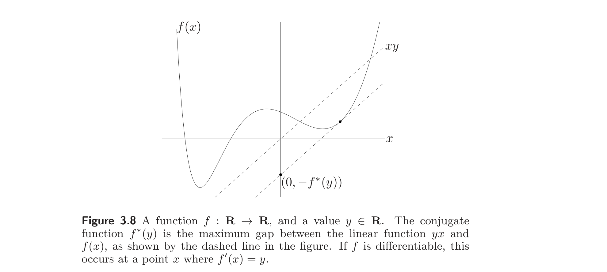
3.3.1 Definition and examples
3.3.1 定义与例子
Let $f : \mathbb{R}^n \to \mathbb{R}$. The function $f^* : \mathbb{R}^n \to \mathbb{R}$, defined as
$$ f^*(y) = \sup_{x \in \mathbf{dom}\, f} \left(y^T x - f(x)\right), \tag{3.18}$$
is called the conjugate of the function $f$. The domain of the conjugate function consists of $y \in \mathbb{R}^n$ for which the supremum is finite, i.e., for which the difference $y^T x - f(x)$ is bounded above on $\mathbf{dom}\, f$. This definition is illustrated in figure 3.8.
设 $f : \mathbb{R}^n \to \mathbb{R}$。函数 $f^* : \mathbb{R}^n \to \mathbb{R}$，定义为
$$ f^*(y) = \sup_{x \in \mathbf{dom}\, f} \left(y^T x - f(x)\right), \tag{3.18}$$
称为函数 $f$ 的共轭（conjugate）。共轭函数的定义域由使上确界有限的 $y \in \mathbb{R}^n$ 构成，即差 $y^T x - f(x)$ 在 $\mathbf{dom}\, f$ 上有上界的那些 $y$。定义见图 3.8。
We see immediately that $f^*$ is a convex function, since it is the pointwise supremum of a family of convex (indeed, affine) functions of $y$. This is true whether or not $f$ is convex. (Note that when $f$ is convex, the subscript $x \in \mathbf{dom}\, f$ is not necessary since, by convention, $y^T x - f(x) = -\infty$ for $x \notin \mathbf{dom}\, f$.)
我们立即可见 $f^*$ 是凸函数，因为它是 $y$ 的一族凸（确切地说是仿射）函数的逐点上确界。无论 $f$ 是否凸这都是成立的。（注意当 $f$ 凸时，下标 $x \in \mathbf{dom}\, f$ 并不必要，因为按约定，当 $x \notin \mathbf{dom}\, f$ 时 $y^T x - f(x) = -\infty$。）
We start with some simple examples, and then describe some rules for conjugating functions. This allows us to derive an analytical expression for the conjugate of many common convex functions.
我们从一些简单例子开始，然后描述若干共轭函数的规则。这使得我们能为许多常见凸函数的共轭推导出解析表达式。
Example 3.21 We derive the conjugates of some convex functions on $\mathbb{R}$.
例 3.21 我们推导 $\mathbb{R}$ 上一些凸函数的共轭。
- Affine function. $f(x) = ax + b$. As a function of $x$, $yx - ax - b$ is bounded if and only if $y = a$, in which case it is constant. Therefore the domain of the conjugate function $f^*$ is the singleton $\{a\}$, and $f^*(a) = -b$.
- Negative logarithm. $f(x) = -\log x$, with $\mathbf{dom}\, f = \mathbb{R}_{++}$. The function $xy + \log x$ is unbounded above if $y \ge 0$ and reaches its maximum at $x = -1/y$ otherwise. Therefore, $\mathbf{dom}\, f^* = \{y \mid y < 0\} = -\mathbb{R}_{++}$ and $f^*(y) = -\log(-y) - 1$ for $y < 0$.
- Exponential. $f(x) = e^x$. $xy - e^x$ is unbounded if $y < 0$. For $y > 0$, $xy - e^x$ reaches its maximum at $x = \log y$, so we have $f^*(y) = y \log y - y$. For $y = 0$,
- 仿射函数。 $f(x) = ax + b$。作为 $x$ 的函数，$yx - ax - b$ 有界当且仅当 $y = a$，此时为常数。故共轭函数 $f^*$ 的定义域为单点集 $\{a\}$，且 $f^*(a) = -b$。
- 负对数。 $f(x) = -\log x$，$\mathbf{dom}\, f = \mathbb{R}_{++}$。函数 $xy + \log x$ 当 $y \ge 0$ 时上方无界，否则在 $x = -1/y$ 处取最大值。故 $\mathbf{dom}\, f^* = \{y \mid y < 0\} = -\mathbb{R}_{++}$，且当 $y < 0$ 时 $f^*(y) = -\log(-y) - 1$。
- 指数函数。 $f(x) = e^x$。当 $y < 0$ 时 $xy - e^x$ 上方无界。当 $y > 0$ 时，$xy - e^x$ 在 $x = \log y$ 处取最大值，故 $f^*(y) = y \log y - y$。当 $y = 0$ 时，
$f^*(y) = \sup_x -e^x = 0$. In summary, $\mathbf{dom}\, f^* = \mathbb{R}_+$ and $f^*(y) = y \log y - y$ (with the interpretation $0 \log 0 = 0$).
$f^*(y) = \sup_x -e^x = 0$。综上，$\mathbf{dom}\, f^* = \mathbb{R}_+$ 且 $f^*(y) = y \log y - y$（约定 $0 \log 0 = 0$）。
- Negative entropy. $f(x) = x \log x$, with $\mathbf{dom}\, f = \mathbb{R}_+$ (and $f(0) = 0$). The function $xy - x \log x$ is bounded above on $\mathbb{R}_+$ for all $y$, hence $\mathbf{dom}\, f^* = \mathbb{R}$. It attains its maximum at $x = e^{y-1}$, and substituting we find $f^*(y) = e^{y-1}$.
- Inverse. $f(x) = 1/x$ on $\mathbb{R}_{++}$. For $y > 0$, $yx - 1/x$ is unbounded above. For $y = 0$ this function has supremum 0; for $y < 0$ the supremum is attained at $x = (-y)^{-1/2}$. Therefore we have $f^*(y) = -2(-y)^{1/2}$, with $\mathbf{dom}\, f^* = -\mathbb{R}_+$.
- 负熵。 $f(x) = x \log x$，$\mathbf{dom}\, f = \mathbb{R}_+$（且 $f(0) = 0$）。函数 $xy - x \log x$ 在 $\mathbb{R}_+$ 上对所有 $y$ 都有上界，故 $\mathbf{dom}\, f^* = \mathbb{R}$。它在 $x = e^{y-1}$ 处取最大值，代入得 $f^*(y) = e^{y-1}$。
- 倒数。 $f(x) = 1/x$（$\mathbb{R}_{++}$ 上）。当 $y > 0$ 时，$yx - 1/x$ 上方无界。当 $y = 0$ 时该函数的上确界为 0；当 $y < 0$ 时上确界在 $x = (-y)^{-1/2}$ 处取得。故 $f^*(y) = -2(-y)^{1/2}$，$\mathbf{dom}\, f^* = -\mathbb{R}_+$。
Example 3.22 Strictly convex quadratic function. Consider $f(x) = (1/2) x^T Q x$, with $Q \in \mathbf{S}^n_{++}$. The function $y^T x - (1/2) x^T Q x$ is bounded above as a function of $x$ for all $y$. It attains its maximum at $x = Q^{-1} y$, so
$$ f^*(y) = (1/2) y^T Q^{-1} y. $$
例 3.22 严格凸二次函数。 考虑 $f(x) = (1/2) x^T Q x$，$Q \in \mathbf{S}^n_{++}$。函数 $y^T x - (1/2) x^T Q x$ 作为 $x$ 的函数对所有 $y$ 都有上界。它在 $x = Q^{-1} y$ 处取最大值，故
$$ f^*(y) = (1/2) y^T Q^{-1} y. $$
Example 3.23 Log-determinant. We consider $f(X) = \log \det X^{-1}$ on $\mathbf{S}^n_{++}$. The conjugate function is defined as
$$ f^*(Y) = \sup_{X \succ 0} \left(\mathbf{tr}(YX) + \log \det X\right), $$
since $\mathbf{tr}(YX)$ is the standard inner product on $\mathbf{S}^n$. We first show that $\mathbf{tr}(YX) + \log \det X$ is unbounded above unless $Y \prec 0$. If $Y \not\prec 0$, then $Y$ has an eigenvector $v$, with $\|v\|_2 = 1$, and eigenvalue $\lambda \ge 0$. Taking $X = I + t v v^T$ we find that
$$ \mathbf{tr}(YX) + \log \det X = \mathbf{tr}\, Y + t\lambda + \log \det(I + t v v^T) = \mathbf{tr}\, Y + t\lambda + \log(1 + t), $$
which is unbounded above as $t \to \infty$.
例 3.23 对数行列式。 考虑 $\mathbf{S}^n_{++}$ 上的 $f(X) = \log \det X^{-1}$。共轭函数定义为
$$ f^*(Y) = \sup_{X \succ 0} \left(\mathbf{tr}(YX) + \log \det X\right), $$
因为 $\mathbf{tr}(YX)$ 是 $\mathbf{S}^n$ 上的标准内积。首先证明除非 $Y \prec 0$，否则 $\mathbf{tr}(YX) + \log \det X$ 上方无界。若 $Y \not\prec 0$，则 $Y$ 有特征向量 $v$（$\|v\|_2 = 1$）及特征值 $\lambda \ge 0$。取 $X = I + t v v^T$，得
$$ \mathbf{tr}(YX) + \log \det X = \mathbf{tr}\, Y + t\lambda + \log \det(I + t v v^T) = \mathbf{tr}\, Y + t\lambda + \log(1 + t), $$
当 $t \to \infty$ 时上方无界。
Now consider the case $Y \prec 0$. We can find the maximizing $X$ by setting the gradient with respect to $X$ equal to zero:
$$ \nabla_X (\mathbf{tr}(YX) + \log \det X) = Y + X^{-1} = 0 $$
(see §A.4.1), which yields $X = -Y^{-1}$ (which is, indeed, positive definite). Therefore we have
$$ f^*(Y) = \log \det(-Y)^{-1} - n, $$
with $\mathbf{dom}\, f^* = -\mathbf{S}^n_{++}$.
现考虑 $Y \prec 0$ 的情形。通过令关于 $X$ 的梯度为零可找到最大化 $X$：
$$ \nabla_X (\mathbf{tr}(YX) + \log \det X) = Y + X^{-1} = 0 $$
（见 §A.4.1），得 $X = -Y^{-1}$（确实正定）。故
$$ f^*(Y) = \log \det(-Y)^{-1} - n, $$
其中 $\mathbf{dom}\, f^* = -\mathbf{S}^n_{++}$。
Example 3.24 Indicator function. Let $I_S$ be the indicator function of a (not necessarily convex) set $S \subseteq \mathbb{R}^n$, i.e., $I_S(x) = 0$ on $\mathbf{dom}\, I_S = S$. Its conjugate is
$$ I_S^*(y) = \sup_{x \in S} y^T x, $$
which is the support function of the set $S$.
例 3.24 指示函数。 设 $I_S$ 是（不必凸的）集合 $S \subseteq \mathbb{R}^n$ 的指示函数，即 $I_S(x) = 0$（$\mathbf{dom}\, I_S = S$）。其共轭为
$$ I_S^*(y) = \sup_{x \in S} y^T x, $$
即集合 $S$ 的支撑函数。
Example 3.25 Log-sum-exp function. To derive the conjugate of the log-sum-exp function $f(x) = \log\left(\sum_{i=1}^n e^{x_i}\right)$, we first determine the values of $y$ for which the maximum over $x$ of $y^T x - f(x)$ is attained. By setting the gradient with respect to $x$ equal to zero, we obtain the condition
$$ y_i = \frac{e^{x_i}}{\sum_{j=1}^n e^{x_j}}, \qquad i = 1, \ldots, n. $$
These equations are solvable for $x$ if and only if $y \succ 0$ and $\mathbf{1}^T y = 1$. By substituting the expression for $y_i$ into $y^T x - f(x)$ we obtain $f^*(y) = \sum_{i=1}^n y_i \log y_i$. This expression for $f^*$ is still correct if some components of $y$ are zero, as long as $y \succeq 0$ and $\mathbf{1}^T y = 1$, and we interpret $0 \log 0$ as 0.
例 3.25 对数和指数函数。 为推导对数和指数函数 $f(x) = \log\left(\sum_{i=1}^n e^{x_i}\right)$ 的共轭，首先确定使 $y^T x - f(x)$ 关于 $x$ 取最大值的 $y$。令关于 $x$ 的梯度为零，得条件
$$ y_i = \frac{e^{x_i}}{\sum_{j=1}^n e^{x_j}}, \qquad i = 1, \ldots, n. $$
此方程组关于 $x$ 可解当且仅当 $y \succ 0$ 且 $\mathbf{1}^T y = 1$。把 $y_i$ 的表达式代入 $y^T x - f(x)$ 得 $f^*(y) = \sum_{i=1}^n y_i \log y_i$。即使 $y$ 的某些分量为零，只要 $y \succeq 0$ 且 $\mathbf{1}^T y = 1$，此 $f^*$ 的表达式仍正确（约定 $0 \log 0 = 0$）。
In fact the domain of $f^*$ is exactly given by $\mathbf{1}^T y = 1$, $y \succeq 0$. To show this, suppose that a component of $y$ is negative, say, $y_k < 0$. Then we can show that $y^T x - f(x)$ is unbounded above by choosing $x_k = -t$, and $x_i = 0$, $i \ne k$, and letting $t$ go to infinity.
事实上 $f^*$ 的定义域恰好由 $\mathbf{1}^T y = 1$、$y \succeq 0$ 给出。为证此，设 $y$ 的某分量为负，例如 $y_k < 0$。则取 $x_k = -t$，$x_i = 0$（$i \ne k$）并令 $t \to \infty$，可证 $y^T x - f(x)$ 上方无界。
If $y \succeq 0$ but $\mathbf{1}^T y \ne 1$, we choose $x = t \mathbf{1}$, so that
$$ y^T x - f(x) = t \mathbf{1}^T y - t - \log n. $$
If $\mathbf{1}^T y > 1$, this grows unboundedly as $t \to \infty$; if $\mathbf{1}^T y < 1$, it grows unboundedly as $t \to -\infty$.
若 $y \succeq 0$ 但 $\mathbf{1}^T y \ne 1$，取 $x = t \mathbf{1}$，则
$$ y^T x - f(x) = t \mathbf{1}^T y - t - \log n. $$
当 $\mathbf{1}^T y > 1$ 时，$t \to \infty$ 时无界增长；当 $\mathbf{1}^T y < 1$ 时，$t \to -\infty$ 时无界增长。
In summary,
$$ f^*(y) = \begin{cases} \sum_{i=1}^n y_i \log y_i & \text{if } y \succeq 0 \text{ and } \mathbf{1}^T y = 1 \\ \infty & \text{otherwise}. \end{cases} $$
In other words, the conjugate of the log-sum-exp function is the negative entropy function, restricted to the probability simplex.
综上，
$$ f^*(y) = \begin{cases} \sum_{i=1}^n y_i \log y_i & \text{若 } y \succeq 0 \text{ 且 } \mathbf{1}^T y = 1 \\ \infty & \text{否则}. \end{cases} $$
换言之，对数和指数函数的共轭是限制在概率单纯形上的负熵函数。
Example 3.26 Norm. Let $\|\cdot\|$ be a norm on $\mathbb{R}^n$, with dual norm $\|\cdot\|_*$. We will show that the conjugate of $f(x) = \|x\|$ is
$$ f^*(y) = \begin{cases} 0 & \|y\|_* \le 1 \\ \infty & \text{otherwise}, \end{cases} $$
i.e., the conjugate of a norm is the indicator function of the dual norm unit ball.
例 3.26 范数。 设 $\|\cdot\|$ 是 $\mathbb{R}^n$ 上的范数，对偶范数为 $\|\cdot\|_*$。我们将证明 $f(x) = \|x\|$ 的共轭为
$$ f^*(y) = \begin{cases} 0 & \|y\|_* \le 1 \\ \infty & \text{否则}, \end{cases} $$
即范数的共轭是对偶范数单位球的指示函数。
If $\|y\|_* > 1$, then by definition of the dual norm, there is a $z \in \mathbb{R}^n$ with $\|z\| \le 1$ and $y^T z > 1$. Taking $x = tz$ and letting $t \to \infty$, we have
$$ y^T x - \|x\| = t(y^T z - \|z\|) \to \infty, $$
which shows that $f^*(y) = \infty$. Conversely, if $\|y\|_* \le 1$, then we have $y^T x \le \|x\| \|y\|_*$ for all $x$, which implies for all $x$, $y^T x - \|x\| \le 0$. Therefore $x = 0$ is the value that maximizes $y^T x - \|x\|$, with maximum value 0.
若 $\|y\|_* > 1$，则由对偶范数的定义，存在 $z \in \mathbb{R}^n$ 使 $\|z\| \le 1$ 且 $y^T z > 1$。取 $x = tz$ 并令 $t \to \infty$，有
$$ y^T x - \|x\| = t(y^T z - \|z\|) \to \infty, $$
故 $f^*(y) = \infty$。反之，若 $\|y\|_* \le 1$，则对所有 $x$ 有 $y^T x \le \|x\| \|y\|_*$，即对所有 $x$ 有 $y^T x - \|x\| \le 0$。故 $x = 0$ 是使 $y^T x - \|x\|$ 最大的值，最大值为 0。
Example 3.27 Norm squared. Now consider the function $f(x) = (1/2)\|x\|^2$, where $\|\cdot\|$ is a norm, with dual norm $\|\cdot\|_*$. We will show that its conjugate is $f^*(y) = (1/2)\|y\|_*^2$.
From $y^T x \le \|y\|_* \|x\|$, we conclude
$$ y^T x - (1/2)\|x\|^2 \le \|y\|_* \|x\| - (1/2)\|x\|^2 $$
例 3.27 范数平方。 现考虑函数 $f(x) = (1/2)\|x\|^2$，其中 $\|\cdot\|$ 是范数，对偶范数为 $\|\cdot\|_*$。我们将证明其共轭为 $f^*(y) = (1/2)\|y\|_*^2$。
由 $y^T x \le \|y\|_* \|x\|$ 得
$$ y^T x - (1/2)\|x\|^2 \le \|y\|_* \|x\| - (1/2)\|x\|^2 $$
for all $x$. The righthand side is a quadratic function of $\|x\|$, which has maximum value $(1/2)\|y\|_*^2$. Therefore for all $x$, we have
$$ y^T x - (1/2)\|x\|^2 \le (1/2)\|y\|_*^2, $$
which shows that $f^*(y) \le (1/2)\|y\|_*^2$.
对所有 $x$ 成立。右端是 $\|x\|$ 的二次函数，最大值为 $(1/2)\|y\|_*^2$。故对所有 $x$，有
$$ y^T x - (1/2)\|x\|^2 \le (1/2)\|y\|_*^2, $$
故 $f^*(y) \le (1/2)\|y\|_*^2$。
To show the other inequality, let $x$ be any vector with $y^T x = \|y\|_* \|x\|$, scaled so that $\|x\| = \|y\|_*$. Then we have, for this $x$,
$$ y^T x - (1/2)\|x\|^2 = (1/2)\|y\|_*^2, $$
which shows that $f^*(y) \ge (1/2)\|y\|_*^2$.
为证另一方向的不等式，取满足 $y^T x = \|y\|_* \|x\|$ 的任一向量 $x$，并缩放使 $\|x\| = \|y\|_*$。则对此 $x$，有
$$ y^T x - (1/2)\|x\|^2 = (1/2)\|y\|_*^2, $$
故 $f^*(y) \ge (1/2)\|y\|_*^2$。
Example 3.28 Revenue and profit functions. We consider a business or enterprise that consumes $n$ resources and produces a product that can be sold. We let $r = (r_1, \ldots, r_n)$ denote the vector of resource quantities consumed, and $S(r)$ denote the sales revenue derived from the product produced (as a function of the resources consumed). Now let $p_i$ denote the price (per unit) of resource $i$, so the total amount paid for resources by the enterprise is $p^T r$. The profit derived by the firm is then $S(r) - p^T r$. Let us fix the prices of the resources, and ask what is the maximum profit that can be made, by wisely choosing the quantities of resources consumed. This maximum profit is given by
$$ M(p) = \sup_r \left(S(r) - p^T r\right). $$
The function $M(p)$ gives the maximum profit attainable, as a function of the resource prices. In terms of conjugate functions, we can express $M$ as
$$ M(p) = (-S)^*(-p). $$
Thus the maximum profit (as a function of resource prices) is closely related to the conjugate of gross sales (as a function of resources consumed).
例 3.28 收益函数与利润函数。 考虑一个消耗 $n$ 种资源并生产一种可售产品的企业。以 $r = (r_1, \ldots, r_n)$ 表示消耗的资源量向量，以 $S(r)$ 表示由所产产品获得的销售收入（作为消耗资源的函数）。设 $p_i$ 为资源 $i$ 的（单位）价格，则企业为资源所付总额为 $p^T r$。企业的利润为 $S(r) - p^T r$。固定资源价格，问通过明智地选择消耗的资源量可获得的最大利润是多少。此最大利润为
$$ M(p) = \sup_r \left(S(r) - p^T r\right). $$
函数 $M(p)$ 给出作为资源价格函数的可获最大利润。用共轭函数可把 $M$ 表为
$$ M(p) = (-S)^*(-p). $$
因此（作为资源价格函数的）最大利润与（作为消耗资源函数的）总销售额的共轭密切相关。
3.3.2 Basic properties
3.3.2 基本性质
Fenchel’s inequality
Fenchel 不等式
From the definition of conjugate function, we immediately obtain the inequality
$$ f(x) + f^*(y) \ge x^T y $$
for all $x, y$. This is called Fenchel’s inequality (or Young’s inequality when $f$ is differentiable).
由共轭函数的定义立得不等式
$$ f(x) + f^*(y) \ge x^T y $$
对所有 $x, y$ 成立。这称为 Fenchel 不等式（当 $f$ 可微时也称 Young 不等式）。
For example with $f(x) = (1/2) x^T Q x$, where $Q \in \mathbf{S}^n_{++}$, we obtain the inequality
$$ x^T y \le (1/2) x^T Q x + (1/2) y^T Q^{-1} y. $$
例如取 $f(x) = (1/2) x^T Q x$，$Q \in \mathbf{S}^n_{++}$，得不等式
$$ x^T y \le (1/2) x^T Q x + (1/2) y^T Q^{-1} y. $$
Conjugate of the conjugate
共轭的共轭
The examples above, and the name ‘conjugate’, suggest that the conjugate of the conjugate of a convex function is the original function. This is the case provided a technical condition holds: if $f$ is convex, and $f$ is closed (i.e., $\mathbf{epi}\, f$ is a closed set; see §A.3.3), then $f^{**} = f$. For example, if $\mathbf{dom}\, f = \mathbb{R}^n$, then we have $f^{**} = f$, i.e., the conjugate of the conjugate of $f$ is $f$ again (see exercise 3.39).
上面的例子及“共轭”之名暗示：凸函数的共轭的共轭就是原函数。在一个技术条件成立时确实如此：若 $f$ 凸且 $f$ 是闭的（即 $\mathbf{epi}\, f$ 是闭集；见 §A.3.3），则 $f^{**} = f$。例如，若 $\mathbf{dom}\, f = \mathbb{R}^n$，则 $f^{**} = f$，即 $f$ 的共轭的共轭仍是 $f$（见练习 3.39）。
Differentiable functions
可微函数
The conjugate of a differentiable function $f$ is also called the Legendre transform of $f$. (To distinguish the general definition from the differentiable case, the term Fenchel conjugate is sometimes used instead of conjugate.)
可微函数 $f$ 的共轭也称为 $f$ 的 Legendre 变换。（为区分一般定义与可微情形，有时用 Fenchel 共轭一词代替共轭。）
Suppose $f$ is convex and differentiable, with $\mathbf{dom}\, f = \mathbb{R}^n$. Any maximizer $x^*$ of $y^T x - f(x)$ satisfies $y = \nabla f(x^*)$, and conversely, if $x^*$ satisfies $y = \nabla f(x^*)$, then $x^*$ maximizes $y^T x - f(x)$. Therefore, if $y = \nabla f(x^*)$, we have
$$ f^*(y) = x^{*T} \nabla f(x^*) - f(x^*). $$
This allows us to determine $f^*(y)$ for any $y$ for which we can solve the gradient equation $y = \nabla f(z)$ for $z$.
设 $f$ 凸且可微，$\mathbf{dom}\, f = \mathbb{R}^n$。$y^T x - f(x)$ 的任一最大化点 $x^*$ 满足 $y = \nabla f(x^*)$；反之若 $x^*$ 满足 $y = \nabla f(x^*)$，则 $x^*$ 最大化 $y^T x - f(x)$。故当 $y = \nabla f(x^*)$ 时，有
$$ f^*(y) = x^{*T} \nabla f(x^*) - f(x^*). $$
这使我们能对任何可解梯度方程 $y = \nabla f(z)$ 求 $z$ 的 $y$ 确定 $f^*(y)$。
We can express this another way. Let $z \in \mathbb{R}^n$ be arbitrary and define $y = \nabla f(z)$. Then we have
$$ f^*(y) = z^T \nabla f(z) - f(z). $$
也可换一种表达。取任意 $z \in \mathbb{R}^n$，定义 $y = \nabla f(z)$，则
$$ f^*(y) = z^T \nabla f(z) - f(z). $$
Scaling and composition with affine transformation
数乘与仿射变换的复合
For $a > 0$ and $b \in \mathbb{R}$, the conjugate of $g(x) = a f(x) + b$ is $g^*(y) = a f^*(y/a) - b$.
对 $a > 0$ 和 $b \in \mathbb{R}$，$g(x) = a f(x) + b$ 的共轭为 $g^*(y) = a f^*(y/a) - b$。
Suppose $A \in \mathbb{R}^{n \times n}$ is nonsingular and $b \in \mathbb{R}^n$. Then the conjugate of $g(x) = f(Ax + b)$ is
$$ g^*(y) = f^*(A^{-T} y) - b^T A^{-T} y, $$
with $\mathbf{dom}\, g^* = A^T \mathbf{dom}\, f^*$.
设 $A \in \mathbb{R}^{n \times n}$ 非奇异，$b \in \mathbb{R}^n$。则 $g(x) = f(Ax + b)$ 的共轭为
$$ g^*(y) = f^*(A^{-T} y) - b^T A^{-T} y, $$
其中 $\mathbf{dom}\, g^* = A^T \mathbf{dom}\, f^*$。
Sums of independent functions
独立函数的和
If $f(u, v) = f_1(u) + f_2(v)$, where $f_1$ and $f_2$ are convex functions with conjugates $f_1^*$ and $f_2^*$, respectively, then
$$ f^*(w, z) = f_1^*(w) + f_2^*(z). $$
In other words, the conjugate of the sum of independent convex functions is the sum of the conjugates. (‘Independent’ means they are functions of different variables.)
若 $f(u, v) = f_1(u) + f_2(v)$，其中 $f_1$、$f_2$ 是凸函数，共轭分别为 $f_1^*$、$f_2^*$，则
$$ f^*(w, z) = f_1^*(w) + f_2^*(z). $$
换言之，独立凸函数之和的共轭是各共轭之和。（“独立”指它们是不同变量的函数。）
3.4 Quasiconvex functions
3.4 拟凸函数
3.4.1 Definition and examples
3.4.1 定义与例子
A function $f : \mathbb{R}^n \to \mathbb{R}$ is called quasiconvex (or unimodal) if its domain and all its sublevel sets
$$ S_\alpha = \{x \in \mathbf{dom}\, f \mid f(x) \le \alpha\}, $$
for $\alpha \in \mathbb{R}$, are convex. A function is quasiconcave if $-f$ is quasiconvex, i.e., every superlevel set $\{x \mid f(x) \ge \alpha\}$ is convex. A function that is both quasiconvex and quasiconcave is called quasilinear. If a function $f$ is quasilinear, then its domain, and every level set $\{x \mid f(x) = \alpha\}$ is convex.
若函数 $f : \mathbb{R}^n \to \mathbb{R}$ 的定义域及其所有下水平集
$$ S_\alpha = \{x \in \mathbf{dom}\, f \mid f(x) \le \alpha\}, $$
（$\alpha \in \mathbb{R}$）都是凸的，则称 $f$ 为拟凸的（quasiconvex，或单峰的）。若 $-f$ 拟凸则称 $f$ 为拟凹的（quasiconcave），即每个上水平集 $\{x \mid f(x) \ge \alpha\}$ 都是凸的。既拟凸又拟凹的函数称为拟线性的（quasilinear）。若 $f$ 拟线性，则其定义域及每个水平集 $\{x \mid f(x) = \alpha\}$ 都是凸的。
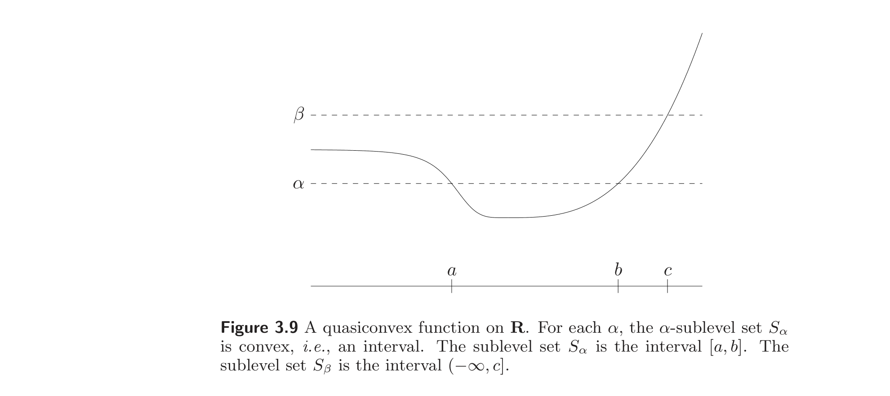
For a function on $\mathbb{R}$, quasiconvexity requires that each sublevel set be an interval (including, possibly, an infinite interval). An example of a quasiconvex function on $\mathbb{R}$ is shown in figure 3.9.
对 $\mathbb{R}$ 上的函数，拟凸性要求每个下水平集都是区间（可能为无穷区间）。图 3.9 给出了 $\mathbb{R}$ 上一个拟凸函数的例子。
Convex functions have convex sublevel sets, and so are quasiconvex. But simple examples, such as the one shown in figure 3.9, show that the converse is not true.
凸函数有凸的下水平集，故是拟凸的。但简单例子（如图 3.9 所示）表明反之不真。
Example 3.29 Some examples on $\mathbb{R}$:
例 3.29 $\mathbb{R}$ 上的一些例子：
- Logarithm. $\log x$ on $\mathbb{R}_{++}$ is quasiconvex (and quasiconcave, hence quasilinear).
- Ceiling function. $\mathbf{ceil}(x) = \inf\{z \in \mathbb{Z} \mid z \ge x\}$ is quasiconvex (and quasiconcave).
- 对数。 $\mathbb{R}_{++}$ 上的 $\log x$ 是拟凸的（且拟凹，故拟线性）。
- 取整函数。 $\mathbf{ceil}(x) = \inf\{z \in \mathbb{Z} \mid z \ge x\}$ 是拟凸的（且拟凹）。
These examples show that quasiconvex functions can be concave, or discontinuous.
这些例子表明，拟凸函数可以是凹的，也可以是不连续的。
We now give some examples on $\mathbb{R}^n$.
下面给出 $\mathbb{R}^n$ 上的一些例子。
Example 3.30 Length of a vector. We define the length of $x \in \mathbb{R}^n$ as the largest index of a nonzero component, i.e.,
$$ f(x) = \max\{i \mid x_i \ne 0\}. $$
(We define the length of the zero vector to be zero.) This function is quasiconvex on $\mathbb{R}^n$, since its sublevel sets are subspaces:
$$ f(x) \le \alpha \iff x_i = 0 \text{ for } i = \lfloor \alpha \rfloor + 1, \ldots, n. $$
例 3.30 向量的长度。 我们定义 $x \in \mathbb{R}^n$ 的长度为其最大非零分量的下标，即
$$ f(x) = \max\{i \mid x_i \ne 0\}. $$
（零向量的长度定义为 0。）此函数在 $\mathbb{R}^n$ 上拟凸，因为其下水平集是子空间：
$$ f(x) \le \alpha \iff x_i = 0 \text{ 对 } i = \lfloor \alpha \rfloor + 1, \ldots, n. $$
Example 3.31 Consider $f : \mathbb{R}^2 \to \mathbb{R}$, with $\mathbf{dom}\, f = \mathbb{R}^2_+$ and $f(x_1, x_2) = x_1 x_2$. This function is neither convex nor concave since its Hessian
$$ \nabla^2 f(x) = \begin{bmatrix} 0 & 1 \\ 1 & 0 \end{bmatrix} $$
例 3.31 考虑 $f : \mathbb{R}^2 \to \mathbb{R}$，$\mathbf{dom}\, f = \mathbb{R}^2_+$，$f(x_1, x_2) = x_1 x_2$。此函数既不凸也不凹，因为其 Hessian
$$ \nabla^2 f(x) = \begin{bmatrix} 0 & 1 \\ 1 & 0 \end{bmatrix} $$
is indefinite; it has one positive and one negative eigenvalue. The function $f$ is quasiconcave, however, since the superlevel sets
$$ \{x \in \mathbb{R}^2_+ \mid x_1 x_2 \ge \alpha\} $$
are convex sets for all $\alpha$. (Note, however, that $f$ is not quasiconcave on $\mathbb{R}^2$.)
是不定的（它有一个正特征值和一个负特征值）。然而 $f$ 是拟凹的，因为上水平集
$$ \{x \in \mathbb{R}^2_+ \mid x_1 x_2 \ge \alpha\} $$
对所有 $\alpha$ 都是凸集。（但注意 $f$ 在 $\mathbb{R}^2$ 上并非拟凹。）
Example 3.32 Linear-fractional function. The function
$$ f(x) = \frac{a^T x + b}{c^T x + d}, $$
with $\mathbf{dom}\, f = \{x \mid c^T x + d > 0\}$, is quasiconvex, and quasiconcave, i.e., quasilinear. Its $\alpha$-sublevel set is
$$ S_\alpha = \{x \mid c^T x + d > 0,\, (a^T x + b)/(c^T x + d) \le \alpha\} = \{x \mid c^T x + d > 0,\, a^T x + b \le \alpha(c^T x + d)\}, $$
which is convex, since it is the intersection of an open halfspace and a closed halfspace. (The same method can be used to show its superlevel sets are convex.)
例 3.32 线性分式函数。 函数
$$ f(x) = \frac{a^T x + b}{c^T x + d}, $$
其中 $\mathbf{dom}\, f = \{x \mid c^T x + d > 0\}$，是拟凸的，也是拟凹的，即拟线性的。其 $\alpha$-下水平集为
$$ S_\alpha = \{x \mid c^T x + d > 0,\, (a^T x + b)/(c^T x + d) \le \alpha\} = \{x \mid c^T x + d > 0,\, a^T x + b \le \alpha(c^T x + d)\}, $$
它是凸的，因为是一个开半空间与一个闭半空间的交。（同样方法可证其上水平集也是凸的。）
Example 3.33 Distance ratio function. Suppose $a, b \in \mathbb{R}^n$, and define
$$ f(x) = \frac{\|x - a\|_2}{\|x - b\|_2}, $$
i.e., the ratio of the Euclidean distance to $a$ to the distance to $b$. Then $f$ is quasiconvex on the halfspace $\{x \mid \|x - a\|_2 \le \|x - b\|_2\}$. To see this, we consider the $\alpha$-sublevel set of $f$, with $\alpha \le 1$ since $f(x) \le 1$ on the halfspace $\{x \mid \|x - a\|_2 \le \|x - b\|_2\}$. This sublevel set is the set of points satisfying
$$ \|x - a\|_2 \le \alpha \|x - b\|_2. $$
Squaring both sides, and rearranging terms, we see that this is equivalent to
$$ (1 - \alpha^2) x^T x - 2(a - \alpha^2 b)^T x + a^T a - \alpha^2 b^T b \le 0. $$
This describes a convex set (in fact a Euclidean ball) if $\alpha \le 1$.
例 3.33 距离比函数。 设 $a, b \in \mathbb{R}^n$，定义
$$ f(x) = \frac{\|x - a\|_2}{\|x - b\|_2}, $$
即到 $a$ 的欧氏距离与到 $b$ 的距离之比。则 $f$ 在半空间 $\{x \mid \|x - a\|_2 \le \|x - b\|_2\}$ 上拟凸。为此，考虑 $f$ 的 $\alpha$-下水平集，取 $\alpha \le 1$（因为在半空间 $\{x \mid \|x - a\|_2 \le \|x - b\|_2\}$ 上 $f(x) \le 1$）。此下水平集是满足
$$ \|x - a\|_2 \le \alpha \|x - b\|_2 $$
的点集。两边平方并整理，可见等价于
$$ (1 - \alpha^2) x^T x - 2(a - \alpha^2 b)^T x + a^T a - \alpha^2 b^T b \le 0. $$
当 $\alpha \le 1$ 时此式描述一个凸集（实际上是一个欧氏球）。
Example 3.34 Internal rate of return. Let $x = (x_0, x_1, \ldots, x_n)$ denote a cash flow sequence over $n$ periods, where $x_i > 0$ means a payment to us in period $i$, and $x_i < 0$ means a payment by us in period $i$. We define the present value of a cash flow, with interest rate $r \ge 0$, to be
$$ PV(x, r) = \sum_{i=0}^n (1 + r)^{-i} x_i. $$
(The factor $(1 + r)^{-i}$ is a discount factor for a payment by or to us in period $i$.)
例 3.34 内部收益率。 设 $x = (x_0, x_1, \ldots, x_n)$ 表示 $n$ 个周期内的现金流序列，其中 $x_i > 0$ 表示第 $i$ 期向我们付款，$x_i < 0$ 表示第 $i$ 期我们付款。定义利率 $r \ge 0$ 下现金流的现值为
$$ PV(x, r) = \sum_{i=0}^n (1 + r)^{-i} x_i. $$
（因子 $(1 + r)^{-i}$ 是第 $i$ 期由我们付款或向我们付款的贴现因子。）
Now we consider cash flows for which $x_0 < 0$ and $x_0 + x_1 + \cdots + x_n > 0$. This means that we start with an investment of $|x_0|$ in period 0, and that the total of the remaining cash flow, $x_1 + \cdots + x_n$, (not taking any discount factors into account) exceeds our initial investment.
现考虑满足 $x_0 < 0$ 且 $x_0 + x_1 + \cdots + x_n > 0$ 的现金流。这意味着我们在第 0 期投资 $|x_0|$，且剩余现金流 $x_1 + \cdots + x_n$（不计任何贴现因子）超过初始投资。
For such a cash flow, $PV(x, 0) > 0$ and $PV(x, r) \to x_0 < 0$ as $r \to \infty$, so it follows that for at least one $r \ge 0$, we have $PV(x, r) = 0$. We define the internal rate of return of the cash flow as the smallest interest rate $r \ge 0$ for which the present value is zero:
$$ \mathbf{IRR}(x) = \inf\{r \ge 0 \mid PV(x, r) = 0\}. $$
Internal rate of return is a quasiconcave function of $x$ (restricted to $x_0 < 0$, $x_1 + \cdots + x_n > 0$). To see this, we note that
$$ \mathbf{IRR}(x) \ge R \iff PV(x, r) > 0 \text{ for } 0 \le r < R. $$
The lefthand side defines the $R$-superlevel set of IRR. The righthand side is the intersection of the sets $\{x \mid PV(x, r) > 0\}$, indexed by $r$, over the range $0 \le r < R$. For each $r$, $PV(x, r) > 0$ defines an open halfspace, so the righthand side defines a convex set.
对此类现金流，$PV(x, 0) > 0$ 且当 $r \to \infty$ 时 $PV(x, r) \to x_0 < 0$，故至少存在一个 $r \ge 0$ 使 $PV(x, r) = 0$。定义现金流的内部收益率为使现值为零的最小利率 $r \ge 0$：
$$ \mathbf{IRR}(x) = \inf\{r \ge 0 \mid PV(x, r) = 0\}. $$
内部收益率是 $x$ 的拟凹函数（限制在 $x_0 < 0$、$x_1 + \cdots + x_n > 0$）。为此注意
$$ \mathbf{IRR}(x) \ge R \iff PV(x, r) > 0 \text{ 对 } 0 \le r < R. $$
左端定义 IRR 的 $R$-上水平集。右端是集合 $\{x \mid PV(x, r) > 0\}$（以 $r$ 为指标）在 $0 \le r < R$ 范围内的交。对每个 $r$，$PV(x, r) > 0$ 定义一个开半空间，故右端定义一个凸集。
3.4.2 Basic properties
3.4.2 基本性质
The examples above show that quasiconvexity is a considerable generalization of convexity. Still, many of the properties of convex functions hold, or have analogs, for quasiconvex functions. For example, there is a variation on Jensen’s inequality that characterizes quasiconvexity: A function $f$ is quasiconvex if and only if $\mathbf{dom}\, f$ is convex and for any $x, y \in \mathbf{dom}\, f$ and $0 \le \theta \le 1$,
$$ f(\theta x + (1-\theta)y) \le \max\{f(x), f(y)\}, \tag{3.19}$$
i.e., the value of the function on a segment does not exceed the maximum of its values at the endpoints. The inequality (3.19) is sometimes called Jensen’s inequality for quasiconvex functions, and is illustrated in figure 3.10.
上面的例子表明，拟凸性是凸性的相当大的推广。尽管如此，凸函数的许多性质对拟凸函数仍成立或有类比。例如，有刻画拟凸性的 Jensen 不等式的变体：函数 $f$ 拟凸当且仅当 $\mathbf{dom}\, f$ 凸且对任意 $x, y \in \mathbf{dom}\, f$ 和 $0 \le \theta \le 1$，有
$$ f(\theta x + (1-\theta)y) \le \max\{f(x), f(y)\}, \tag{3.19}$$
即函数在一条线段上的值不超过其两端点值的最大值。不等式 (3.19) 有时称为拟凸函数的 Jensen 不等式，见图 3.10。
Example 3.35 Cardinality of a nonnegative vector. The cardinality or size of a vector $x \in \mathbb{R}^n$ is the number of nonzero components, and denoted $\mathbf{card}(x)$. The function $\mathbf{card}$ is quasiconcave on $\mathbb{R}^n_+$ (but not $\mathbb{R}^n$). This follows immediately from the modified Jensen inequality
$$ \mathbf{card}(x + y) \ge \min\{\mathbf{card}(x), \mathbf{card}(y)\}, $$
which holds for $x, y \succeq 0$.
例 3.35 非负向量的基数。 向量 $x \in \mathbb{R}^n$ 的基数（或大小）是其非零分量的个数，记为 $\mathbf{card}(x)$。函数 $\mathbf{card}$ 在 $\mathbb{R}^n_+$ 上拟凹（但不在 $\mathbb{R}^n$ 上）。这由修改的 Jensen 不等式
$$ \mathbf{card}(x + y) \ge \min\{\mathbf{card}(x), \mathbf{card}(y)\}, $$
（对 $x, y \succeq 0$ 成立）直接得出。
Example 3.36 Rank of positive semidefinite matrix. The function $\mathbf{rank}\, X$ is quasiconcave on $\mathbf{S}^n_+$. This follows from the modified Jensen inequality (3.19),
$$ \mathbf{rank}(X + Y) \ge \min\{\mathbf{rank}\, X, \mathbf{rank}\, Y\} $$
which holds for $X, Y \in \mathbf{S}^n_+$. (This can be considered an extension of the previous example, since $\mathbf{rank}(\mathbf{diag}(x)) = \mathbf{card}(x)$ for $x \succeq 0$.)
例 3.36 半正定矩阵的秩。 函数 $\mathbf{rank}\, X$ 在 $\mathbf{S}^n_+$ 上拟凹。这由修改的 Jensen 不等式 (3.19) 得出：
$$ \mathbf{rank}(X + Y) \ge \min\{\mathbf{rank}\, X, \mathbf{rank}\, Y\} $$
对 $X, Y \in \mathbf{S}^n_+$ 成立。（这可视为前一例的推广，因为对 $x \succeq 0$ 有 $\mathbf{rank}(\mathbf{diag}(x)) = \mathbf{card}(x)$。）
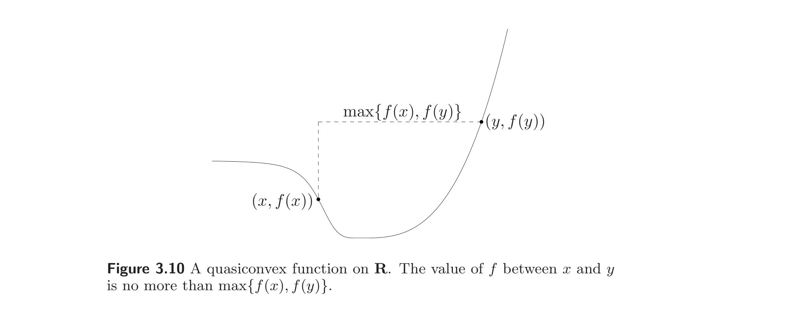
Like convexity, quasiconvexity is characterized by the behavior of a function $f$ on lines: $f$ is quasiconvex if and only if its restriction to any line intersecting its domain is quasiconvex. In particular, quasiconvexity of a function can be verified by restricting it to an arbitrary line, and then checking quasiconvexity of the resulting function on $\mathbb{R}$.
如同凸性，拟凸性由函数 $f$ 在直线上的行为刻画：$f$ 拟凸当且仅当把它限制到任一与其定义域相交的直线上时是拟凸的。特别地，可把函数限制到任意直线上，再检验所得 $\mathbb{R}$ 上函数的拟凸性来验证拟凸性。
Quasiconvex functions on $\mathbb{R}$
$\mathbb{R}$ 上的拟凸函数
We can give a simple characterization of quasiconvex functions on $\mathbb{R}$. We consider continuous functions, since stating the conditions in the general case is cumbersome. A continuous function $f : \mathbb{R} \to \mathbb{R}$ is quasiconvex if and only if at least one of the following conditions holds:
我们可以给出 $\mathbb{R}$ 上拟凸函数的一个简单刻画。考虑连续函数，因为一般情形下陈述条件较为繁琐。连续函数 $f : \mathbb{R} \to \mathbb{R}$ 拟凸当且仅当下列条件之一成立：
- $f$ is nondecreasing
- $f$ is nonincreasing
- there is a point $c \in \mathbf{dom}\, f$ such that for $t \le c$ (and $t \in \mathbf{dom}\, f$), $f$ is nonincreasing, and for $t \ge c$ (and $t \in \mathbf{dom}\, f$), $f$ is nondecreasing.
- $f$ 非减
- $f$ 非增
- 存在点 $c \in \mathbf{dom}\, f$，使得当 $t \le c$（且 $t \in \mathbf{dom}\, f$）时 $f$ 非增，当 $t \ge c$（且 $t \in \mathbf{dom}\, f$）时 $f$ 非减。
The point $c$ can be chosen as any point which is a global minimizer of $f$. Figure 3.11 illustrates this.
点 $c$ 可取为 $f$ 的任一全局极小点。图 3.11 给出了说明。
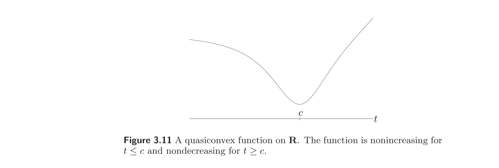
3.4.3 Differentiable quasiconvex functions
3.4.3 可微拟凸函数
First-order conditions
一阶条件
Suppose $f : \mathbb{R}^n \to \mathbb{R}$ is differentiable. Then $f$ is quasiconvex if and only if $\mathbf{dom}\, f$ is convex and for all $x, y \in \mathbf{dom}\, f$
$$ f(y) \le f(x) \Longrightarrow \nabla f(x)^T (y-x) \le 0. \tag{3.20}$$
设 $f : \mathbb{R}^n \to \mathbb{R}$ 可微。则 $f$ 拟凸当且仅当 $\mathbf{dom}\, f$ 凸且对所有 $x, y \in \mathbf{dom}\, f$ 有
$$ f(y) \le f(x) \Longrightarrow \nabla f(x)^T (y-x) \le 0. \tag{3.20}$$
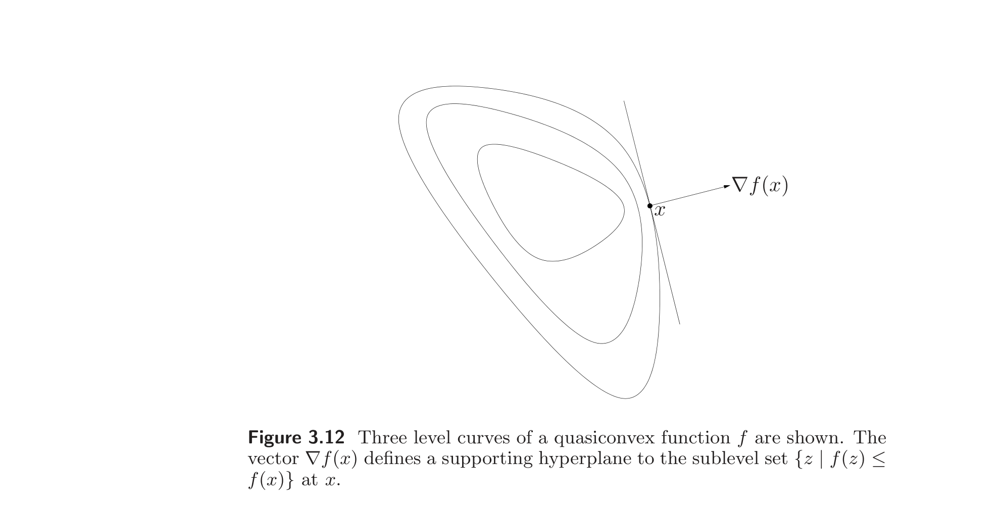
This is the analog of inequality (3.2), for quasiconvex functions. We leave the proof as an exercise (exercise 3.43).
这是拟凸函数对不等式 (3.2) 的类比。证明留作练习（练习 3.43）。
The condition (3.20) has a simple geometric interpretation when $\nabla f(x) \ne 0$. It states that $\nabla f(x)$ defines a supporting hyperplane to the sublevel set $\{y \mid f(y) \le f(x)\}$, at the point $x$, as illustrated in figure 3.12.
当 $\nabla f(x) \ne 0$ 时，条件 (3.20) 有简单的几何解释：它表明 $\nabla f(x)$ 在点 $x$ 处定义下水平集 $\{y \mid f(y) \le f(x)\}$ 的一个支撑超平面，见图 3.12。
While the first-order condition for convexity (3.2), and the first-order condition for quasiconvexity (3.20) are similar, there are some important differences. For example, if $f$ is convex and $\nabla f(x) = 0$, then $x$ is a global minimizer of $f$. But this statement is false for quasiconvex functions: it is possible that $\nabla f(x) = 0$, but $x$ is not a global minimizer of $f$.
虽然凸性的一阶条件 (3.2) 与拟凸性的一阶条件 (3.20) 相似，但有一些重要区别。例如，若 $f$ 凸且 $\nabla f(x) = 0$，则 $x$ 是 $f$ 的全局极小点。但此命题对拟凸函数不成立：可能出现 $\nabla f(x) = 0$ 但 $x$ 不是 $f$ 的全局极小点的情形。
Second-order conditions
二阶条件
Now suppose $f$ is twice differentiable. If $f$ is quasiconvex, then for all $x \in \mathbf{dom}\, f$, and all $y \in \mathbb{R}^n$, we have
$$ y^T \nabla f(x) = 0 \Longrightarrow y^T \nabla^2 f(x) y \ge 0. \tag{3.21}$$
For a quasiconvex function on $\mathbb{R}$, this reduces to the simple condition
$$ f'(x) = 0 \Longrightarrow f''(x) \ge 0, $$
i.e., at any point with zero slope, the second derivative is nonnegative.
现设 $f$ 二阶可微。若 $f$ 拟凸，则对所有 $x \in \mathbf{dom}\, f$ 和所有 $y \in \mathbb{R}^n$，有
$$ y^T \nabla f(x) = 0 \Longrightarrow y^T \nabla^2 f(x) y \ge 0. \tag{3.21}$$
对 $\mathbb{R}$ 上的拟凸函数，此条件简化为
$$ f'(x) = 0 \Longrightarrow f''(x) \ge 0, $$
即在任一斜率为零的点，二阶导数非负。
For a quasiconvex function on $\mathbb{R}^n$, the interpretation of the condition (3.21) is a bit more complicated. As in the case $n = 1$, we conclude that whenever $\nabla f(x) = 0$, we must have $\nabla^2 f(x) \succeq 0$. When $\nabla f(x) \ne 0$, the condition (3.21) means that $\nabla^2 f(x)$ is positive semidefinite on the $(n-1)$-dimensional subspace $\nabla f(x)^\perp$. This implies that $\nabla^2 f(x)$ can have at most one negative eigenvalue.
对 $\mathbb{R}^n$ 上的拟凸函数，条件 (3.21) 的解释稍复杂。与 $n = 1$ 情形一样，可得：每当 $\nabla f(x) = 0$ 时必有 $\nabla^2 f(x) \succeq 0$。当 $\nabla f(x) \ne 0$ 时，条件 (3.21) 意味着 $\nabla^2 f(x)$ 在 $(n-1)$ 维子空间 $\nabla f(x)^\perp$ 上半正定。这蕴含 $\nabla^2 f(x)$ 至多有一个负特征值。
As a (partial) converse, if $f$ satisfies
$$ y^T \nabla f(x) = 0 \Longrightarrow y^T \nabla^2 f(x) y > 0 \tag{3.22}$$
for all $x \in \mathbf{dom}\, f$ and all $y \in \mathbb{R}^n$, $y \ne 0$, then $f$ is quasiconvex. This condition is the same as requiring $\nabla^2 f(x)$ to be positive definite for any point with $\nabla f(x) = 0$, and for all other points, requiring $\nabla^2 f(x)$ to be positive definite on the $(n-1)$-dimensional subspace $\nabla f(x)^\perp$.
作为一个（部分的）逆，若 $f$ 满足
$$ y^T \nabla f(x) = 0 \Longrightarrow y^T \nabla^2 f(x) y > 0 \tag{3.22}$$
对所有 $x \in \mathbf{dom}\, f$ 和所有 $y \in \mathbb{R}^n$、$y \ne 0$ 成立，则 $f$ 拟凸。此条件等价于：要求在 $\nabla f(x) = 0$ 的点 $\nabla^2 f(x)$ 正定，且在其他点处要求 $\nabla^2 f(x)$ 在 $(n-1)$ 维子空间 $\nabla f(x)^\perp$ 上正定。
Proof of second-order conditions for quasiconvexity
拟凸性二阶条件的证明
By restricting the function to an arbitrary line, it suffices to consider the case in which $f : \mathbb{R} \to \mathbb{R}$.
通过把函数限制到任意直线上，只需考虑 $f : \mathbb{R} \to \mathbb{R}$ 的情形。
We first show that if $f : \mathbb{R} \to \mathbb{R}$ is quasiconvex on an interval $(a, b)$, then it must satisfy (3.21), i.e., if $f'(c) = 0$ with $c \in (a, b)$, then we must have $f''(c) \ge 0$. If $f'(c) = 0$ with $c \in (a, b)$, $f''(c) < 0$, then for small positive $\epsilon$ we have $f(c-\epsilon) < f(c)$ and $f(c + \epsilon) < f(c)$. It follows that the sublevel set $\{x \mid f(x) \le f(c) - \epsilon\}$ is disconnected for small positive $\epsilon$, and therefore not convex, which contradicts our assumption that $f$ is quasiconvex.
首先证明：若 $f : \mathbb{R} \to \mathbb{R}$ 在区间 $(a, b)$ 上拟凸，则它必须满足 (3.21)，即若 $f'(c) = 0$（$c \in (a, b)$），则必有 $f''(c) \ge 0$。若 $f'(c) = 0$（$c \in (a, b)$）且 $f''(c) < 0$，则对足够小的正 $\epsilon$ 有 $f(c-\epsilon) < f(c)$ 且 $f(c + \epsilon) < f(c)$。于是下水平集 $\{x \mid f(x) \le f(c) - \epsilon\}$ 对足够小的正 $\epsilon$ 不连通，从而不凸，与 $f$ 拟凸的假设矛盾。
Now we show that if the condition (3.22) holds, then $f$ is quasiconvex. Assume that (3.22) holds, i.e., for each $c \in (a, b)$ with $f'(c) = 0$, we have $f''(c) > 0$. This means that whenever the function $f'$ crosses the value 0, it is strictly increasing. Therefore it can cross the value 0 at most once. If $f'$ does not cross the value 0 at all, then $f$ is either nonincreasing or nondecreasing on $(a, b)$, and therefore quasiconvex. Otherwise it must cross the value 0 exactly once, say at $c \in (a, b)$. Since $f''(c) > 0$, it follows that $f'(t) \le 0$ for $a < t \le c$, and $f'(t) \ge 0$ for $c \le t < b$. This shows that $f$ is quasiconvex.
现在证明若条件 (3.22) 成立，则 $f$ 拟凸。设 (3.22) 成立，即对每个满足 $f'(c) = 0$ 的 $c \in (a, b)$，有 $f''(c) > 0$。这意味着每当函数 $f'$ 越过值 0 时，它严格递增。因此它至多越过值 0 一次。若 $f'$ 根本不越过值 0，则 $f$ 在 $(a, b)$ 上非增或非减，从而拟凸。否则它恰越过值 0 一次，设为 $c \in (a, b)$。由 $f''(c) > 0$ 得 $f'(t) \le 0$（$a < t \le c$）且 $f'(t) \ge 0$（$c \le t < b$）。这表明 $f$ 拟凸。
3.4.4 Operations that preserve quasiconvexity
3.4.4 保持拟凸性的运算
Nonnegative weighted maximum
非负加权最大值
A nonnegative weighted maximum of quasiconvex functions, i.e.,
$$ f = \max\{w_1 f_1, \ldots, w_m f_m\}, $$
with $w_i \ge 0$ and $f_i$ quasiconvex, is quasiconvex. The property extends to the general pointwise supremum
$$ f(x) = \sup_{y \in \mathcal{C}} (w(y) g(x, y)) $$
where $w(y) \ge 0$ and $g(x, y)$ is quasiconvex in $x$ for each $y$. This fact can be easily verified: $f(x) \le \alpha$ if and only if
$$ w(y) g(x, y) \le \alpha \text{ for all } y \in \mathcal{C}, $$
i.e., the $\alpha$-sublevel set of $f$ is the intersection of the $\alpha$-sublevel sets of the functions $w(y) g(x, y)$ in the variable $x$.
拟凸函数的非负加权最大值，即
$$ f = \max\{w_1 f_1, \ldots, w_m f_m\}, $$
（$w_i \ge 0$，$f_i$ 拟凸）是拟凸的。该性质可推广到一般的逐点上确界
$$ f(x) = \sup_{y \in \mathcal{C}} (w(y) g(x, y)) $$
其中 $w(y) \ge 0$ 且 $g(x, y)$ 对每个 $y$ 关于 $x$ 拟凸。此事实易验证：$f(x) \le \alpha$ 当且仅当
$$ w(y) g(x, y) \le \alpha \text{ 对所有 } y \in \mathcal{C}, $$
即 $f$ 的 $\alpha$-下水平集是函数 $w(y) g(x, y)$ 关于变量 $x$ 的 $\alpha$-下水平集的交。
Example 3.37 Generalized eigenvalue. The maximum generalized eigenvalue of a pair of symmetric matrices $(X, Y)$, with $Y \succ 0$, is defined as
$$ \lambda_{\max}(X, Y) = \sup_{u \ne 0} \frac{u^T X u}{u^T Y u} = \sup\{\lambda \mid \det(\lambda Y - X) = 0\}. $$
(See §A.5.3). This function is quasiconvex on $\mathbf{dom}\, f = \mathbf{S}^n \times \mathbf{S}^n_{++}$.
例 3.37 广义特征值。 对称矩阵对 $(X, Y)$（$Y \succ 0$）的最大广义特征值定义为
$$ \lambda_{\max}(X, Y) = \sup_{u \ne 0} \frac{u^T X u}{u^T Y u} = \sup\{\lambda \mid \det(\lambda Y - X) = 0\}. $$
（见 §A.5.3）。此函数在 $\mathbf{dom}\, f = \mathbf{S}^n \times \mathbf{S}^n_{++}$ 上拟凸。
To see this we consider the expression
$$ \lambda_{\max}(X, Y) = \sup_{u \ne 0} \frac{u^T X u}{u^T Y u}. $$
For each $u \ne 0$, the function $u^T X u / u^T Y u$ is linear-fractional in $(X, Y)$, hence a quasiconvex function of $(X, Y)$. We conclude that $\lambda_{\max}$ is quasiconvex, since it is the supremum of a family of quasiconvex functions.
为此考虑表达式
$$ \lambda_{\max}(X, Y) = \sup_{u \ne 0} \frac{u^T X u}{u^T Y u}. $$
对每个 $u \ne 0$，函数 $u^T X u / u^T Y u$ 关于 $(X, Y)$ 是线性分式的，从而是 $(X, Y)$ 的拟凸函数。故 $\lambda_{\max}$ 拟凸，因为它是一族拟凸函数的上确界。
Composition
复合
If $g : \mathbb{R}^n \to \mathbb{R}$ is quasiconvex and $h : \mathbb{R} \to \mathbb{R}$ is nondecreasing, then $f = h \circ g$ is quasiconvex.
若 $g : \mathbb{R}^n \to \mathbb{R}$ 拟凸且 $h : \mathbb{R} \to \mathbb{R}$ 非减，则 $f = h \circ g$ 拟凸。
The composition of a quasiconvex function with an affine or linear-fractional transformation yields a quasiconvex function. If $f$ is quasiconvex, then $g(x) = f(Ax + b)$ is quasiconvex, and $\tilde g(x) = f((Ax + b)/(c^T x + d))$ is quasiconvex on the set
$$ \{x \mid c^T x + d > 0,\, (Ax + b)/(c^T x + d) \in \mathbf{dom}\, f\}. $$
拟凸函数与仿射或线性分式变换的复合得到拟凸函数。若 $f$ 拟凸，则 $g(x) = f(Ax + b)$ 拟凸，且 $\tilde g(x) = f((Ax + b)/(c^T x + d))$ 在集合
$$ \{x \mid c^T x + d > 0,\, (Ax + b)/(c^T x + d) \in \mathbf{dom}\, f\} $$
上拟凸。
Minimization
取最小值
If $f(x, y)$ is quasiconvex jointly in $x$ and $y$ and $C$ is a convex set, then the function
$$ g(x) = \inf_{y \in C} f(x, y) $$
is quasiconvex.
若 $f(x, y)$ 关于 $x$、$y$ 联合拟凸，且 $C$ 是凸集，则函数
$$ g(x) = \inf_{y \in C} f(x, y) $$
拟凸。
To show this, we need to show that $\{x \mid g(x) \le \alpha\}$ is convex, where $\alpha \in \mathbb{R}$ is arbitrary. From the definition of $g$, $g(x) \le \alpha$ if and only if for any $\epsilon > 0$ there exists a $y \in C$ with $f(x, y) \le \alpha + \epsilon$. Now let $x_1$ and $x_2$ be two points in the $\alpha$-sublevel set of $g$. Then for any $\epsilon > 0$, there exists $y_1, y_2 \in C$ with
$$ f(x_1, y_1) \le \alpha + \epsilon, \qquad f(x_2, y_2) \le \alpha + \epsilon, $$
and since $f$ is quasiconvex in $x$ and $y$, we also have
$$ f(\theta x_1 + (1-\theta)x_2, \theta y_1 + (1-\theta)y_2) \le \alpha + \epsilon, $$
for $0 \le \theta \le 1$. Hence $g(\theta x_1 + (1-\theta)x_2) \le \alpha$, which proves that $\{x \mid g(x) \le \alpha\}$ is convex.
为此需证 $\{x \mid g(x) \le \alpha\}$ 凸，其中 $\alpha \in \mathbb{R}$ 任意。由 $g$ 的定义，$g(x) \le \alpha$ 当且仅当对任意 $\epsilon > 0$ 存在 $y \in C$ 使 $f(x, y) \le \alpha + \epsilon$。设 $x_1$、$x_2$ 为 $g$ 的 $\alpha$-下水平集中的两点。则对任意 $\epsilon > 0$，存在 $y_1, y_2 \in C$ 使
$$ f(x_1, y_1) \le \alpha + \epsilon, \qquad f(x_2, y_2) \le \alpha + \epsilon, $$
由 $f$ 关于 $x$、$y$ 拟凸，还有
$$ f(\theta x_1 + (1-\theta)x_2, \theta y_1 + (1-\theta)y_2) \le \alpha + \epsilon, $$
（$0 \le \theta \le 1$）。故 $g(\theta x_1 + (1-\theta)x_2) \le \alpha$，即证 $\{x \mid g(x) \le \alpha\}$ 凸。
3.4.5 Representation via family of convex functions
3.4.5 用凸函数族表示
In the sequel, it will be convenient to represent the sublevel sets of a quasiconvex function $f$ (which are convex) via inequalities of convex functions. We seek a family of convex functions $\phi_t : \mathbb{R}^n \to \mathbb{R}$, indexed by $t \in \mathbb{R}$, with
$$ f(x) \le t \iff \phi_t(x) \le 0, \tag{3.23}$$
i.e., the $t$-sublevel set of the quasiconvex function $f$ is the 0-sublevel set of the convex function $\phi_t$. Evidently $\phi_t$ must satisfy the property that for all $x \in \mathbb{R}^n$,
$$ \phi_t(x) \le 0 \Longrightarrow \phi_s(x) \le 0 \text{ for } s \ge t. $$
This is satisfied if for each $x$, $\phi_t(x)$ is a nonincreasing function of $t$, i.e., $\phi_s(x) \le \phi_t(x)$ whenever $s \ge t$.
后续将方便地用凸函数的不等式来表示拟凸函数 $f$ 的下水平集（它们是凸的）。我们寻求一族凸函数 $\phi_t : \mathbb{R}^n \to \mathbb{R}$（以 $t \in \mathbb{R}$ 为指标），满足
$$ f(x) \le t \iff \phi_t(x) \le 0, \tag{3.23}$$
即拟凸函数 $f$ 的 $t$-下水平集是凸函数 $\phi_t$ 的 0-下水平集。显然 $\phi_t$ 必须满足性质：对所有 $x \in \mathbb{R}^n$，
$$ \phi_t(x) \le 0 \Longrightarrow \phi_s(x) \le 0 \text{ 对 } s \ge t. $$
若对每个 $x$，$\phi_t(x)$ 是 $t$ 的非增函数，即当 $s \ge t$ 时 $\phi_s(x) \le \phi_t(x)$，则此性质满足。
To see that such a representation always exists, we can take
$$ \phi_t(x) = \begin{cases} 0 & f(x) \le t \\ \infty & \text{otherwise}, \end{cases} $$
i.e., $\phi_t$ is the indicator function of the $t$-sublevel of $f$. Obviously this representation is not unique; for example if the sublevel sets of $f$ are closed, we can take
$$ \phi_t(x) = \mathbf{dist}(x, \{z \mid f(z) \le t\}). $$
We are usually interested in a family $\phi_t$ with nice properties, such as differentiability.
为看出这样的表示总存在，可取
$$ \phi_t(x) = \begin{cases} 0 & f(x) \le t \\ \infty & \text{否则}, \end{cases} $$
即 $\phi_t$ 是 $f$ 的 $t$-下水平集的指示函数。显然此表示不唯一；例如若 $f$ 的下水平集是闭的，可取
$$ \phi_t(x) = \mathbf{dist}(x, \{z \mid f(z) \le t\}). $$
我们通常关心具有良好性质（如可微性）的 $\phi_t$ 族。
Example 3.38 Convex over concave function. Suppose $p$ is a convex function, $q$ is a concave function, with $p(x) \ge 0$ and $q(x) > 0$ on a convex set $C$. Then the function $f$ defined by $f(x) = p(x)/q(x)$, on $C$, is quasiconvex.
Here we have
$$ f(x) \le t \iff p(x) - t q(x) \le 0, $$
so we can take $\phi_t(x) = p(x) - t q(x)$ for $t \ge 0$. For each $t$, $\phi_t$ is convex and for each $x$, $\phi_t(x)$ is decreasing in $t$.
例 3.38 凹上凸商函数。 设 $p$ 是凸函数，$q$ 是凹函数，在凸集 $C$ 上 $p(x) \ge 0$ 且 $q(x) > 0$。则由 $f(x) = p(x)/q(x)$ 在 $C$ 上定义的函数 $f$ 拟凸。
此处
$$ f(x) \le t \iff p(x) - t q(x) \le 0, $$
故对 $t \ge 0$ 可取 $\phi_t(x) = p(x) - t q(x)$。对每个 $t$，$\phi_t$ 凸；对每个 $x$，$\phi_t(x)$ 关于 $t$ 递减。
3.5 Log-concave and log-convex functions
3.5 对数凹与对数凸函数
3.5.1 Definition
3.5.1 定义
A function $f : \mathbb{R}^n \to \mathbb{R}$ is logarithmically concave or log-concave if $f(x) > 0$ for all $x \in \mathbf{dom}\, f$ and $\log f$ is concave. It is said to be logarithmically convex or log-convex if $\log f$ is convex. Thus $f$ is log-convex if and only if $1/f$ is log-concave. It is convenient to allow $f$ to take on the value zero, in which case we take $\log f(x) = -\infty$. In this case we say $f$ is log-concave if the extended-value function $\log f$ is concave.
若函数 $f : \mathbb{R}^n \to \mathbb{R}$ 对所有 $x \in \mathbf{dom}\, f$ 有 $f(x) > 0$ 且 $\log f$ 是凹的，则称 $f$ 为对数凹的（log-concave）。若 $\log f$ 是凸的，则称 $f$ 为对数凸的（log-convex）。故 $f$ 对数凸当且仅当 $1/f$ 对数凹。为方便，允许 $f$ 取值为零，此时取 $\log f(x) = -\infty$。在此情形下，我们说 $f$ 对数凹，如果扩充实值函数 $\log f$ 是凹的。
We can express log-concavity directly, without logarithms: a function $f : \mathbb{R}^n \to \mathbb{R}$, with convex domain and $f(x) > 0$ for all $x \in \mathbf{dom}\, f$, is log-concave if and only if for all $x, y \in \mathbf{dom}\, f$ and $0 \le \theta \le 1$, we have
$$ f(\theta x + (1-\theta)y) \ge f(x)^\theta f(y)^{1-\theta}. $$
In particular, the value of a log-concave function at the average of two points is at least the geometric mean of the values at the two points.
我们可直接（不用对数）表达对数凹性：若函数 $f : \mathbb{R}^n \to \mathbb{R}$ 的定义域凸且对所有 $x \in \mathbf{dom}\, f$ 有 $f(x) > 0$，则 $f$ 对数凹当且仅当对所有 $x, y \in \mathbf{dom}\, f$ 和 $0 \le \theta \le 1$，有
$$ f(\theta x + (1-\theta)y) \ge f(x)^\theta f(y)^{1-\theta}. $$
特别地，对数凹函数在两点平均值处的值至少为两点处值的几何平均。
From the composition rules we know that $e^h$ is convex if $h$ is convex, so a log-convex function is convex. Similarly, a nonnegative concave function is log-concave. It is also clear that a log-convex function is quasiconvex and a log-concave function is quasiconcave, since the logarithm is monotone increasing.
由复合规则知，若 $h$ 凸则 $e^h$ 凸，故对数凸函数是凸的。类似地，非负凹函数是对数凹的。也显然，对数凸函数是拟凸的，对数凹函数是拟凹的，因为对数单调递增。
Example 3.39 Some simple examples of log-concave and log-convex functions.
例 3.39 一些对数凹与对数凸函数的简单例子。
- Affine function. $f(x) = a^T x + b$ is log-concave on $\{x \mid a^T x + b > 0\}$.
- Powers. $f(x) = x^a$, on $\mathbb{R}_{++}$, is log-convex for $a \le 0$, and log-concave for $a \ge 0$.
- Exponentials. $f(x) = e^{ax}$ is log-convex and log-concave.
- The cumulative distribution function of a Gaussian density,
$$ \Phi(x) = \frac{1}{\sqrt{2\pi}} \int_{-\infty}^x e^{-u^2/2}\, du, $$
is log-concave (see exercise 3.54).
- 仿射函数。 $f(x) = a^T x + b$ 在 $\{x \mid a^T x + b > 0\}$ 上对数凹。
- 幂函数。 $f(x) = x^a$（$\mathbb{R}_{++}$ 上）当 $a \le 0$ 时对数凸，当 $a \ge 0$ 时对数凹。
- 指数函数。 $f(x) = e^{ax}$ 既对数凸又对数凹。
- 高斯密度的累积分布函数
$$ \Phi(x) = \frac{1}{\sqrt{2\pi}} \int_{-\infty}^x e^{-u^2/2}\, du, $$
是对数凹的（见练习 3.54）。
- Gamma function. The Gamma function,
$$ \Gamma(x) = \int_0^\infty u^{x-1} e^{-u}\, du, $$
is log-convex for $x \ge 1$ (see exercise 3.52).
- Gamma 函数。 Gamma 函数
$$ \Gamma(x) = \int_0^\infty u^{x-1} e^{-u}\, du, $$
当 $x \ge 1$ 时对数凸（见练习 3.52）。
- Determinant. $\det X$ is log concave on $\mathbf{S}^n_{++}$.
- Determinant over trace. $\det X / \mathbf{tr}\, X$ is log concave on $\mathbf{S}^n_{++}$ (see exercise 3.49).
- 行列式。 $\det X$ 在 $\mathbf{S}^n_{++}$ 上对数凹。
- 行列式除以迹。 $\det X / \mathbf{tr}\, X$ 在 $\mathbf{S}^n_{++}$ 上对数凹（见练习 3.49）。
Example 3.40 Log-concave density functions. Many common probability density functions are log-concave. Two examples are the multivariate normal distribution,
$$ f(x) = \frac{1}{\sqrt{(2\pi)^n \det \Sigma}} e^{-\frac{1}{2}(x-\bar x)^T \Sigma^{-1}(x-\bar x)} $$
例 3.40 对数凹密度函数。 许多常见的概率密度函数是对数凹的。两个例子是多元正态分布
$$ f(x) = \frac{1}{\sqrt{(2\pi)^n \det \Sigma}} e^{-\frac{1}{2}(x-\bar x)^T \Sigma^{-1}(x-\bar x)} $$
(where $\bar x \in \mathbb{R}^n$ and $\Sigma \in \mathbf{S}^n_{++}$), and the exponential distribution on $\mathbb{R}^n_+$,
$$ f(x) = \left(\prod_{i=1}^n \lambda_i\right) e^{-\lambda^T x} $$
(where $\lambda \succ 0$). Another example is the uniform distribution over a convex set $C$,
$$ f(x) = \begin{cases} 1/\alpha & x \in C \\ 0 & x \notin C \end{cases} $$
where $\alpha = \mathbf{vol}(C)$ is the volume (Lebesgue measure) of $C$. In this case $\log f$ takes on the value $-\infty$ outside $C$, and $-\log \alpha$ on $C$, hence is concave.
（其中 $\bar x \in \mathbb{R}^n$，$\Sigma \in \mathbf{S}^n_{++}$），以及 $\mathbb{R}^n_+$ 上的指数分布
$$ f(x) = \left(\prod_{i=1}^n \lambda_i\right) e^{-\lambda^T x} $$
（其中 $\lambda \succ 0$）。另一个例子是凸集 $C$ 上的均匀分布
$$ f(x) = \begin{cases} 1/\alpha & x \in C \\ 0 & x \notin C \end{cases} $$
其中 $\alpha = \mathbf{vol}(C)$ 是 $C$ 的体积（Lebesgue 测度）。此时 $\log f$ 在 $C$ 外取值 $-\infty$，在 $C$ 上取值 $-\log \alpha$，故是凹的。
As a more exotic example consider the Wishart distribution, defined as follows. Let $x_1, \ldots, x_p \in \mathbb{R}^n$ be independent Gaussian random vectors with zero mean and covariance $\Sigma \in \mathbf{S}^n$, with $p > n$. The random matrix $X = \sum_{i=1}^p x_i x_i^T$ has the Wishart density
$$ f(X) = a (\det X)^{(p-n-1)/2} e^{-\frac{1}{2} \mathbf{tr}(\Sigma^{-1} X)}, $$
with $\mathbf{dom}\, f = \mathbf{S}^n_{++}$, and $a$ is a positive constant. The Wishart density is log-concave, since
$$ \log f(X) = \log a + \frac{p - n - 1}{2} \log \det X - \frac{1}{2} \mathbf{tr}(\Sigma^{-1} X), $$
which is a concave function of $X$.
作为一个更特殊的例子，考虑 Wishart 分布，定义如下。设 $x_1, \ldots, x_p \in \mathbb{R}^n$ 是独立的零均值、协方差 $\Sigma \in \mathbf{S}^n$ 的高斯随机向量，$p > n$。随机矩阵 $X = \sum_{i=1}^p x_i x_i^T$ 具有 Wishart 密度
$$ f(X) = a (\det X)^{(p-n-1)/2} e^{-\frac{1}{2} \mathbf{tr}(\Sigma^{-1} X)}, $$
其中 $\mathbf{dom}\, f = \mathbf{S}^n_{++}$，$a$ 为正常数。Wishart 密度是对数凹的，因为
$$ \log f(X) = \log a + \frac{p - n - 1}{2} \log \det X - \frac{1}{2} \mathbf{tr}(\Sigma^{-1} X), $$
是 $X$ 的凹函数。
3.5.2 Properties
3.5.2 性质
Twice differentiable log-convex/concave functions
二阶可微的对数凸/凹函数
Suppose $f$ is twice differentiable, with $\mathbf{dom}\, f$ convex, so
$$ \nabla^2 \log f(x) = \frac{1}{f(x)} \nabla^2 f(x) - \frac{1}{f(x)^2} \nabla f(x) \nabla f(x)^T. $$
We conclude that $f$ is log-convex if and only if for all $x \in \mathbf{dom}\, f$,
$$ f(x) \nabla^2 f(x) \succeq \nabla f(x) \nabla f(x)^T, $$
and log-concave if and only if for all $x \in \mathbf{dom}\, f$,
$$ f(x) \nabla^2 f(x) \preceq \nabla f(x) \nabla f(x)^T. $$
设 $f$ 二阶可微，$\mathbf{dom}\, f$ 凸，则
$$ \nabla^2 \log f(x) = \frac{1}{f(x)} \nabla^2 f(x) - \frac{1}{f(x)^2} \nabla f(x) \nabla f(x)^T. $$
故 $f$ 对数凸当且仅当对所有 $x \in \mathbf{dom}\, f$，
$$ f(x) \nabla^2 f(x) \succeq \nabla f(x) \nabla f(x)^T, $$
对数凹当且仅当对所有 $x \in \mathbf{dom}\, f$，
$$ f(x) \nabla^2 f(x) \preceq \nabla f(x) \nabla f(x)^T. $$
Multiplication, addition, and integration
乘法、加法与积分
Log-convexity and log-concavity are closed under multiplication and positive scaling. For example, if $f$ and $g$ are log-concave, then so is the pointwise product $h(x) = f(x) g(x)$, since $\log h(x) = \log f(x) + \log g(x)$, and $\log f(x)$ and $\log g(x)$ are concave functions of $x$.
对数凸性与对数凹性在乘法与正数乘下封闭。例如，若 $f$、$g$ 对数凹，则逐点积 $h(x) = f(x) g(x)$ 也对数凹，因为 $\log h(x) = \log f(x) + \log g(x)$，而 $\log f(x)$ 与 $\log g(x)$ 是 $x$ 的凹函数。
Simple examples show that the sum of log-concave functions is not, in general, log-concave. Log-convexity, however, is preserved under sums. Let $f$ and $g$ be log-convex functions, i.e., $F = \log f$ and $G = \log g$ are convex. From the composition rules for convex functions, it follows that
$$ \log(\exp F + \exp G) = \log(f + g) $$
简单例子表明，对数凹函数之和一般不对数凹。然而，对数凸性在和下保持。设 $f$、$g$ 对数凸，即 $F = \log f$ 与 $G = \log g$ 凸。由凸函数的复合规则可得
$$ \log(\exp F + \exp G) = \log(f + g) $$
is convex. Therefore the sum of two log-convex functions is log-convex.
是凸的。故两个对数凸函数之和是对数凸的。
More generally, if $f(x, y)$ is log-convex in $x$ for each $y \in \mathcal{C}$ then
$$ g(x) = \int_\mathcal{C} f(x, y)\, dy $$
is log-convex.
更一般地，若 $f(x, y)$ 对每个 $y \in \mathcal{C}$ 关于 $x$ 对数凸，则
$$ g(x) = \int_\mathcal{C} f(x, y)\, dy $$
对数凸。
Example 3.41 Laplace transform of a nonnegative function and the moment and cumulant generating functions. Suppose $p : \mathbb{R}^n \to \mathbb{R}$ satisfies $p(x) \ge 0$ for all $x$. The Laplace transform of $p$,
$$ P(z) = \int p(x) e^{-z^T x}\, dx, $$
is log-convex on $\mathbb{R}^n$. (Here $\mathbf{dom}\, P$ is, naturally, $\{z \mid P(z) < \infty\}$.)
例 3.41 非负函数的 Laplace 变换与矩生成函数、累积量生成函数。 设 $p : \mathbb{R}^n \to \mathbb{R}$ 满足对所有 $x$ 有 $p(x) \ge 0$。$p$ 的 Laplace 变换
$$ P(z) = \int p(x) e^{-z^T x}\, dx, $$
在 $\mathbb{R}^n$ 上对数凸。（自然地，$\mathbf{dom}\, P = \{z \mid P(z) < \infty\}$。）
Now suppose $p$ is a density, i.e., satisfies $\int p(x)\, dx = 1$. The function $M(z) = P(-z)$ is called the moment generating function of the density. It gets its name from the fact that the moments of the density can be found from the derivatives of the moment generating function, evaluated at $z = 0$, e.g.,
$$ \nabla M(0) = \mathbf{E}\, v, \qquad \nabla^2 M(0) = \mathbf{E}\, v v^T, $$
where $v$ is a random variable with density $p$.
现设 $p$ 是密度，即满足 $\int p(x)\, dx = 1$。函数 $M(z) = P(-z)$ 称为该密度的矩生成函数。其名源于密度的各阶矩可由矩生成函数在 $z = 0$ 处的导数求得，例如
$$ \nabla M(0) = \mathbf{E}\, v, \qquad \nabla^2 M(0) = \mathbf{E}\, v v^T, $$
其中 $v$ 是以 $p$ 为密度的随机变量。
The function $\log M(z)$, which is convex, is called the cumulant generating function for $p$, since its derivatives give the cumulants of the density. For example, the first and second derivatives of the cumulant generating function, evaluated at zero, are the mean and covariance of the associated random variable:
$$ \nabla \log M(0) = \mathbf{E}\, v, \qquad \nabla^2 \log M(0) = \mathbf{E}(v - \mathbf{E}\, v)(v - \mathbf{E}\, v)^T. $$
函数 $\log M(z)$（凸）称为 $p$ 的累积量生成函数，因为其导数给出密度的各累积量。例如，累积量生成函数在零处的一阶和二阶导数是相应随机变量的均值与协方差：
$$ \nabla \log M(0) = \mathbf{E}\, v, \qquad \nabla^2 \log M(0) = \mathbf{E}(v - \mathbf{E}\, v)(v - \mathbf{E}\, v)^T. $$
Integration of log-concave functions
对数凹函数的积分
In some special cases log-concavity is preserved by integration. If $f : \mathbb{R}^n \times \mathbb{R}^m \to \mathbb{R}$ is log-concave, then
$$ g(x) = \int f(x, y)\, dy $$
is a log-concave function of $x$ (on $\mathbb{R}^n$). (The integration here is over $\mathbb{R}^m$.) A proof of this result is not simple; see the references.
在某些特殊情形下，对数凹性在积分下保持。若 $f : \mathbb{R}^n \times \mathbb{R}^m \to \mathbb{R}$ 对数凹，则
$$ g(x) = \int f(x, y)\, dy $$
是 $x$（在 $\mathbb{R}^n$ 上）的对数凹函数。（此处积分在 $\mathbb{R}^m$ 上进行。）此结论的证明不简单；见参考文献。
This result has many important consequences, some of which we describe in the rest of this section. It implies, for example, that marginal distributions of log-concave probability densities are log-concave. It also implies that log-concavity is closed under convolution, i.e., if $f$ and $g$ are log-concave on $\mathbb{R}^n$, then so is the convolution
$$ (f * g)(x) = \int f(x-y) g(y)\, dy. $$
(To see this, note that $g(y)$ and $f(x-y)$ are log-concave in $(x, y)$, hence the product $f(x-y) g(y)$ is; then the integration result applies.)
此结论有许多重要推论，我们在本节余下部分描述其中一些。例如，它蕴含对数凹概率密度的边缘分布是对数凹的。它还蕴含对数凹性在卷积下封闭，即若 $f$、$g$ 在 $\mathbb{R}^n$ 上对数凹，则卷积
$$ (f * g)(x) = \int f(x-y) g(y)\, dy $$
也对数凹。（为此注意 $g(y)$ 与 $f(x-y)$ 关于 $(x, y)$ 对数凹，故积 $f(x-y) g(y)$ 对数凹；再应用积分结论。）
Suppose $C \subseteq \mathbb{R}^n$ is a convex set and $w$ is a random vector in $\mathbb{R}^n$ with log-concave probability density $p$. Then the function
$$ f(x) = \mathbf{prob}(x + w \in C) $$
is log-concave in $x$. To see this, express $f$ as
$$ f(x) = \int g(x + w) p(w)\, dw, $$
where $g$ is defined as
$$ g(u) = \begin{cases} 1 & u \in C \\ 0 & u \notin C, \end{cases} $$
(which is log-concave) and apply the integration result.
设 $C \subseteq \mathbb{R}^n$ 是凸集，$w$ 是 $\mathbb{R}^n$ 中具有对数凹概率密度 $p$ 的随机向量。则函数
$$ f(x) = \mathbf{prob}(x + w \in C) $$
关于 $x$ 对数凹。为此把 $f$ 表为
$$ f(x) = \int g(x + w) p(w)\, dw, $$
其中 $g$ 定义为
$$ g(u) = \begin{cases} 1 & u \in C \\ 0 & u \notin C, \end{cases} $$
（它是对数凹的），再应用积分结论。
Example 3.42 The cumulative distribution function of a probability density function $f : \mathbb{R}^n \to \mathbb{R}$ is defined as
$$ F(x) = \mathbf{prob}(w \preceq x) = \int_{-\infty}^{x_n} \cdots \int_{-\infty}^{x_1} f(z)\, dz_1 \cdots dz_n, $$
where $w$ is a random variable with density $f$. If $f$ is log-concave, then $F$ is log-concave. We have already encountered a special case: the cumulative distribution function of a Gaussian random variable,
$$ f(x) = \frac{1}{\sqrt{2\pi}} \int_{-\infty}^x e^{-t^2/2}\, dt, $$
is log-concave. (See example 3.39 and exercise 3.54.)
例 3.42 概率密度函数 $f : \mathbb{R}^n \to \mathbb{R}$ 的累积分布函数定义为
$$ F(x) = \mathbf{prob}(w \preceq x) = \int_{-\infty}^{x_n} \cdots \int_{-\infty}^{x_1} f(z)\, dz_1 \cdots dz_n, $$
其中 $w$ 是以 $f$ 为密度的随机变量。若 $f$ 对数凹，则 $F$ 对数凹。我们已遇到过一特例：高斯随机变量的累积分布函数
$$ f(x) = \frac{1}{\sqrt{2\pi}} \int_{-\infty}^x e^{-t^2/2}\, dt, $$
是对数凹的。（见例 3.39 及练习 3.54。）
Example 3.43 Yield function. Let $x \in \mathbb{R}^n$ denote the nominal or target value of a set of parameters of a product that is manufactured. Variation in the manufacturing process causes the parameters of the product, when manufactured, to have the value $x + w$, where $w \in \mathbb{R}^n$ is a random vector that represents manufacturing variation, and is usually assumed to have zero mean. The yield of the manufacturing process, as a function of the nominal parameter values, is given by
$$ Y(x) = \mathbf{prob}(x + w \in S), $$
where $S \subseteq \mathbb{R}^n$ denotes the set of acceptable parameter values for the product, i.e., the product specifications.
例 3.43 良率函数。 设 $x \in \mathbb{R}^n$ 表示某产品制造时一组参数的标称值或目标值。制造过程中的偏差使产品制造出来时参数取值为 $x + w$，其中 $w \in \mathbb{R}^n$ 是表示制造偏差的随机向量，通常假设均值为零。制造过程的良率作为标称参数值的函数为
$$ Y(x) = \mathbf{prob}(x + w \in S), $$
其中 $S \subseteq \mathbb{R}^n$ 表示产品可接受参数值的集合，即产品规格。
If the density of the manufacturing error $w$ is log-concave (for example, Gaussian) and the set $S$ of product specifications is convex, then the yield function $Y$ is log-concave. This implies that the $\alpha$-yield region, defined as the set of nominal parameters for which the yield exceeds $\alpha$, is convex. For example, the 95% yield region
$$ \{x \mid Y(x) \ge 0.95\} = \{x \mid \log Y(x) \ge \log 0.95\} $$
is convex, since it is a superlevel set of the concave function $\log Y$.
若制造误差 $w$ 的密度对数凹（例如高斯），且产品规格集合 $S$ 凸，则良率函数 $Y$ 对数凹。这蕴含 $\alpha$-良率区域（定义为良率超过 $\alpha$ 的标称参数集合）是凸的。例如 95% 良率区域
$$ \{x \mid Y(x) \ge 0.95\} = \{x \mid \log Y(x) \ge \log 0.95\} $$
是凸的，因为它是凹函数 $\log Y$ 的上水平集。
Example 3.44 Volume of polyhedron. Let $A \in \mathbb{R}^{m \times n}$. Define
$$ P_u = \{x \in \mathbb{R}^n \mid Ax \preceq u\}. $$
Then its volume $\mathbf{vol}\, P_u$ is a log-concave function of $u$.
例 3.44 多面体的体积。 设 $A \in \mathbb{R}^{m \times n}$。定义
$$ P_u = \{x \in \mathbb{R}^n \mid Ax \preceq u\}. $$
则其体积 $\mathbf{vol}\, P_u$ 是 $u$ 的对数凹函数。
To prove this, note that the function
$$ \Psi(x, u) = \begin{cases} 1 & Ax \preceq u \\ 0 & \text{otherwise}, \end{cases} $$
is log-concave. By the integration result, we conclude that
$$ \int \Psi(x, u)\, dx = \mathbf{vol}\, P_u $$
is log-concave.
为此注意函数
$$ \Psi(x, u) = \begin{cases} 1 & Ax \preceq u \\ 0 & \text{否则}, \end{cases} $$
对数凹。由积分结论可得
$$ \int \Psi(x, u)\, dx = \mathbf{vol}\, P_u $$
对数凹。
3.6 Convexity with respect to generalized inequalities
3.6 关于广义不等式的凸性
We now consider generalizations of the notions of monotonicity and convexity, using generalized inequalities instead of the usual ordering on $\mathbb{R}$.
现在考虑单调性与凸性概念的推广，使用广义不等式代替 $\mathbb{R}$ 上的通常序。
3.6.1 Monotonicity with respect to a generalized inequality
3.6.1 关于广义不等式的单调性
Suppose $K \subseteq \mathbb{R}^n$ is a proper cone with associated generalized inequality $\preceq_K$. A function $f : \mathbb{R}^n \to \mathbb{R}$ is called $K$-nondecreasing if
$$ x \preceq_K y \Longrightarrow f(x) \le f(y), $$
and $K$-increasing if
$$ x \preceq_K y,\, x \ne y \Longrightarrow f(x) < f(y). $$
We define $K$-nonincreasing and $K$-decreasing functions in a similar way.
设 $K \subseteq \mathbb{R}^n$ 是正常锥，关联广义不等式 $\preceq_K$。若
$$ x \preceq_K y \Longrightarrow f(x) \le f(y), $$
则称函数 $f : \mathbb{R}^n \to \mathbb{R}$ 为$K$-非减的；若
$$ x \preceq_K y,\, x \ne y \Longrightarrow f(x) < f(y), $$
则称 $f$ 为$K$-增的。$K$-非增与 $K$-减函数类似定义。
Example 3.45 Monotone vector functions. A function $f : \mathbb{R}^n \to \mathbb{R}$ is nondecreasing with respect to $\mathbb{R}^n_+$ if and only if
$$ x_1 \le y_1, \ldots, x_n \le y_n \Longrightarrow f(x) \le f(y) $$
for all $x, y$. This is the same as saying that $f$, when restricted to any component $x_i$ (i.e., $x_i$ is considered the variable while $x_j$ for $j \ne i$ are fixed), is nondecreasing.
例 3.45 单调向量函数。 函数 $f : \mathbb{R}^n \to \mathbb{R}$ 关于 $\mathbb{R}^n_+$ 非减当且仅当
$$ x_1 \le y_1, \ldots, x_n \le y_n \Longrightarrow f(x) \le f(y) $$
对所有 $x, y$ 成立。这等价于说 $f$ 限制到任一分量 $x_i$ 上（即把 $x_i$ 视为变量而 $j \ne i$ 的 $x_j$ 固定）时是非减的。
Example 3.46 Matrix monotone functions. A function $f : \mathbf{S}^n \to \mathbb{R}$ is called matrix monotone (increasing, decreasing) if it is monotone with respect to the positive semidefinite cone. Some examples of matrix monotone functions of the variable $X \in \mathbf{S}^n$:
例 3.46 矩阵单调函数。 若函数 $f : \mathbf{S}^n \to \mathbb{R}$ 关于半正定锥单调，则称之为矩阵单调的（增的、减的）。变量 $X \in \mathbf{S}^n$ 的一些矩阵单调函数例子：
- $\mathbf{tr}(WX)$, where $W \in \mathbf{S}^n$, is matrix nondecreasing if $W \succeq 0$, and matrix increasing if $W \succ 0$ (it is matrix nonincreasing if $W \preceq 0$, and matrix decreasing if $W \prec 0$).
- $\mathbf{tr}(X^{-1})$ is matrix decreasing on $\mathbf{S}^n_{++}$.
- $\det X$ is matrix increasing on $\mathbf{S}^n_{++}$, and matrix nondecreasing on $\mathbf{S}^n_+$.
- $\mathbf{tr}(WX)$（$W \in \mathbf{S}^n$）当 $W \succeq 0$ 时矩阵非减，当 $W \succ 0$ 时矩阵增（当 $W \preceq 0$ 时矩阵非增，当 $W \prec 0$ 时矩阵减）。
- $\mathbf{tr}(X^{-1})$ 在 $\mathbf{S}^n_{++}$ 上矩阵减。
- $\det X$ 在 $\mathbf{S}^n_{++}$ 上矩阵增，在 $\mathbf{S}^n_+$ 上矩阵非减。
Gradient conditions for monotonicity
单调性的梯度条件
Recall that a differentiable function $f : \mathbb{R} \to \mathbb{R}$, with convex (i.e., interval) domain, is nondecreasing if and only if $f'(x) \ge 0$ for all $x \in \mathbf{dom}\, f$, and increasing if $f'(x) > 0$ for all $x \in \mathbf{dom}\, f$ (but the converse is not true). These conditions are readily extended to the case of monotonicity with respect to a generalized inequality. A differentiable function $f$, with convex domain, is $K$-nondecreasing if and only if
$$ \nabla f(x) \succeq_{K^*} 0 \tag{3.24}$$
for all $x \in \mathbf{dom}\, f$. Note the difference with the simple scalar case: the gradient must be nonnegative in the dual inequality. For the strict case, we have the following: If
$$ \nabla f(x) \succ_{K^*} 0 \tag{3.25}$$
for all $x \in \mathbf{dom}\, f$, then $f$ is $K$-increasing. As in the scalar case, the converse is not true.
回忆：可微函数 $f : \mathbb{R} \to \mathbb{R}$（定义域为凸的，即区间）非减当且仅当对所有 $x \in \mathbf{dom}\, f$ 有 $f'(x) \ge 0$，增当对所有 $x \in \mathbf{dom}\, f$ 有 $f'(x) > 0$（但反之不真）。这些条件容易推广到关于广义不等式的单调性。可微函数 $f$（定义域凸）$K$-非减当且仅当
$$ \nabla f(x) \succeq_{K^*} 0 \tag{3.24}$$
对所有 $x \in \mathbf{dom}\, f$ 成立。注意与标量情形的区别：梯度必须在对偶不等式下非负。对严格情形有：若
$$ \nabla f(x) \succ_{K^*} 0 \tag{3.25}$$
对所有 $x \in \mathbf{dom}\, f$ 成立，则 $f$ 是 $K$-增的。如同标量情形，反之不真。
Let us prove these first-order conditions for monotonicity. First, assume that $f$ satisfies (3.24) for all $x$, but is not $K$-nondecreasing, i.e., there exist $x, y$ with $x \preceq_K y$ and $f(y) < f(x)$. By differentiability of $f$ there exists a $t \in [0, 1]$ with
$$ \frac{d}{dt} f(x + t(y-x)) = \nabla f(x + t(y-x))^T (y-x) < 0. $$
Since $y - x \in K$ this means
$$ \nabla f(x + t(y-x)) \notin K^*, $$
which contradicts our assumption that (3.24) is satisfied everywhere. In a similar way it can be shown that (3.25) implies $f$ is $K$-increasing.
我们来证明单调性的一阶条件。首先设 $f$ 对所有 $x$ 满足 (3.24)，但不是 $K$-非减的，即存在 $x, y$ 使 $x \preceq_K y$ 且 $f(y) < f(x)$。由 $f$ 的可微性，存在 $t \in [0, 1]$ 使
$$ \frac{d}{dt} f(x + t(y-x)) = \nabla f(x + t(y-x))^T (y-x) < 0. $$
由 $y - x \in K$ 知
$$ \nabla f(x + t(y-x)) \notin K^*, $$
这与 (3.24) 处处成立的假设矛盾。类似可证 (3.25) 蕴含 $f$ 是 $K$-增的。
It is also straightforward to see that it is necessary that (3.24) hold everywhere. Assume (3.24) does not hold for $x = z$. By the definition of dual cone this means there exists a $v \in K$ with
$$ \nabla f(z)^T v < 0. $$
Now consider $h(t) = f(z + tv)$ as a function of $t$. We have $h'(0) = \nabla f(z)^T v < 0$, and therefore there exists $t > 0$ with $h(t) = f(z + tv) < h(0) = f(z)$, which means $f$ is not $K$-nondecreasing.
(3.24) 处处成立也是必要的，这也不难看出。设 (3.24) 在 $x = z$ 处不成立。由对偶锥的定义，存在 $v \in K$ 使
$$ \nabla f(z)^T v < 0. $$
考虑 $h(t) = f(z + tv)$ 作为 $t$ 的函数。有 $h'(0) = \nabla f(z)^T v < 0$，故存在 $t > 0$ 使 $h(t) = f(z + tv) < h(0) = f(z)$，即 $f$ 不是 $K$-非减的。
3.6.2 Convexity with respect to a generalized inequality
3.6.2 关于广义不等式的凸性
Suppose $K \subseteq \mathbb{R}^m$ is a proper cone with associated generalized inequality $\preceq_K$. We say $f : \mathbb{R}^n \to \mathbb{R}^m$ is $K$-convex if for all $x, y$, and $0 \le \theta \le 1$,
$$ f(\theta x + (1-\theta)y) \preceq_K \theta f(x) + (1-\theta) f(y). $$
设 $K \subseteq \mathbb{R}^m$ 是正常锥，关联广义不等式 $\preceq_K$。若对所有 $x, y$ 和 $0 \le \theta \le 1$，有
$$ f(\theta x + (1-\theta)y) \preceq_K \theta f(x) + (1-\theta) f(y), $$
则称 $f : \mathbb{R}^n \to \mathbb{R}^m$ 为$K$-凸的。
The function is strictly $K$-convex if
$$ f(\theta x + (1-\theta)y) \prec_K \theta f(x) + (1-\theta) f(y) $$
for all $x \ne y$ and $0 < \theta < 1$. These definitions reduce to ordinary convexity and strict convexity when $m = 1$ (and $K = \mathbb{R}_+$).
若对所有 $x \ne y$ 和 $0 < \theta < 1$，有
$$ f(\theta x + (1-\theta)y) \prec_K \theta f(x) + (1-\theta) f(y), $$
则称该函数为严格 $K$-凸的。当 $m = 1$（且 $K = \mathbb{R}_+$）时，这些定义退化为通常的凸性与严格凸性。
Example 3.47 Convexity with respect to componentwise inequality. A function $f : \mathbb{R}^n \to \mathbb{R}^m$ is convex with respect to componentwise inequality (i.e., the generalized inequality induced by $\mathbb{R}^m_+$) if and only if for all $x, y$ and $0 \le \theta \le 1$,
$$ f(\theta x + (1-\theta)y) \preceq \theta f(x) + (1-\theta) f(y), $$
i.e., each component $f_i$ is a convex function. The function $f$ is strictly convex with respect to componentwise inequality if and only if each component $f_i$ is strictly convex.
例 3.47 关于分量不等式的凸性。 函数 $f : \mathbb{R}^n \to \mathbb{R}^m$ 关于分量不等式（即由 $\mathbb{R}^m_+$ 诱导的广义不等式）凸当且仅当对所有 $x, y$ 和 $0 \le \theta \le 1$，有
$$ f(\theta x + (1-\theta)y) \preceq \theta f(x) + (1-\theta) f(y), $$
即每个分量 $f_i$ 都是凸函数。$f$ 关于分量不等式严格凸当且仅当每个分量 $f_i$ 都严格凸。
Example 3.48 Matrix convexity. Suppose $f$ is a symmetric matrix valued function, i.e., $f : \mathbb{R}^n \to \mathbf{S}^m$. The function $f$ is convex with respect to matrix inequality if
$$ f(\theta x + (1-\theta)y) \preceq \theta f(x) + (1-\theta) f(y) $$
for any $x$ and $y$, and for $\theta \in [0, 1]$. This is sometimes called matrix convexity. An equivalent definition is that the scalar function $z^T f(x) z$ is convex for all vectors $z$. (This is often a good way to prove matrix convexity). A matrix function is strictly matrix convex if
$$ f(\theta x + (1-\theta)y) \prec \theta f(x) + (1-\theta) f(y) $$
when $x \ne y$ and $0 < \theta < 1$, or, equivalently, if $z^T f z$ is strictly convex for every $z \ne 0$.
例 3.48 矩阵凸性。 设 $f$ 是对称矩阵值函数，即 $f : \mathbb{R}^n \to \mathbf{S}^m$。若对任意 $x, y$ 和 $\theta \in [0, 1]$，有
$$ f(\theta x + (1-\theta)y) \preceq \theta f(x) + (1-\theta) f(y), $$
则称 $f$ 关于矩阵不等式凸。这有时称为矩阵凸性。一个等价的定义是：标量函数 $z^T f(x) z$ 对所有向量 $z$ 凸。（这常常是证明矩阵凸性的好方法。）矩阵函数是严格矩阵凸的，如果当 $x \ne y$ 且 $0 < \theta < 1$ 时
$$ f(\theta x + (1-\theta)y) \prec \theta f(x) + (1-\theta) f(y), $$
或等价地，$z^T f z$ 对每个 $z \ne 0$ 严格凸。
Some examples:
一些例子：
- The function $f(X) = X X^T$ where $X \in \mathbb{R}^{n \times m}$ is matrix convex, since for fixed $z$ the function $z^T X X^T z = \|X^T z\|_2^2$ is a convex quadratic function of (the components of) $X$. For the same reason, $f(X) = X^2$ is matrix convex on $\mathbf{S}^n$.
- The function $X^p$ is matrix convex on $\mathbf{S}^n_{++}$ for $1 \le p \le 2$ or $-1 \le p \le 0$, and matrix concave for $0 \le p \le 1$.
- The function $f(X) = e^X$ is not matrix convex on $\mathbf{S}^n$, for $n \ge 2$.
- 函数 $f(X) = X X^T$（$X \in \mathbb{R}^{n \times m}$）是矩阵凸的，因为对固定 $z$，函数 $z^T X X^T z = \|X^T z\|_2^2$ 是 $X$（的分量）的凸二次函数。同理，$f(X) = X^2$ 在 $\mathbf{S}^n$ 上矩阵凸。
- 函数 $X^p$ 当 $1 \le p \le 2$ 或 $-1 \le p \le 0$ 时在 $\mathbf{S}^n_{++}$ 上矩阵凸，当 $0 \le p \le 1$ 时矩阵凹。
- 函数 $f(X) = e^X$ 在 $\mathbf{S}^n$ 上（$n \ge 2$）不是矩阵凸的。
Many of the results for convex functions have extensions to $K$-convex functions. As a simple example, a function is $K$-convex if and only if its restriction to any line in its domain is $K$-convex. In the rest of this section we list a few results for $K$-convexity that we will use later; more results are explored in the exercises.
许多关于凸函数的结果都可推广到 $K$-凸函数。一个简单的例子：函数 $K$-凸当且仅当把它限制到其定义域内任一直线上时是 $K$-凸的。本节余下部分列出几条后面将用到的 $K$-凸性结果；更多结果见练习。
Dual characterization of $K$-convexity
$K$-凸性的对偶刻画
A function $f$ is $K$-convex if and only if for every $w \succeq_{K^*} 0$, the (real-valued) function $w^T f$ is convex (in the ordinary sense); $f$ is strictly $K$-convex if and only if for every nonzero $w \succeq_{K^*} 0$ the function $w^T f$ is strictly convex. (These follow directly from the definitions and properties of dual inequality.)
函数 $f$ 是 $K$-凸的当且仅当对每个 $w \succeq_{K^*} 0$，（实值）函数 $w^T f$ 是（通常意义下）凸的；$f$ 严格 $K$-凸当且仅当对每个非零的 $w \succeq_{K^*} 0$，函数 $w^T f$ 严格凸。（这些由定义及对偶不等式的性质直接得出。）
Differentiable $K$-convex functions
可微 $K$-凸函数
A differentiable function $f$ is $K$-convex if and only if its domain is convex, and for all $x, y \in \mathbf{dom}\, f$,
$$ f(y) \succeq_K f(x) + Df(x)(y-x). $$
(Here $Df(x) \in \mathbb{R}^{m \times n}$ is the derivative or Jacobian matrix of $f$ at $x$; see §A.4.1.)
可微函数 $f$ 是 $K$-凸的当且仅当其定义域凸，且对所有 $x, y \in \mathbf{dom}\, f$，
$$ f(y) \succeq_K f(x) + Df(x)(y-x). $$
（此处 $Df(x) \in \mathbb{R}^{m \times n}$ 是 $f$ 在 $x$ 处的导数或 Jacobi 矩阵；见 §A.4.1。）
The function $f$ is strictly $K$-convex if and only if for all $x, y \in \mathbf{dom}\, f$ with $x \ne y$,
$$ f(y) \succ_K f(x) + Df(x)(y-x). $$
$f$ 严格 $K$-凸当且仅当对所有满足 $x \ne y$ 的 $x, y \in \mathbf{dom}\, f$，
$$ f(y) \succ_K f(x) + Df(x)(y-x). $$
Composition theorem
复合定理
Many of the results on composition can be generalized to $K$-convexity. For example, if $g : \mathbb{R}^n \to \mathbb{R}^p$ is $K$-convex, $h : \mathbb{R}^p \to \mathbb{R}$ is convex, and $\tilde h$ (the extended-value extension of $h$) is $K$-nondecreasing, then $h \circ g$ is convex. This generalizes the fact that a nondecreasing convex function of a convex function is convex. The condition that $\tilde h$ be $K$-nondecreasing implies that $\mathbf{dom}\, h - K = \mathbf{dom}\, h$.
许多关于复合的结果可推广到 $K$-凸性。例如，若 $g : \mathbb{R}^n \to \mathbb{R}^p$ 是 $K$-凸的，$h : \mathbb{R}^p \to \mathbb{R}$ 是凸的，且 $\tilde h$（$h$ 的扩充实值扩张）是 $K$-非减的，则 $h \circ g$ 是凸的。这推广了“凸函数的非减凸函数仍是凸的”这一事实。$\tilde h$ 为 $K$-非减的条件蕴含 $\mathbf{dom}\, h - K = \mathbf{dom}\, h$。
Example 3.49 The quadratic matrix function $g : \mathbb{R}^{m \times n} \to \mathbf{S}^n$ defined by
$$ g(X) = X^T A X + B^T X + X^T B + C, $$
where $A \in \mathbf{S}^m$, $B \in \mathbb{R}^{m \times n}$, and $C \in \mathbf{S}^n$, is convex when $A \succeq 0$.
例 3.49 二次矩阵函数 $g : \mathbb{R}^{m \times n} \to \mathbf{S}^n$，定义为
$$ g(X) = X^T A X + B^T X + X^T B + C, $$
其中 $A \in \mathbf{S}^m$，$B \in \mathbb{R}^{m \times n}$，$C \in \mathbf{S}^n$，当 $A \succeq 0$ 时凸。
The function $h : \mathbf{S}^n \to \mathbb{R}$ defined by $h(Y) = -\log \det(-Y)$ is convex and increasing on $\mathbf{dom}\, h = -\mathbf{S}^n_{++}$.
函数 $h : \mathbf{S}^n \to \mathbb{R}$，$h(Y) = -\log \det(-Y)$，在 $\mathbf{dom}\, h = -\mathbf{S}^n_{++}$ 上凸且增。
By the composition theorem, we conclude that
$$ f(X) = -\log \det\left(-(X^T A X + B^T X + X^T B + C)\right) $$
is convex on
$$ \mathbf{dom}\, f = \{X \in \mathbb{R}^{m \times n} \mid X^T A X + B^T X + X^T B + C \prec 0\}. $$
This generalizes the fact that
$$ -\log(-(ax^2 + bx + c)) $$
is convex on
$$ \{x \in \mathbb{R} \mid ax^2 + bx + c < 0\}, $$
provided $a \ge 0$.
由复合定理可得
$$ f(X) = -\log \det\left(-(X^T A X + B^T X + X^T B + C)\right) $$
在
$$ \mathbf{dom}\, f = \{X \in \mathbb{R}^{m \times n} \mid X^T A X + B^T X + X^T B + C \prec 0\} $$
上凸。这推广了如下事实：
$$ -\log(-(ax^2 + bx + c)) $$
在
$$ \{x \in \mathbb{R} \mid ax^2 + bx + c < 0\} $$
上凸（当 $a \ge 0$ 时）。
Bibliography
参考文献
The standard reference on convex analysis is Rockafellar [Roc70]. Other books on convex functions are Stoer and Witzgall [SW70], Roberts and Varberg [RV73], Van Tiel [vT84], Hiriart-Urruty and Lemaréchal [HUL93], Ekeland and Témam [ET99], Borwein and Lewis [BL00], Florenzano and Le Van [FL01], Barvinok [Bar02], and Bertsekas, Nedić, and Ozdaglar [Ber03]. Most nonlinear programming texts also include chapters on convex functions (see, for example, Mangasarian [Man94], Bazaraa, Sherali, and Shetty [BSS93], Bertsekas [Ber99], Polyak [Pol87], and Peressini, Sullivan, and Uhl [PSU88]).
凸分析的标准参考书是 Rockafellar [Roc70]。其他关于凸函数的著作有 Stoer 与 Witzgall [SW70]、Roberts 与 Varberg [RV73]、Van Tiel [vT84]、Hiriart-Urruty 与 Lemaréchal [HUL93]、Ekeland 与 Témam [ET99]、Borwein 与 Lewis [BL00]、Florenzano 与 Le Van [FL01]、Barvinok [Bar02] 以及 Bertsekas、Nedić 与 Ozdaglar [Ber03]。大多数非线性规划教材也包含凸函数的章节（例如 Mangasarian [Man94]、Bazaraa、Sherali 与 Shetty [BSS93]、Bertsekas [Ber99]、Polyak [Pol87]、Peressini、Sullivan 与 Uhl [PSU88]）。
Jensen’s inequality appears in [Jen06]. A general study of inequalities, in which Jensen’s inequality plays a central role, is presented by Hardy, Littlewood, and Pólya [HLP52], and Beckenbach and Bellman [BB65].
Jensen 不等式见 [Jen06]。Hardy、Littlewood 与 Pólya [HLP52] 以及 Beckenbach 与 Bellman [BB65] 给出了以 Jensen 不等式为核心的不等式的一般性研究。
The term perspective function is from Hiriart-Urruty and Lemaréchal [HUL93, volume 1, page 100]. For the definitions in example 3.19 (relative entropy and Kullback-Leibler divergence), and the related exercise 3.13, see Cover and Thomas [CT91].
“透视函数”一词来自 Hiriart-Urruty 与 Lemaréchal [HUL93, 第 1 卷, 第 100 页]。关于例 3.19 中的定义（相对熵与 Kullback-Leibler 散度）及相关练习 3.13，见 Cover 与 Thomas [CT91]。
Some important early references on quasiconvex functions (as well as other extensions of convexity) are Nikaidô [Nik54], Mangasarian [Man94, chapter 9], Arrow and Enthoven [AE61], Ponstein [Pon67], and Luenberger [Lue68]. For a more comprehensive reference list, we refer to Bazaraa, Sherali, and Shetty [BSS93, page 126].
关于拟凸函数（以及凸性的其他推广）的一些重要早期文献有 Nikaidô [Nik54]、Mangasarian [Man94, 第 9 章]、Arrow 与 Enthoven [AE61]、Ponstein [Pon67] 以及 Luenberger [Lue68]。更全面的参考文献目录见 Bazaraa、Sherali 与 Shetty [BSS93, 第 126 页]。
Prékopa [Pré80] gives a survey of log-concave functions. Log-convexity of the Laplace transform is mentioned in Barndorff-Nielsen [BN78, §7]. For a proof of the integration result of log-concave functions, see Prékopa [Pré71, Pré73].
Prékopa [Pré80] 给出了对数凹函数的综述。Laplace 变换的对数凸性见 Barndorff-Nielsen [BN78, §7]。对数凹函数积分结论的证明见 Prékopa [Pré71, Pré73]。
Generalized inequalities are used extensively in the recent literature on cone programming, starting with Nesterov and Nemirovski [NN94, page 156]; see also Ben-Tal and Nemirovski [BTN01] and the references at the end of chapter 4. Convexity with respect to generalized inequalities also appears in the work of Luenberger [Lue69, §8.2] and Isii [Isi64]. Matrix monotonicity and matrix convexity are attributed to Löwner [Löw34], and are discussed in detail by Davis [Dav63], Roberts and Varberg [RV73, page 216] and Marshall and Olkin [MO79, §16E]. For the result on convexity and concavity of the function $X^p$ in example 3.48, see Bondar [Bon94, theorem 16.1]. For a simple example that demonstrates that $e^X$ is not matrix convex, see Marshall and Olkin [MO79, page 474].
广义不等式在近期锥规划文献中被广泛使用，始自 Nesterov 与 Nemirovski [NN94, 第 156 页]；亦见 Ben-Tal 与 Nemirovski [BTN01] 及第 4 章末的参考文献。关于广义不等式的凸性也见于 Luenberger [Lue69, §8.2] 和 Isii [Isi64] 的工作。矩阵单调性与矩阵凸性归功于 Löwner [Löw34]，并由 Davis [Dav63]、Roberts 与 Varberg [RV73, 第 216 页] 以及 Marshall 与 Olkin [MO79, §16E] 详细讨论。关于例 3.48 中函数 $X^p$ 凸性与凹性的结果，见 Bondar [Bon94, 定理 16.1]。关于 $e^X$ 非矩阵凸的简单例子，见 Marshall 与 Olkin [MO79, 第 474 页]。